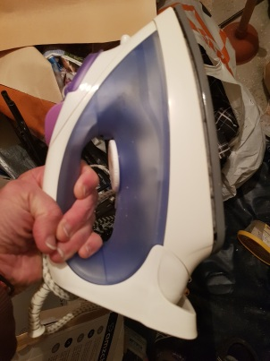
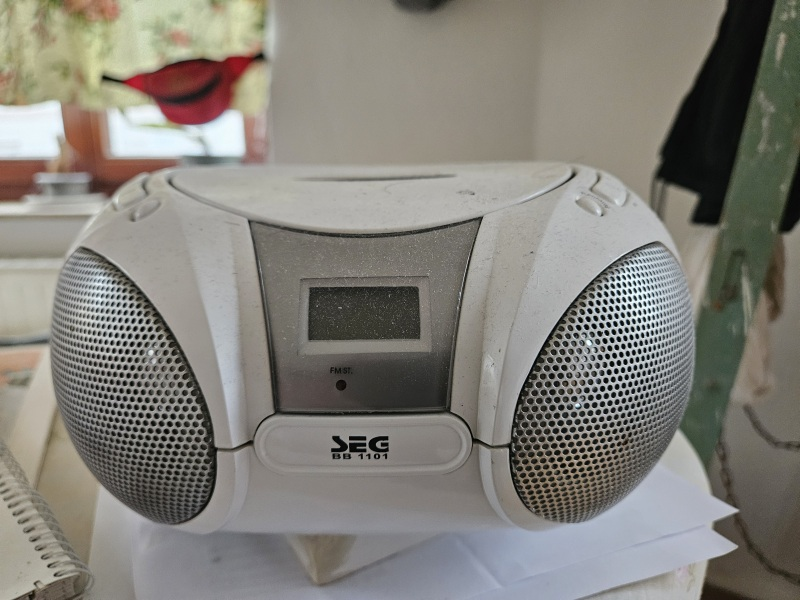
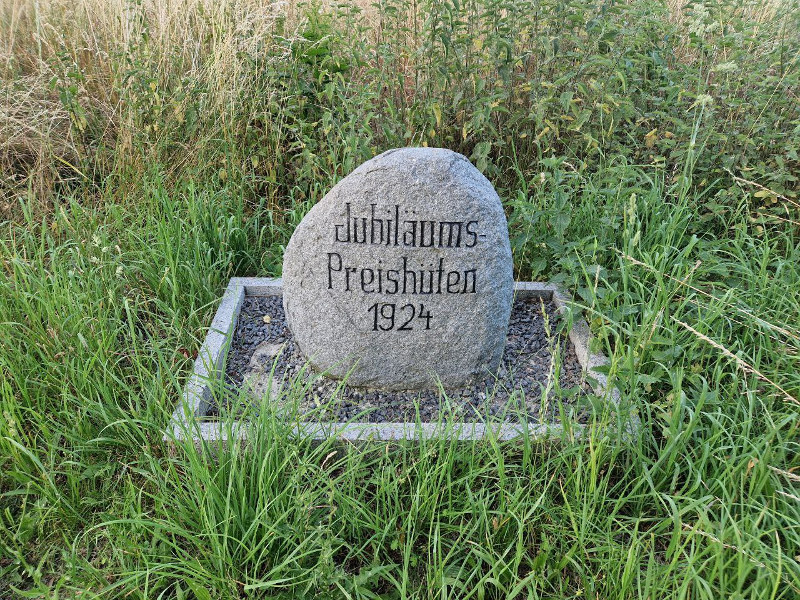
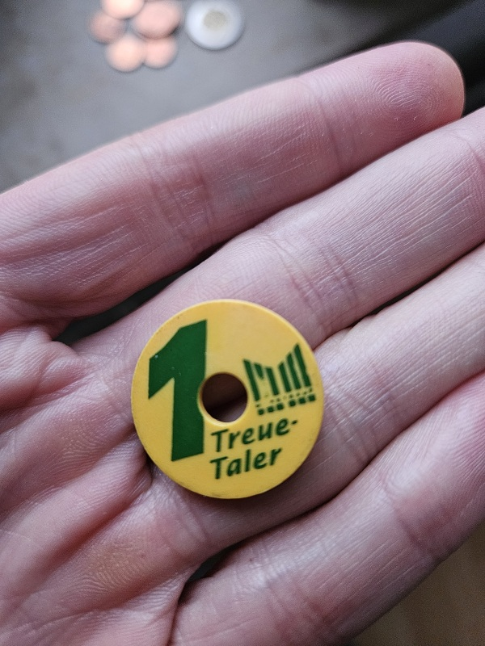

17. Februar 2024, Montag
Nachdem ich die Prüfung B1 abgegeben hatte, wurde ich vom JobCenter in irgendeine Akademie der Magie und der Zauberei geschickt. Ich weiß #, warum. Vielleicht wegen meiner zahlreichen Bitten, mich irgendwohin zu schicken, damit ich mich in die IT einsteigen könnte. Diese Akademie residiert am Rand unserer Stadt, und ihr Tätigkeit ist ein großes Geheimnis. Es kursieren Gerüchte, dass sie Datenbanken über alle Leute einsammelt.Sobald ich in das Gebäude der Akademie eintritt, traf eine schöne Frau mich um Vestibül, und sie zeigte mir, in welches Zimmer ich mich begeben soll. Mir ist, sie stand dort speziell, um solche Neulinge wie ich, in Empfang zu nehmen. Es folgten verschiedene Papiere, Fragebogen usw.
Ich schaue mich um. Wer sind diese meine neuen "Kollegen"? Das Publikum bestand aus einfachen Leuten, sie sahen nicht so aus, als ob sie mit jeglicher wissenschaftlichen Tätigkeit etwas zu tun jemals hatten, Das sind entweder Migranten oder Deutschgeborene aus bescheidenen Familien. Man nennt uns, "Junker".18. Februar, Dienstag
Der zweite Tag. Ich habe schon den Plan wahrgenommen: jeden Tag vom 8:15 bis 15:45. Es gibt einige Pausen, unter denen die wichtigste die Mittagspause ist, von 12:45 bis 13:15. Das ist das "Hauptquartier" der Akademie, hier werden Lektionen durchgeführt, es gibt auch sogenannte Werkstatt an dem gegenüberliegenden Ende der Stadt, wo jeder von uns ca. einmal pro Woche mit Holz arbeitet. Jeder Junker bekommt einen USB-Stick als Geschenk.
Als ich dran war, antwortete ich einfach, dass ich keine Ahnung habe, das Befehl wurde mir vom JobCenter erteilt, und ich habe gehorcht.
Er lächelte. Nachdem er erfuhr, dass ich einen wissenschaftlichen Hintergrund beherrsche, bot er mir an, mein Diplom später zu bringen, um festzustellen, ob etwas gutes aus diesem Zeugnis auf dem Territorium von Deutschland herzustellen ist.19. Februar, Mittwoch
Neben den Lektionen und der Werkstatt gibt es noch einen Aspekt in der Tätigkeit der Akademie: Exkursionen, mit der Kadenz ca. alle zwei Wochen.
Heute fand die erste Exkursion statt. Das Ziel war ein Osnabrücker Museum, der der Geschichte des Nazi-Regimes gewidmet ist. Herr Rudel war unser Führer. Uns wurde die Aufgabe gegeben, drei Fotos von den am meisten eindrucksvollen Exponaten fertigzustellen und zu beschreiben. Ich machte gehorsam Fotos von irgendeinem Kopf Stalins, von irgendeiner Konservenbüchse und von irgendeinem Skelett, verfasste eine Beschreibung dazu, so gut meine Fantasie das erlaubte, und schickte.20. Februar, Donnerstag
Heute kam ein neuer Dozent, Herr Hartmann, und er begann gemeinsam mit Herrn Rudel Ergebnisse der gestrigen Exkursion zu analysieren. Wie ich feststellte, hat niemand außer mir die Hausaufgabe seriös betrachtet. Aus diesem Grund wurde ich heute zu einer Zielscheibe für Fragen von den Dozenten. Ich wurde viel angesprochen und wurde gezwungen etwas auf Deutsch zu antworten zu versuchen, obwohl mein Deutsch schwach ist.21. Februar, Freitag
Heute kam eine Dozentin namens Frau Gorbatschowa. Sie hat russischen Hintergrund. Immer, wenn sie mit sowjetischen Studenten kommunizierte, sprach sie mit ihnen nur Russisch. Das hat mir # gefallen. Ich habe Prinzipien doch. Wenn ich hier meine Zeit verschwende, soll ich etwas dafür bekommen, mindestens eine Erfahrung in der mündlichen deutschen Sprache!Aber ich kann den Sinn dieser Akademie # begreifen. Mit Programmiersprachen hat sie offensichtlich nichts zu tun.
24. Februar, Montag
Eine neue Junkerin erschien, namens Nancy. Sie sah nett und jung aus. Sie stammt aus der Ukraine. Einmal bat sie mich um irgendeine Hilfe im Programm "Word", wo sie sich in Tabellen verlaufen hatte. Ich half und fühlte, dass irgendeine Kraft zieht mich an sie.25. Februar, Dienstag
Jeden Tag kommt es dazu, dass man etwas neues von seinen Kameraden erfährt. Eine Dozentin, namens Frau Iljuschin, mag die Leute mit dem Migrationshintergrund # und fragte mich spöttisch, warum ich so alt bin, aber keine Familie erschuf. Es löste so einen Dialog aus:- "Ich spreche deutsch #."
- "Deutschland ist voll von ukrainischen russischsprachigen Frauen!"
- "Ich sitze 8 Stunden in der Akademie und habe keine Möglichkeit, Bekanntschaften zu schließen!"
- "Und Nancy?"
- "Sie ist verheiratet."
Jemand von den Dozenten fragte nach etwas Nancy, und es stellte sich heraus, dass sie alleinerziehende ist.
Sie wendete sich an das Auditorium mit der Frage, warum sie allein in der ersten Reihe sitzt. Dort zu sitzen ist tatsächlich bequem, da man dem Dozenten gut zuhören kann, was wichtig in unserer Situation ist, wo unsere Erfahrung noch in den Kinderschuhen steht und die mündliche Sprache nicht immer zu entziffern ist. Ich verstehe, warum Junker die hinteren Bänke bevorzugen: dort ist es bequemer, sich zu langweilen. Ich bin der Einzige, der aufstand und sich auf die Schulbank neben sie hinsetzte.Einmal betritt sie das Klassenzimmer und fragte, wer den Kaffee trinken will? In der Küche der Akademie stand eine Kaffeemaschine, und Nancy hat sich schon mit diesem Gerät angefreundet. Ich erhob mich und ging mit ihr.
26. Februar, Mittwoch
Heute war eine Lektion in der Informatik. Die erste Aufgabe war, einen Lebenslauf zu verfassen. Herr Heinkel bringt uns das Programm "Word".Der Kopf begann während des Unterrichts tüchtig zu schmerzen.
Nancy lud mich wieder ein, Kaffee zu trinken. Ich mag keinen Kaffee, aber wegen der Kopfschmerzen willigte ich ein. Die Frau, die mich am 17. Februar getroffen hatte, Frau Küste, zeigte uns, wie man die Kaffeemaschine bedient. Nancy erzählte, dass sie nicht dieser Woche angekommen ist, sondern früher, aber wegen einer Krankheit hatte sie einen Urlaub. Sie hat B1 in deutscher Sprache, und ich versuchte, mit ihr ein bisschen diese Sprache zu üben. Jedenfalls hat sie dieselbe Frist, wie ich, 6 Wochen, und das sah vielversprechend aus.Ich gab Nancy einen Riegel Schokolade. Sie schaute sich ihn an, sagte "Ach, Protein!" und legte beiseite.
Sie begann mit mir einige Fakten von ihrer Biografie zu teilen. Einmal klagte sie darüber, dass die Zeit schnell fliegt, es scheint, als ob sie gestern 25 Jahre alt war. Ich machte sofort ein Kompliment: "Sie sehen jetzt als ein 25-järiges Mädchen aus." Sie antwortete etwas verlegen: "Danke." Mir hat gefallen, wie sie die Blumen auf dem Fensterbrett goss. Sie behandelt die Blumen der Akademie, als ob sie ihre eigenen Blumen sind.Sie erzählte mir, dass ihr Tochter in ein nervöses Alter eingegangen ist (11 Jahre alt), was ihr Probleme bereitet.
27. Februar, Donnerstag
Als ich am Morgen in der Akademie ankam, erblickte ich Nancy auf dem Hof, sie kam auch mit einem Fahrrad und hantierte jetzt mit der Kette, die das Fahrrad anschließt. Heute hat sie nicht verspätet. Ich begrüßte sie und schloss meinen "Hubschrauber" neben das von ihr. Es freute mich sehr, dass sie auch eine Radfahrerin ist, was verspricht, dass wir ein gemeinsames Hobby finden.Heute lernten wir mit Nancy zu zweit, da niemand mehr gekommen war, und Herr Hartmann unterrichtete uns.
Während der Pause plaudern wir wieder in der Küche. Ihr Deutsch ist nicht so gut, um Phrasen zu konstruieren, deshalb bat sie mich Herrn Hartmann die Frage zu stellen, wie man nach links mit dem Fahrrad abbiegen kann. Sie bekommt Angst bei solchen Situationen, deshalb steigt sie dann ab, überquert die Straße zu Fuß und fährt weiter.
Ich fand, dass sie meine Schokolade gestern # genommen hat, der unberührte Regel "Snickers" bleibt weiterhin auf dem Tisch liegen.Herr Hartmann fragte, was ist die Muttersprache Nancys, sie antwortete: "Ukrainisch!"
Jemand hat die Kaffeemaschine aus der Küche entfernt. Nancy vermisst ihr Lieblingsspielzeug. Während der Pause schlug sie mir vor, den Kaffee in der Tankstelle neben der Akademie zu trinken, in derselben Tankstelle, wohin mich der Türke einst eingeladen hat. Unterwegs erfuhr ich, dass er nicht nur meine Person, sondern auch andere Personen in die Tankstelle manchmal einlädt: Nancy sagte, dass sie von dem Türken in diese Tankstelle einmal eingeladen wurde. Ich genieße die Pause mit Nancy beim Kaffeetrinken und höre ihr zu. Nancy erzählt, dass ihr Vater gestern Geburtstag gehabt hat. Ich nahm ein Stück Papier, schrieb meine Rufnummer auf und gab Nancy ("für alle Fälle").
Wir fuhren zusammen aus der Akademie aus. Ich wies sie auf das Plakat beim Tor der Akademie hin und fragte sie, ob sie Tiergarten besuchen will. Das Plakat ist dem Tiergarten gewidmet, der in unserer Stadt vorhanden ist.
Auf dem Weg aus der Akademie ins Zentrum gibt es so eine Stelle, wo der Fahrradweg endet und gegenüber, links von der Fahrbahn, wieder beginnt. Ich beschloss Nancy zu zeigen, wie man nach links abbiegt. Ich sagte ihr: "Machen Sie wie ich!", nahm die Mitte der Fahrbahn ein, und bog nach links ab. Aber sie hatte Angst.
28. Februar, Freitag
Ich kann nicht begreifen, warum Nancy sich jeden Morgen verspätet.3. März, Montag
4. März, Dienstag
Was mich betrifft, ich suchte mir speziell ein Viertel aus, wo Deutsche meistens wohnen, um auf russischsprachige Leute weniger zu treffen, aber solange ich in dieser Stadt wohne, wurde ich nie in irgendein Gespräch auf Deutsch engagiert. Nur "Hallo!", "Auf Wiedersehen!" und "Mit Karte bitte." - das ist mein tägliches Repertoire. Alle meine Kenntnisse in Deutsch stammen aus Büchern. Obwohl meine Erfahrung mit Büchern half mir ein Zertifikat B1 zu kriegen, verstehe ich mündliches Deutsch schlecht, fast nichts verstehe ich mündlich.
"Kennen Sie Tante Erika?" - fragte Nancy. Ich antwortete: "Klingt bekannt." Im Mai habe ich bei einer Frau mit solchem Vornamen tatsächlich einen Kühlschrank gekauft. Sie mit ihrem Ehemann wollten mir auch Möbel schenken, aber ich entkam ihren Versuchen. Ich fühle mich sehr unerfahren in Deutschland, ich weiß #, ob es sich überhaupt lohnt, hier Fuß zu fassen. Mir scheint, wenn mir jemand hilft, dass irgendeine Sekte mich lockt. Ich habe auf jegliche Möblierung verzichtet. Sowohl damals als auch nun bleibt meine Wohnung fast kaum möbliert. Ich wohne unter primitiven Bedingungen, wie ein Asket. Ich bin sogar mit dem Festnetz # verbunden, benutze das mobile Internet ausschließlich.5. März, Mittwoch
Auf dem Hof unserer Akademie arbeitet ein Gärtner. Er ist nicht nur Gärtner, sondern auch Hausmeister, der für das Gebäude der Akademie verantwortlich ist. In der Regel nehme ich niemals mit Deutschen jegliches Gespräch auf. Man kann leicht nachvollziehen, warum. Ich kenne viele Wörter, vielleicht sogar alle. Aber zu jedem deutschen Wort soll man einen Haufen von Regeln einstudieren, wie dieses Wort sich in Kombination mit anderen Wörtern dekliniert, konjugiert usw. Da ich immer noch schwach bin, um mir es zu leisten, mich an diesen Regeln festzuhalten, traue ich mir #, mündlich Sätze zu bauen. Falsche krümme unvollendete Sätze auszusprechen - darauf habe ich keine Lust: ich finde kein Vergnügen darin, wie eine betrunkene oder debile Person in Augen von den Aborigines auszusehen.
Ganz anders sieht die Situation aus, wenn ich nicht spreche, sondern schreibe. Vor 10 Jahren war ich ein Mathematiker, und weiß es, die Formeln zu kritzeln. Die Formeln - das ist der beste Vergleich zur deutschen Grammatik. Schriftlich kann ich mich konzentrieren, dann gelingt es mir nicht allzu schwierig, die entsprechenden grammatischen Regeln in meinem Gedächtnis auszufinden.Versuche ich zu sprechen, stolpere ich sofort, und die deutsche Mentalität hat eine äußerst unangenehme Üblichkeit: den Sprechpartner zu korrigieren ist hier nicht angebracht. Aber wenn man dich # korrigiert, bekommst du kein Feedback, was deiner Entwicklung # beiträgt.
Trotz alledem aus irgendeinem Grund entstand eine kurze Kommunikation zwischen mir und dem Gärtner.
6. März, Donnerstag
Heute haben wir einen Unterricht in der Geografie. Frau Reitsch gibt uns die Aufgaben, Marschrichtungen zu verschiedenen Orten der Welt zu kalkulieren. Sogar eine Reise nach Paris kalkulierten wir. Wie immer saß ich neben Nancy, und ein Kalkül in Bezug auf diese ewige Stadt wirkte sehr romantisch.
Der Gärtner warf mir vor, dass ich die Fahrradschuhen auf dem Territorium der Akademie trage (er machte sich Sorgen um die Gefahr, das Linoleum zu beschädigen).7. März, Freitag
Heute haben wir weder Lektionen noch die Werkstatt. Heute findet eine Exkursion wieder statt. Die Junker versammelten sich wieder am Bahnhof. Für Nancy ist das die erste Exkursion (für mich - die zweite). Sie kam zu mir auf dem Bahnsteig und begrüßte mich.
Das Ziel ist das Hindenburg-Monument in Osnabrück. Wir haben das Hindenburg-Monument erfolgreich erreicht, aber wir kamen hinein #, wir fotografierten uns nur nebenbei.
Nach dem Hindenburg-Monument stand eine kurze Fahrt Richtung das Unternehmen "Amazon" auf dem Plan. Meine Aufgabe war, unsere Gruppe von Zeit zu Zeit zu fotografieren.Nancy gab mir ihre Rufnummer und bat, die Fotos ihr per WhatsApp zu schicken.
Der Türke hat sich verspätet oder verlaufen. Er schließ sich uns nur am Ende, an der Station "Messe". Sofort begann er Nancy anzusprechen ("Wie geht's? Und so weiter.").Zum Schluss der Exkursion wurde für uns Kaffee in dem Osnabrücker Hauptbahnhof organisiert. Solche spontanen Veranstaltungen mag Nancy, und sie begann gern, Tisch zu decken zu helfen. Ich nehme wahr, dass Nancy ein bisschen für mich sorgt, mich behandelt und sogar verwöhnt, obwohl der Türke sich schon der Exkursion angeschlossen hat. Plötzlich stellte ich mir vor, dass ich sie verlieren kann. Dieser Gedanke und der starke Kaffee brachten mich in eine richtige Ohnmacht. Frau Reitsch fragte, was mit mir los ist, und gab mir irgendein Brötchen. Dank diesem Brötchen erholte ich mich.
8. März, Samstag
9. März, Sonntag
10. März, Montag
Ich nahm ein Paar normale Schuhe mit und zog sie an, bevor ich in die Akademie eintritt. Der Gärtner lobte mich.
Nancy ist morgens in die Akademie sehr stressig angekommen. Ihr hat jemand ihr Benutzerkonto in Telegram weggenommen. Dieser Verbrecher hat sogar vielen Kontakten Nancys die Bitte geschickt, Geld zu überweisen. Nancy bat mich um Hilfe, und ich versuchte den Mechanismus der Falle zu begreifen, die ihr der Verbrecher gestellt hat. Allmählich begriff ich die Handlungen des Verbrechers, sie waren sehr primitiv: Nancy bleibt der erste Benutzer des Kontos, und der Verbrecher kann mit ihr den kurzen Prozess # machen, aber Telegram ist so konzipiert, dass der erste Benutzer den Eroberer zu entfernen nur dann berechtigt ist, wenn der erste Benutzer das erste Handy findet, wo dieses Konto überhaupt zur Welt gebracht wurde.
Heute schleppte ich Frau Reitsch eine Brezel, um ihr Kosten für meine gestrige Rettung zu kompensieren.11. März, Dienstag
Frau Reitsch hörte der Geschichte Nancy von Telegram zu und empfahl uns, in der Polizei eine Anzeige bezüglich dieser Invasion anzukündigen.Frau Gorbatschowa half kleiner Nancy auch. Sie veränderte das Profilbild, platzierte darauf eine Plakette: "Das Benutzerkonto ist gehackt!" Ich merke mich, dass Nancy sich mit Frau Gorbatschowa angefreundet hat. Die gemeinsame Sprache und das gemeinsame Alter (Frau Gorbatschowa ist sehr jung, fast so jung, wie Nancy).
Nach dem Unterricht brachen wir mit Nancy uns in das Polizeiamt auf. Ich sah, dass Nancy, wenn ihr es # gelingt, etwas zu erklären, greift nach ihrem Handy und beginnt in die KI etwas hastig in der Muttersprache zu reden und dann dem Sprechpartner die erstellte Übersetzung zu zeigen. Ich verbot ihr, "Google Transator" zu benutzen, ich bat sie ruhig in Russisch mir weiterzugaben, was sie sagen will, damit wir zusammen den Gedanken formulieren. Aber ich stieß auf Schwierigkeiten. Sie ist nicht entspannt, nervös, weshalb ist es schwierig, etwas Verständliches zu verfassen.
Ich kam der Idee, dass das Wichtigste ist, alle bekannten Koordinaten des Verbrechers weiterzugeben. Der Mechanismus des Verbrechens liegt sowieso auf der Hand: sie gab dem Verbrecher den Zugang zu ihrem Benutzerkonto preis. Die Umstände, die dazu geführt haben, spielen jetzt keine Rolle. Wen interessiert das, dass du dem Verbrecher als einen adäquaten Menschen fand und ihm glaubte? Die aktuellste Herausforderung ist jetzt, die weitere gemeine Tätigkeit des Verbrechers anzuhalten und ihn entweder abzuschrecken oder vor das Tribunal zu ziehen.
Der Polizistin mussten wir unsere personellen Daten verraten, ich auch. Also ich, als der Begleiter des Opfers, zeigte meinen Ausweis vor. Meine Daten (der Name, die Adresse, das Geburtsdatum usw.) wurden auf dem Protokoll zu sehen, das Nancy erhielt.12. März, Mittwoch
Nancy erfüllte meine Bitte und brachte das "ursprüngliche" Handy (vielleicht nahm sie es ihrer Tochter). Ich ergab ihr die Anweisung, das Nutzerkonto auf dem Handy der Tochter wiederherzustellen, um den Verbrecher von diesem Handy aus zu vertreiben zu versuchen. Ich verband ihr Handy mit meiner E-Mail, damit jede Handlung, die in Bezug auf dies Konto vor sich geht, mir akut weitergegeben wird.
Nachmittags, als ich mich von den Lektionen erholte, bekam ich von Nancy eine lange SMS. Sie enthielt eine Bitte, auf keine Liebe gegenüber ihr zu hoffen. Lau ihren Worten, schätzt sie meine Aufmerksam, die ich ihr gegenüber erweise, aber sie möchte, dass diese Beziehungen nur in Form einer Freundschaft weiter existieren.
Ich antwortete nichts. Ich habe eine Initiative auf meine eigene Faust ergriffen und jetzt ernte, was ich verdient habe. Man kann mein Motiv leicht erklären: ich bin ein 49-jähriger Mann, der eine Krise des Alters erlebt. Ich werde von der Manie verfolgt, dass ich bis 50 Jahre alt unverheiratet bleibe. Das ist mein Kampf, der möglicherweise (hochwahrscheinlich sogar) zum Scheitern schon verurteilt ist. Ich versuche, mich mit meinem Gewissen zu verständigen, ob ich eine richtige Entscheidung treffe.
Aber der Abend war sehr heiß. Ganzen Abend lang kamen an meine E-Mail verschiedene Codes, und ich schickte Nancy sie per WhatsApp zurück. Das bedeutete, dass Nancy alle Kunden ihres Nutzerkontos aktiv vernichtete. Dabei löschte sie sich selbst. Sie löschte und begann wieder Telegram zu installieren und drehte diesen sinnlosen Zyklus dutzend Mal. Aber das amüsierte mich. Das war meine Rache für ihr Verbot von Liebe.
13. März, Donnerstag
Heute bin ich in der Werkstatt. Natalie ist im Hauptquartier. Ich schrieb ihr eine Textnachricht: "Wie geht's?" Sie antwortete etwas und ich beschloss, dass sie etwas verschweigt.
Der Chef hat uns früher als um 15:45 freigelassen, und ich fuhr von der Werkstatt aus nicht nach Hause, sondern in das Hauptquartier. Das Fahrrad Nancys stand noch auf dem Parkplatz. Ich betritt das Gebäude und traf auf eine Gruppe aus drei Menschen, die aus Nancy, Herrn Hartmann und Herrn Rudel bestand. Als ich Nancy erblickte, begann mein Herz öfter zu klopfen.Sie ging zu einem Interview mit Herrn Rudel und ich blieb mit Herrn Hartmann auf der Etage stehen. Er fragte mich, was ich in der Werkstatt gemacht hatte, und schlug vor, mir normale Fotos für den Lebenslauf zu machen. Wir vereinbarten den nächsten Mittwoch für dieses Unternehmen.
Nancy beendete das Interview, und wir gingen auf den Parkplatz. Aber sie sagte, dass sie jetzt ein Fahrrad-Service besuchen will, wo sie Pedale wechseln will. Sie versprach, mich nachdem zu Hause zu besuchen.Sie kam, wie versprochen, um die Ergebnisse ihrer gestrigen Tätigkeit zu überprüfen. Wir sollen auf dem Verbrecher ein Kreuz machen und diese stressige Angelegenheit mit Telegram endgültig schließen. Aber es ist gegen 17:00 schon, und ich mache mich auf meine Arbeit. Jeden Donnerstag arbeite ich kurz als Nachhilfslehrer in einem Büro, das in hundert Metern von meinem Restaurant liegt. Ausgerechnet heute ist Donnerstag, aber ich soll heute nur für einige Minuten dort erscheinen. Aus diesem Grund beschloss ich, Nancy mitzunehmen, um sowohl ihr Gefallen zu tun als auch meine eigenen Pläne nicht zu verderben.
Unterwegs zeigte mir ihre neuen Pedale so stolz, als ob es um neue Schuhe handelte. Aber, sagte sie, das Problem mit den Gängen ist noch nicht gelöst. Ich fragte: "Warum repariert Der Ihnen #, wer es Ihnen geschenkt hat?" Sie antwortete: "Ach, der Ehemann Tante Erikas ist sehr alt und hat schlechtes Sehvermögen."Ich schließ unsere zwei Fahrräder mit meiner Kette zusammen an und führte sie in mein Büro. Dort besprach ich etwas mit meiner Chefin, einer schönen Frau. Während des Gesprächs befahl ich Nancy, ein bisschen im Vestibül auf dem Stuhl mich abzuwarten. Nancy begann, zu nerven. Ich sagte ihr ein bisschen ekelhaft: "Können Sie nicht 5 Minuten ruhig bleiben? Sie kennen den Code der Kette, sie können selbst ihr Fahrrad abholen und mich in Ruhe lassen!" Endlich wurde ich frei. Ich warf einen Blick auf ihr Handy: der Verbrecher wurde erfolgreich ausgelöscht. Wir verließen das Gebäude.
Um mein Benehmen im Büro, ein wenig auszugleichen, holte ein von den Spielzeugen, die ich in der Werkstatt gebaut hatte, aus der Tasche heraus. Sie wollte zuerst das Geschenk # annehmen. Anscheinend halte sie noch an ihrer gestrigen Position "Freundschaft über alles!" noch fest. Aber da erkannte sie, dass dies ein ausgesägter ukrainischer Dreizack ist, und nahm es an, wie ein Kind: "Wollen Sie, ich bemale ihn?"
Wir begannen Abschied zu nehmen, und sie fragte: "Können Sie morgen mein Fahrrad trotzdem untersuchen?" Ich nickte.
14. März, Freitag
Heute hat Nancy sich # verspätet. Sie schließt ihr Fahrrad gleichzeitig mit mir auf dem Hof der Akademie und fragt mich kokettierend: "Was machen Sie in dem Büro, wo wir gestern waren?" Um sie zu necken, antworte ich: "Haben Sie meine Chefin gesehen? Sie ist faszinierend, nicht wahr? Ich mache dort Versuche, mein privates Leben auf die Beine zu stellen!"- Sie fragte mich unterwegs: "Wie alt sind Sie? 49?"
- Ich fragte sie im Gegenzug: "Wovon Sie das wissen?"
- "Sie sagten in Ihrer Vorstellung: 'Fast 50'!"
- "Ja, aber ich bin 51."
Bis ihrem Haus bleibt noch eine Strecke paar Kilometer lang, und nach einer Pause fragte sie mich kokettierend: "Können Sie mir Ihren 'Hubschrauber' ausleihen?" Ich willigte ein.
15. März, Samstag
Die "Krankheit" des Fahrrads ist lächerlich. Sie lag an einer Modernisierung, die diesem Mädchen jemand getan hat. Das kann man leicht nachvollziehen: Jemand installierte auf dies Fahrrad den Fahrradständer und hatte mit diesem Ständer das Kabel, das die Gänge bedient, ganz gewürgt (für die Fixierung des Ständers ist eine große Schraube zuständig, die sehr mächtig ist, sodass das Kabel unter diese Schraube wie in einen Schraubstock geriet). Ich befreite das Kabel und die Schaltung begann zu funktionieren. Mir blieb es nur, die Schaltung einzustellen.
Ich kann # begreifen: was für eine Ingenieurin bist du, wenn du so eine Panne # beheben kannst?Ich testete ihr Fahrrad und erreichte ein naheliegendes Dorf. Von dort aus schickte ich ihr ein Herz. Das Herz habe ich auf einer Straße des Dorfes gefunden, ein Graffiti, und fotografierte es mitsamt dem Fahrrad (um zu zeigen, wie weit ich mit diesem Fahrrad gefahren bin). Zu meinem Erstaunen empörte sie sich über das Herz #, ihre Reaktion kann ich sogar als etwas kokettierend bezeichnen.
Ich kam zum Kaufland, um den Austausch der Fahrräder durchzuführen. Sie verspätete sich um eine gute halbe Stunde. Ihr Parfum strahlte so ein Aroma, als ob sie zu einem Date ging, aber mir hat dieses Zusammentreffen nicht sehr gefallen. Das Rendezvous war kürzer als ihre Verzögerung, und mich verfolgt das unangenehme Gefühl, dass sie ein Date mit dem Türken heute habe.16. März, Sonntag
Plötzlich rief Nancy mich an, sagte, dass der Ehemann von Tante Erika krank ist und die Fahrt abgeschafft hat. Sie lud mich ein, mich ihnen beiden anzuschließen, um den Tiergarten in unserer Stadt zu genießen, zu dritt. Sie versprach, dass wir in 2 Stunden starten, aber in Wirklichkeit ereignete der Start der Exkursion sich erst nachmittags, näher zum Abend. Kein Interesse an mir zeigte Freya, aber benahm Nancy sich sehr freundlich bezüglich meiner Person. Sie sagte mir sogar, dass sie an den See eines Tages zusammenfahren möchte.
In diesem Tierpark gibt es nicht nur Käfige mit Tieren, sondern zahlreiche Spielplätze. Freya mag solche Geräte leidenschaftlich.Auf einem Sportgerät amüsierten wir uns mit Nancy, und ich bemerkte, dass sie sehr schüchtern ist, sie fürchtet schnelles Schwingen. Das befestigte meine Entscheidung, mich um sie zu kümmern.
Wir verließen den Tiergarten, und bei seinem Tor trennten wir uns: Nancy sagte mir "Auf Wiedersehen", obwohl nur einziger Weg in die Stadt führte. Ich fuhr gehorsam weg.Ich war nach Hause schnell angekommen, und da erblickte ich durch mein Fenster, wie Nancy und Freya neben meinem Haus ihren Rückweg fortsetzen. Sie übergingen den Fußgängerstreifen und fuhren miteinander parallel Richtung Kaufland: die Tochter auf dem Fußgängerweg und die Mutter auf der Fahrbahn. Einmal blieben sie stehen. Anscheinend erwies der Scheinwerfer Freyas immer noch technische Pannen.
Ich wendete vom Fenster, # begreifend, warum sie darauf verzichtet hatten, dass ich sie mindestens bis zum Zentrum begleitete.17. März, Montag
18. März, Dienstag
Ich nahm etwas Erde bei dem Gärtner. Ich will die Kaktusse in meiner Wohnung umzupflanzen, da sie ihren Blumentöpfen schon entwachsen sind. Er sagte mir, dass Blumen etwas spezielle Erde brauchen, und schüttelte mir in eine Dose eine Portion des Grunds, den er für seine Obstbäume vorbereitet hatte. Nancy beobachtete, wie ich mit ihm "spreche". In diesem Moment stand sie aus irgendeinem Grund allein.
19. März, Mittwoch
Heute erzählt uns Herr von Richthofen eine Lektion im Rahmen des Themas - "Vorstellungsgespräch". Herr von Richthofen hielt uns nicht lange, aber er hat eine interessante Pyramide gemalt, wo der erste Eindruck 58% einnimmt, 35% Gestik, Mimik und nur 7% das Fachwissen (wie der Gipfel des Eisbergs).
Nancy ist heute nicht im Hauptquartier, sondern in der Werkstatt. Mir gefällt nicht sehr, dass sie mit dem Türken dort die Zeit verbringt (er ist auch heute in der Werkstatt). Trotzdem schickte sie mir nachmittags Fotos ihrer Handwerke. Das hat meine Laune etwas erhoben. "Atemberaubend" - antwortete ich ihr.
Herr Hartmann erfüllte sein Versprechen, mich für den Lebenslauf zu fotografieren. Ich kann # begreifen, warum die Deutschen stets propagieren, Lebensläufe zu vermehren? Wir sprechen deutsch #! Man braucht solche Mitarbeiter wie uns kaum!
Während des Rückwegs verlor ich einen von den Nancys Reflektoren, wendete und fand ihn wieder. Ich erwischte mich an dem Gedanken, dass ich in Ereignissen Zeichen Gottes zu suchen anfange, wie meine Nancy.20. März, Donnerstag
Wir versammelten uns am Bahnhof für eine Exkursion ins Unternehmen GLOBUS. Sie ist mit ihrem Fahrrad angekommen. Ich erzählte Nancy über die gestrige Pyramide. Sie begriff den Sinn dieser Anekdote sekundenschnell: die Pyramide sieht wie ein Eisberg, dessen Löwenteil besteht aus der Kleidung, der Mimik, der Gestik, der Manieren usw. Als ich nach dem Wort suchte, das für den kleinsten Anteil der Pyramide passt, schlug sie das Wort "die Kompetenz im Fach" vor.Dann erschien der Türke und Nancy spazierte stets mit ihm. Während der Promenade durch die Metzgerei versuchte sie ihm sogar eine von den Würsten zu geben, die uns der Metzger schenkte, aber die Wurst war aus Schweinfleisch.
Ich kaufte in Globus einen Zauberwürfel.Nur in einer Episode war der Türke nicht neben ihr. Einmal geraten ich und Nancy zusammen in die Gesellschaft von einer Junkerin namens Iris, die etwas älter als wir ist. Sie ist ein Frau mit guten Manieren, ich werde sie im Weiteren "Frau Iris" nennen. Nancy fragte Frau Iris was mein gestriges Wort "atemberaubend" bedeutet. Frau Iris sagte scherzhaft, dass jede Frau solle, wenn sie so ein Kompliment bekommt, ins Bett mit ihrem Bräutigam gehen. Nancy lachte.
Als wir in unserer Stadt angekommen waren, wartete ich auf Nancy. Wir hatten einander sogar "Tschüss!" # gesagt. Sowohl mein als auch ihr Fahrrad waren am Bahnhof angeschlossen, und meinem Kalkül nach, sollten wir wie üblich zusammen Richtung Zentrum abfahren. Aber sie kam auf den Parkplatz #. Mich überfüllte das schlechte Gefühl, dass sie sich mit dem Türken irgendwo verzögert hat. Als ich nach Hause kam, guckte ich paarmal durch mein Fenster sogar, ob sie endlich nach Hause fährt. Aber sie erschien #.
Am Abend rief Nancy mich plötzlich an. Der Anlass des Anrufs ist unwesentlich: sie sagte, dass sie einen Termin mir Herrn von Richthofen heute mittags hatte, aber hatte ihn vergessen. Ich fragte, was ich damit zu tun habe. Sie fragte mich, ob ich weiß, wird Herr von Richthofen morgen an der Akademie anwesend sein oder #? Ich hatte keine Ahnung. Nancy versuchte mir die Lage zu erklären, in welche sie geraten ist, und fing an mit solchen Worten: "Ich fuhr gleich nach der Exkursion nach Hause." Das klang wie ein Hohn.Ich bin nicht dumm, ich kapierte schnell, dass dieser verlorene Termin mit Herrn von Richthofen nur als Anlass dient, dass sie mit mir sprechen will, vielleicht Sehnsucht nach mir sogar hat. Aber ich fühlte mich verraten, ich betrachtete ihr Verhalten als Verrat.
21. März, Freitag
Heute gab uns Frau Reitsch die Aufgabe, ein Essay über der Exkursion am 7. März zu verfassen. Das Essay sollte wie eine Illustrierte gestaltet werden. Jemand beschäftigte sich mit Fotos, jemand mit dem Bemalen, ich spiele die Rolle des Verfassers des Textes. Heute ist ein schöner Tag: Nancy kokettiert mit dem Türken #, sie arbeitet neben mir. Einige von den Junkern, deren Muttersprache Deutsch ist, lobten mich, sagten, dass ich ein Talent Schriftstellers habe. Aber einmal habe ich den Monat "März" falsch geschrieben. Ich habe ihn einfach als den Namen des Bundeskanzlers Merz geschrieben. Ich erzählte euch am 5. März schon, wie mich solche Fehler irritieren. Ja, es fällt mir schwer, Deutsch zu erlernen. Es gibt noch Luft nach oben...Danach folgte ein Unterricht in Mathe. Hier gelang es mir, mein Talent zu zeigen, da ich vor 10 Jahren ein Wissenschaftler war. Nancy saß neben mir. Einmal näherte der Türke sich zu uns und fragte nach der Lösung eines von Problemen. Ich sah, dass er nichts versteht.
23. März, Sonntag
Nancy rief mich plötzlich an, sagte, dass der Scheinwerfer Freyas sich wieder schlecht benimmt. Sie mit Freya kamen wieder zu meinem Haus. Sobald sie angekommen sind, begann ich mein Leid laut auszudrücken, dass ich so schlecht das Fahrrad repariert habe, dass ich ein schlechter Handwerker bin usw. Nancy versuchte mich zu beruhigen: "Das kann jedem passieren usw."
Ich brachte meinen Zauberwürfel aus der Tasche heraus und fragte:| ich | "Mag Freya so ein Spielzeug?" |
| Nancy | "Sie hatte einen Zauberwürfel in der Heimat." |
| ich | "Die Heimat ist weit entfernt. Ich frage: besitzt Freya einen Zauberwürfel hier?" |
| Nancy | "Nein. Aber wir können so teure Geschenke # annehmen." |
| ich | "Haben Sie nach der Meinung Ihrer Tochter überhaupt gefragt?" |
Ich traf die Entscheidung, diesen alten Scheinwerfer durch meine teure LED zu ersetzen. Dafür sollte ich die LED von meinem Fahrrad abnehmen. Diese LED habe ich vor einigen Monaten für 30€ gekauft, und war sehr stolz auf sie. Das Fahrrad Freyas blieb wieder bei mir übernachten, und die zwei Mädchen gingen nach ihrem Hause.
24. März, Montag
Heute verspätete Nancy sich aus irgendeinem Grund #. Ich stand auf der Schwelle der Akademie. Direkt nachdem sie sein Fahrrad angeschlossen hatte, kam sie zu mir. Ich fühlte mich im siebten Himmel.Während der Pause spricht Nancy mit ihrer Mama, und ich kam zum Gärtner. Dabei bin ich buchstäblich unter der Erde versunken. Ich meine das Loch, das der Gärtner im Hof für etwas ausgegraben hat. Da der Gärtner mit seinem Kopf in der Tiefe verschwand, musste ich in dem Loch auch sinken, um ihn anzureden. Ich frage ihn, ob ich ihm etwas für die Erde schuldig bin, Bier oder so etwas. Der Gärtner wollt nichts. Herrn Hartmann kam zu uns und fragt mich nach dem Schicksal der Fotos, die er am 19. März machte. Er interessiert sich sehr, ob ich sie schon in den Lebenslauf eingeschlossen habe. Ich antworte, dass diese Fotos mir # gefallen haben (Als Herr Hartmann mich fotografierte, versuchte er mich zu lächeln zu zwingen, aber das niedrige Niveau meines Selbstvertrauens erlaubt mir das #, ein natürliches Lächeln zu gebären. Deswegen lächele ich dort böse und unzufrieden).
Nach dem Unterricht besucht Nancy mich, um ihr Fahrrad abzuholen. Sie kam ohne Freya und betont, dass sie absichtlich ohne Freya angekommen sei. Sie erklärt, dass sie mit mir personell sprechen will. Ich nickte. Sie fragt mich wieder, warum ich so kalt ihr gegenüber bin. Ich weiß #, was ich antworten soll. Sie klagt darüber, dass ihr Stolz ihr schon fast verboten habe, mir Zeichen zu geben fortzusetzen, da ich diese Signale nicht berücksichtige. Dennoch, sagte Sie, beschloss sie, heute mir die letzte Chance zu geben."Ob ich ihr wirklich gefallen habe? Aber sie ist um gute 20 Jahre jünger als ich! Jedenfalls ist der 28. März der letzte Tag in der Akademie, und nach dem Abschluss werden wir uns niemals sehen!" - denke ich, während wir das reparierte Fahrrad zusammen schieben.
Eine von ihren Nachbarn, eine junge ukrainische Frau, begrüßte uns. Nancy zeigte keine Verlegenheit vor der Nachbarschaft hinsichtlich des Fakts, dass ich mit ihr zusammen gehe.So erfuhr ich ihre exakte Adresse.
25. März, Dienstag
Heute befinden wir mit Nancy uns in den diametral gegenüberliegenden Enden der Stadt. Lau dem Lehrplan ist sie heute mit dem Handwerk in der Werkstatt beschäftigt und ich - mit den Lektionen im Hauptquartier.
Während einer der Lektion erfuhr ich, dass die deutsche Regierung sich daran interessiert, dass Singles Paare bilden, da es günstiger sich ergibt, eine Wohnung pro eine Familie liefern, als eine Wohnung pro einen Menschen. Mir kam die Idee, Nancy zu heiraten und auf diese Weise die ukrainische Bürgerschaft zu kriegen.
Die Lektionen im Hauptquartier sind nicht immer der Bundespolitik gewidmet. Manchmal zieht man für uns Unterrichtsstunden in Mathe voll, ab und zu gucken wir Filme oder spielen intellektuelle Spiele. Heute z. B. brachte Frau Reitsch uns einige Nuancen der deutschen Sprache bei. Sie druckte Aufgaben mit dem Drucker aus und verteilte sie unter Junkern. ich nahm eine von den Aufgaben mit, um Nancy sie weiterzugeben.Nach dem Unterricht lud ich Nancy zu einem Zusammentreffen im Park ein. Sie kam mit Freya. Das Fahrrad Freyas leuchte dank meinem Scheinwerfer wie ein Stern.
Ich wusste #, auf welche Weise ich das Gespräch anfangen soll, und begann meine Jacke auszuziehen. Nancy fragte: "Was haben Sie vor?" Ich sprang auf einen Stumpf und führte einen Salto aus. Die Landung war nicht sehr erfolgreich, mein Gesicht wurde im Flug von einem Stein oder einem Zweig getroffen, aus der Nase begann das Blut zu rennen, aber dieser Fall ist eher zu meinen Gunsten passiert: so ein erhöhter Stress verstärkt nur den Eindruck auf die Mädchen.
Nach dem Salto begann ich mit meinem Geständnis. Die Wörter entfielen. Der Sinn der Rede bestand darin, dass die 6 Wochen schon fast vorbei sind, während ich unsere Bekanntschaft # verlieren will.
Nancy sah mich wie einen zweiten Jesu Christi an. Freya schwieg und mischte sich # ein. Ich fragte Nancy, ob sie einverstanden ist, dass wir weiter zusammentreffen und sie mir die ukrainische Sprache weiter beibringt. Sie sagte Ja.
Als wir den Park verließen, trafen wir uns auf meine Chefin. Sie mag dort nach der Arbeit eventuell einen Spaziergang unternehmen. Ich begrüßte sie: "Guten Abend!". Auch Nancy erkannte und begrüßte sie. Meine Chefin beantwortete die Begrüßung #. Man sah ihr an, dass sie meine Manöver zur Sicht bekam und den Schluss daraus gemacht hat, dass ich Nancy Hof mache. Das gefiel meiner Chefin nicht so. Aber ich soll euch sagen, ich stehe auf deutsche Frauen #. Ich kann mir # vorstellen, wie zwei Menschen Liebe üben können, wenn einer von ihnen Deutsch spricht, während der andere nur wie eine behinderte Person zu sprechen versucht? Das Maximum davon, was so ein "Paar" könnte, ist die Wörter aus deutschen Pornofilmen auszutauschen: "Das ist fantastisch!" usw.?
Ich übergab Nancy das Blatt mit der Aufgabe aus der heutigen Lektion, drehte mich um und ging nach Hause, meine Mission wurde hiermit erfüllt.
Vom Haus aus schrieb ich Nancy eine SMS: "Ich liebe Sie und Freya trotzdem." Ich erwartete eine Explosion ihres Ärgers, aber ihre Antwort wies mich # zurück. Im Gegenteil, sie warf mir vor, dass ich sie schnell verlassen und nach Hause # begleitet habe.So eine Chance soll man # verpassen. Als es schon ganz dunkel war, kam ich zur Schwelle ihres Hauses. Ich sollte eine männliche Tat demonstrieren. Ich rief sie an, und sie kam runter. Sie fragte mich, ob ich mich gut nach dem Salto fühle.
Wir standen unter dem Firmament mit den Sternen, sie nahm ihr Taschentuch und wischte die Wunde auf meinem Gesicht. So berührte ich ihre Hand zum ersten Mal. Ich fragte sie, können wir selbst, ohne die Akademie, das Hindenburg-Monument besuchen? Sie antwortete: "Ja, und nicht nur das Hindenburg-Monument erwartet uns." Ich sagte ihr, dass ich ein Fernglas zu Hause habe. Ich schlug ihr vor, dadurch auf den Mond unsere Blicke eines Abends zu werfen. Sie antwortete: "Ja, das würde schön sein."Alles war gut, aber sie stellte eine sonderbare Frage: "Wie sehen Sie die Kinder an?" Ich antwortete: "Normal. Genauso, wie Bäume, Tiere usw." Es stellte sich heraus, dass ihre Tochter ihr sagte, dass ich sie stets anstarre. Ich kapierte, was Nancy mit diesen sonderbaren Fragen meint. Ich fragte: "Wo sie wohnten in der Heimat? Unter Wilden? Wie können so über mich phantasieren?" Sie erklärte, dass sie eine Familie kennte, wo ein Mann gegenüber seiner eigenen Tochter sexuellen Missbrauch übte. Ich fand keine Worte, solche Dinge passieren bei uns in Russland, aber ich wusste #, dass sie in der Ukraine möglich sind. Ich gab keinen Kommentar, wünschte ihr gute Nacht und entfernte mich.
26. März, Mittwoch
Heute lernen wir wieder separat: Nancy befindet sich bei der Werkstatt, und ich befinde mich im Hauptquartier, genauso wie gestern.27. März, Donnerstag
Ich kam in die Akademie im Anzug. Sogar der Türke kam zu mir und lobte: "sehr stylisch!".Frau Adler guckte in die Küche, um mich zu einem Interview einzuladen. Ich saß mit Nancy und antwortete Frau Adler, dass ich das Gespräch mit dem Mädchen beenden soll. Als ich zum Interview endlich kam, lobte mich Frau Adler, sowohl für den Anzug als auch für meine Höflichkeit bezüglich des Mädchens.
Nancy warf mir vor, dass ich sie ganzen gestrigen Tag # angerufen habe. Ich entschuldigte. Dennoch verstand ich ihre Worte als eine langfristige Erlaubnis, so gesagt eine Carte blanche, sie anzurufen, sooft eine Laune dafür bei mir erscheint.Nancy schlug vor, zu Fuß den ganzen Weg nach ihrem Haus zurückzulegen.
Wir tranken Kaffee in der Tankstelle, die in 100 Meter von ihrem Haus steht. Sie erzählte mir von ihrem Mann, sagte, dass sie mit ihm schon seit 8 Jahren # lebt.Ich fragte sie, ob sie sich schämt, mit mir in der Nähe ihres Hauses zu erscheinen, Da ein verlegener Ausdruck auf ihrem Gesicht lag, sagte ich ihr die folgenden Worte: Ich liebe Sie, aber ich verlasse sie jetzt. Im Nachhinein sind wir allmählich näher und näher zueinander." Also, ich sagte ihr diese Worte und fuhr Richtung meines Hauses ab.
28. März, Freitag
Sie bat mich wieder, ihr Fahrrad in den Keller zu bringen zu helfen. Der Abschied verzögerte sich.Ich sagte: "Je nach den Regeln des Genres soll ich Ihnen die Hand küssen." Sie antwortete: "Ja, küssen Sie." Ich erinnerte mich an die Lutscher und bat um einen. Sie begann, das Päckchen herauszuholen. Ich verstand, dass so einen Moment wird es nie mehr geben. Ich schlug ihr vor: "Wollen wir ein Spiel spielen. Versuchen Sie es mir von Ihrem Mund aus in meinen Mund zu übergeben! Ich habe in Filmen gesehen, so übergeben Narkomanen und Punks Drogen von einem zu anderem!" Sie tut sich erschrocken an. "Nein, vielleicht anderes Mal!" Plötzlich stellte sich in den Schatten hinter der Ecke und lud mich ein, mit diesem Unternehmen zu beginnen. Wir führten durch diese Übergabe, das klappte. Sie bat mich fortzusetzen, das heißt einen richtigen Kuss durchzuführen. Das war der erste Kuss in meinem Leben überhaupt.
Sie sagte, dass sie sich nicht sehr sicher ist, ob sie sich richtig benimmt, dann schwor ich ihr, dass ich sie nie verlasse.29. März, Samstag
Nancy bat mich für sie eine Exkursion zu organisieren, sie erzählte, dass sie kontinuierlich in Melle sitzen und sogar in Osnabrück keine Ausfluge unternehmen. Ich nahm auf mich so eine Verantwortlichkeit. Am Morgen fuhren wir zu dritt mit Fahrrädern Richtung Bahnhof ab. Ich kaufte Tickets für Freya und Nancy für ganzen Tag (Tageskarten). Was mich betrifft, beherrsche ich eine Monatskarte. Wir planten Hindenburg-Monument zu besuchen. Wir schließen die Fahrräder am Bahnhof an und stiegen uns in den Zug ein. An einer Station am südlichen Rand Osnabrücks ("Osnabrück Süden") stiegen wir aus. Nancy wollte eine Bibliothek besuchen, die irgendwo dort steht. Während der Promenade nahm sie mich an die Hand sogar. Zum ersten Mal in meinem Leben ging ich so mit einem Mädchen, wie ein Bräutigam. Nancy ging wie mit zwei Kindern: ich war von einer Seite von ihr und Freya - von der Anderen.
Aber schon in der Bibliothek fing Freya sich nervös zu zeigen an. Nach paar Sehenswürdigkeiten äußerte sie den Wunsch, nach Hause zurückzukehren. Wir begannen uns die Richtung, die vom Hindenburg-Monument entfernt zu bewegen. Da Nancy äußerte den Wunsch, dass ich ihr noch eine Bibliothek zeige, die Stadtbibliothek, in welche ich mich eines Tages vor einem Monat angemeldet hatte. Wir steigen in die Straßenbahn und führen in das entsprechende Stadtviertel. Die Stadtbibliothek ist sehr groß. Wir besichtigten sie, bis Freya sich wieder zu langweilen begann. Nancy fand endlich ein Buch, das mit ihrer Spezialität etwas zu tun hat, und ich lieh dies Buch für sie aus. Auf mein Konto. Das Buch ist ein Wörterbuch Deutsch - Russisch für die Begriffe, die mit Hubschraubern verknüpft sind.Also wir beendeten unseren Ausflug in Osnabrück sehr früh. Je näher wir Melle werden, desto besser ist die Laune von Freya. Nach der Rückkehr lud Nancy mich nach ihrem Haus ein.
Aber zuerst machten wir Halt neben meinem Hause, Nancy befahl mir, meine Kleidung einzusammeln, sie wollte anhand ihrer Waschmaschine mir Gefallen tun. "Wir sind Flüchtlinge und sollen einander helfen!"
Ihr Wohnung ist sehr gut möbliert und sieht so aus, als ob das in Wirklichkeit ihre eigene Wohnung sei. Nancy sagte, dass es Tante Erika geschafft hat, und ich könnte auch mit Hilfe von Tante Erika meine Wohnung gemütlich gestalten.
Ja, die Exkursion scheiterte, aber meine ich wurde nicht allzu enttäuscht.30. März, Sonntag
Wir praktizierten Küsse in der Küche, Freya saß in ihrem Zimmer. Ich versank so in die Liebe, dass ich Nancy auf den Schoß nahm. Plötzlich klingelte das Handy Nancys. Freya rief von ihrem Zimmer aus an. Ich kapierte alles sofort. Ich fragte Nancy: "Hatte sie uns gesehen?" Nancy nickte. Meine Gedanken kamen schnell in Bewegung: Freya erwischte uns, vielleicht wurde sie an diesem Bild schockiert, und da sie sich # traute, sich einzumischen, traf sie diese Entscheidung, ihre Mutter aufzurufen.Ich nahm das Geschehene sehr ernst, ich kniete vor Nancy sogar nieder, aber Nancy tröstete mich. Sie sagte mir, dass nichts Schreckliches passierte, sie selbst daran schuld sei, sie sehnte 8 Jahre nach Küssen, wir sollten nur die Tür zumachen usw. Sie sah nicht sehr beeindruckt aus.
Als Krönung des Ganzen rief Nancys Mutter an (Freya hat sie offensichtlich schon informiert). Es schien, ein ungeheuer internationaler Skandal ist dabei, zu starten. Nancy machte Kreuze, bevor sie den Anruf annahm. Ich begab mich zum Ausgang, nur ein Gedanke war positiv: "Jetzt wird niemand mich als Pädophiler bezeichnen!"
Nachdem ich die Wohnung verließ, ging Nancy auch aus, um mich vor der Tür zu trösten fortzusetzen. Sie versuchte dort sogar mir einen Kuss zu geben, aber Freya mischte sich wieder ein. Sie ging aus der Wohnung aus, und ich wurde gezwungen, Abschied zu nehmen.Nancy kehrte zum Gespräch mit ihrer Mutter zurück, ich fuhr nach Hause.
Ich saß zu meinem Hause und fühlte mich schuldig. Aber plötzlich gab diese Familie mir eine zweite Chance. Nancy rief mich an und lud mich wieder nach ihrem Hause ein.
Nancy stellte mich und Freya gegeneinander und schlug Freya vor, alles über mich zu sagen, was sie über mich denkt. Freya sagte etwas, was keine Kritik durchhält: "Als wir gestern in der Bibliothek waren, hatte dieser Mann ein Telefonat mit jemandem." Nancy hat es lau Freyas Worten nicht bemerkt, aber Freya verfolgte mich aufmerksam und hörte mich ab. Lau Worten Freya erteilte der Anrufende mir den Befehl, dass ich Nancy "ausnutzen" solle. Ich und Nancy fingen an, zu lachen.
Ich hatte diese Ehre leider nicht einmal bekommen, mit Mutter Nancys einen Kontakt aufzunehmen. Ich bot Nancy an, mich mit ihrer Mutter zu verbinden, aber das ereignete sich aus irgendeinem Grund nicht.Ich fragte, ob Nancys Mama Tante Erika kennt, vielleicht könnte Tante Erika erklären, dass ich ein normaler Mensch bin. Vergeblich. Ich verstand #: entweder hindert die Sprachbarriere ihre Mama oder interessiert sich ihre Mutter für die Meinung von Tante Erika #.
Nancy zeigte mir ein Kabel von Freyas Handy, das schlecht funktioniert. Ich nahm es mit und versprach es zu reparieren.
31. März, Montag
Früh am Morgen habe ich das Kabel von Freya repariert und ihnen in den Briefkasten geworfen.
Am heuten Tag habe ich einen Urlaub. Ich habe ihn vor einigen Tagen bestellt, wegen meines polnischen Kameraden Ludwig, dem ich meine Freilassung aus dem Polnischen Gefängnis zu verdanken habe. Er versprach heute nach Berlin zu kommen, und er will, dass ich ihn begleite. Sein Wunsch ist, Haschisch ein bisschen zu kiffen, in Deutschland ist Haschisch legal, in Polen #. Die Regeln der Akademie erlauben das, ab und zu einen individuellen Urlaub zu organisieren. Aber diese Möglichkeit soll "verdient" werden: zwei Wochen ergeben einen Tag Urlaub (und 20€ Stipendium). Da ich schon 6 Wochen in der Akademie verbracht habe, stehen auf meinem "Konto" 3 Tagen schon, von denen ein Tag ist für heute abgegeben.
Aber der Kamerad kam aus irgendeinem Grund #.
Nach der Akademie fragte Nancy mich, wie es mir geht, und sobald sie erfuhr, dass ich nirgendwohin gefahren bin, lud sie mich zu ihnen ein.Am Abend spielten wir schon zu dritt ein deutsches Brettspiel, namens "Mensch, ärgere dich #!" Tante Erika hat ihnen es beigebracht. Dieses Spiel hat ein ganz anderes Konzept, als das Schachspiel und andere traditionelle Spiele. Es basiert auf Aufmerksamkeit, meiner Meinung nach soll man dieses Spiel Juristen empfehlen. Aber diese zwei Mädchen kennen sich in den Regeln nicht so gut aus, ab und zu stritten sie sich, wo welche Regel zu anwenden ist.
Interessant ist, dass Freya ausschließlich Russisch spricht, während Nancy Ukrainisch spricht. Ich bin mir nicht sicher, dass Nancy mit Freya Ukrainisch spricht, wenn ich nicht anwesend bin. Aber aus der Kommunikation zwischen mir und Nancy habe ich Russisch ausgeschlossen (obwohl ich Ukrainisch schlecht beherrsche).1. April, Dienstag
Ich zeigte heute Nancy meine Wohnung.
Ich führte für sie auf meiner Gitarre ein Lied von einer russischen Punk-Gruppe aus. Nur Melodie, ohne den Gesang. Dieses Lied hat in Nancy Erinnerungen hervorrufen. Sie sagte, dass dieses Lied ihr bekannt scheint. ich antwortete nichts. Nach dem Konzert fuhren wir nach ihr Haus.
Während der Fahrt fiel Nancy der Name des Lieds endlich ein: "Das alte Schloss, wo es spukt".Nachdem ich zurückkehrte, bekam ich eine SMS, wo Nancy empfahl mir, dies Lied von der Punk-Gruppe "King und Narr" # zu spielen. Dabei nannte sie mich "mein Hase".
Im Lied geht es um einen alten Zauber, der wusste es, jungen Mädchen ihre Seelen zu erobern.2. April, Mittwoch

Sie erklärte, dass es von Tante Erika stammt, aber vor kurzem wurde durch ein anderes Bügeleisen ersetzt, das ihr ihre Mutter aus der Ukraine sendete. Mit dem Bügeleisen bekam ich ein Glas mit der Suppe. Das Glas war in eine Hülle "For U" gepackt.

Nancy äußerte auch die Idee, mit mir gelegentlich ihren Staubsauger zu teilen.
3. April, Donnerstag
4. April, Freitag
Es stellte sich heraus, dass sie sehr abergläubig ist. Sie erzählte mir, dass als sie Gott gebeten hatte, ihr einen normalen Mann zu schicken, suchte sie nach "Zeichen vom Gott". Sie beschloss für diese Zeichen die Farben der Autos zu bestimmen, die an ihr vorbeifahren. Z. B., "Falls ich jetzt ein grünes Auto ersehe, passt Syd mir, falls das Auto sich als gelb ergibt, soll ich mich von Syd fernhalten." Dabei spielte sie dies Spiel mehrfach, das heißt, veränderte die Regeln ihres Spiels selbst, je nachdem, gefiel ihr das Ergebnis oder #: "Falls das nächste Auto weiß wird, soll ich das vorige Ergebnis wegwerfen." usw. Dieses naive Geständnis war für mich ein Schock. Das hörte sich wie eine richtige Schizophrenie an!
5. April, Samstag
Ich wurde auch zu Pferden eingeladen. Die Exkursion wurde heute um 8:30 geplant. Das Zusammentreffen sollte an der Ampel neben dem Kaufland stattfinden. Als ich ankam, stand dort eine Frau mit einem elektrischen Fahrrad. Dann erschien Freya. Sie wirkte schlecht ausgeschlafen und begrüßte mich #.
Hinter Freya erschien Nancy. Sie begrüßte mich, aber wendete sich sofort an die Frau neben mir. Diese Frau ergab sich als die Organisatorin, die Schwester von Tante Erika.Wir fuhren in das Gestüt. Zuerst zeigte uns man den Stahl. Dort zeigte man uns, wie man die Pferde behandelt.
Dann kam es zum Reiten. Eine Beamtin setzte Freya auf ein Pferd und führte sie eine halbe Stunde durch das Feld. Wir saßen mit Nancy am Feldrand.
Nach dem Reiten sollte Freya an einem Training teilnehmen, in einer Halle, wo andere Mädchen aktiv diverse Übungen ausführten, aber da zeigte Freya sehr definitiv ihre schlechte Art, die Faulheit. Sie verzichtete auf jegliche Fortsetzung.Nancy wendete sich an mich mit der Frage:
- "Was soll ich mit so einem faulen Kind machen?"
- "Überlassen Sie ihr Kind mir. Jetzt nehme ich den Ledergürtel von dem Pferd ab und werde Freya erziehen!"
- "Ich erlaube!"
Abends bat Nancy mich, eine Fahrt nach Osnabrück zu organisieren, in den Laden "TK MAXX". Sie wollte sich neue Schuhe besorgen, ihre Zehen schmerzten. Ich betätigte den Automaten, um Tickets zu kaufen. Freya stellte sich neben mir beim Automaten und nahm daran teil. Wir kauften für Freya und ihre Mutter Tickets für 2 Stunden (Ich benutze meine Monatskarte immer noch). Wir nahmen unsere Fahrräder in den Zug mit.
Die neuen Schuhe wurden schnell gekauft, und wir schufen das, das Limit der Zeit # zu verletzen. Innerhalb 2 Stunden wurde die ganze Fahrt ganz erledigt. Wir kehrten zurück und ich half die Fahrräder in den Keller zu bringen.6. April, Sonntag
Vormittags fuhr ich in Osnabrück und brachte davon ein Bügelbrett. Diese Fahrt unternahm ich im Alleingang, da ich früh morgens aufbrach. Ich weiß schon, dass Nancy früh aufstehen # mag. Dazu kommt, dass sowohl Nancy als auch Freya keine Monatskarte hat. Und die Erinnerungen an die Fahrt am 29. März sind noch frisch, ich traue mir nicht, immer wenn ich irgendwohin fahre, die Familie mit mir zu nehmen. Wäre das ihre Initiative, könnte ich # absagen, aber in diesem Fall handelt es um meine persönliche Initiative. Ich schickte Nancy Fotos mit dem Bügelbrett, aber sie ist aus irgendeinem Grund unzufrieden.Diesen Abend verbringe ich wieder in ihrem Haus. Sie kocht gut. Nancy kocht oder beschäftigt sich mit dem Haushalt, aber alle 5 Minuten lehnt sie sich ab und fragt laut: "Freya, machst du Hausaufgaben?" Und Freya von ihrem Zimmer aus antwortet: "Ja!"
Als ich verabschiedete, besprachen wir kurz, wie wir uns während der morgigen Mittagspause in der Akademie stärken werden. Letzte Zeit sieht es logisch aus, dass wir wie ein Bruder und Schwester aussehen. Wir verteilten unsere Rollen folgendermaßen:- Ihre Rolle ist die wichtigste: sie kocht und nimmt zwei Dosen mit Essen für uns in die Akademie mit
- Meine Rolle besteht nur darin, dass ich unsere Getränke bei der Tankstelle bezahle
7. April, Montag
Während der ersten Unterrichtsstunde war Nancy sehr nett zu mir. Wir schmiedeten sogar Pläne, die Sächsischer Schweiz zu besuchen. Nancy zeigte mir Fotos von ihrem jüngsten Geburtstag am 27.XII, als sie noch auf ihrer Arbeit in der Ukraine war. Danach erfolgte die erste Pause, während deren Nancy normalerweise ein Gespräch mit ihrer Mutter durchführt.
Plötzlich nach der Pause entdecke ich, dass sie sich so benimmt, als ob sie mich # kennt. So eine Metamorphose habe ich noch niemals gesehen. Ich versuche euch kurz zu erklären, was sich ereignete. Es gibt solche Situationen, dass ein Mensch mit seinem Bekannten nicht spricht, ihm aus dem Weg kommt, ihn ignoriert usw. Solche Vorfälle können sogar in Familien entstehen. Was diesen Fall betrifft, bestand absolut kein Zank, im Gegenzug: es gab einen guten Zeitvertreib im Vorhinein. Der Mensch hat einfach seinen Modus umgeschaltet, wie ein Roboter. Ich fühlte mich wie in kaltes Wasser geschmissen, ganz frustriert. Aber zugrunde jedem sonderbaren Verhalten liegt irgendeine Ursache, so hat uns noch Herr Freud vor hundert Jahren gelehrt. Logischerweise verband ich diese Veränderung mit dem Gespräch mit ihrer Mama. Etwas unangenehmes hatte ihre Mama ihr sicher gesagt.
Einmal trafen wir uns aufeinander im Korridor, und ich versuchte sie anzusprechen, ihr ein Bonbon zu geben. Sie lehnte ab. Das Thema, dass wir gestern das Essen speziell für die heutige Mittagspause zubereiteten, erhebe ich #. Wie kann ich sie an jegliches gemeinsame Mittagessen erinnern, wenn sie mich ganz ignoriert? Deswegen esse ich heute #.
Wir sitzen auf unseren Schulbänken nebeneinander weiterhin aber tun uns so an, als ob wir miteinander unbekannt sind.Ich dachte, möglicherweise hat sie irgendein schreckliches Trauma bekommen. Stellen wir uns rein hypothetisch vor, dass sie gerade erfahren hätte, dass jemand von ihrer Familie gestorben war. Im Rahmen solchen Szenarios ist dieses Verhalten mehr oder minderer nachvollziehbar.
Aber die letzte heutige Unterrichtsstunde war die Informatik. Herr Heinkel gab Aufgaben bezüglich des Programms "Excel". Ich wusste schon, dass Tabellen nicht Nancys Stärke sind. Aber sie spielte ihre gewöhnliche Art: Mimik, Gestik usw., die sie oft in der Kommunikation mit Deutschen verwendet und mit der sie so ein Bild erstellt, als ob ein seriöses Gespräch zwischen ihnen vor sich geht. Dabei versucht sie mit ihm zu kokettieren, sie lächelt, lacht sogar! Der Gedanke überlief mich: "Ach, was für eine Schauspielerin!"
Ich kam zum Schluss, dass niemand in ihrer Familie gestorben ist. Vielmehr hat ihre Mama ihr das Ultimatum gestellt, mit mir zu brechen. Sie leistet der Anweisung ihrer Mama Folge einfach.Zum ersten Mal begleite ich Nancy nach dem Unterricht #.
8. April, Dienstag
Ich nahm wahr, dass Nancy nicht nur mich ignoriert, sondern auch eine sonderbare Angst vor mir hat. Während einer von den Pausen guckte sie in die Küche, erblickte mich und schloss die Tür sofort. Ich aß dort ausgerechnet irgendeinen Salat, den ich im Netto gekauft hatte. Meine Idee war die Dose vom Salat später zu benutzen, ich wollte aus ihr einen Blumentopf bauen, d.h. sie mit der Erde des Gärtners befüllen und meine Kaktusse umpflanzen. Jetzt verderbte dieses neue Ereignis meine Laune. Bisher dachte ich, dass sie mich einfach vergaß. Ab jetzt sehe ich, dass sie sich an mich erinnert und sogar leidet. Ich fange an, mir Sorgen für ihren psychischen Zustand zu machen, sie begann mir leid zu tun, sie erweckte meine Empathie.
Am Abend gehe ich zu Fuß vom Kaufland nach Hause. Bis zum Fahrradweg bleiben noch 100 Meter, da erblicke ich Nancy, die das Fahrrad allein fährt. Ich bin so froh, dass ich den Konflikt ganz vergaß, sodass beginne ihr zu schreien: "Nancy!" Sie ist abgestiegen und guckt in meine Richtung. Aber sie erkennt mich #. Ich erinnere mich wieder an den Konflikt, deshalb passiert nichts, wir trennen uns.
9. April, Mittwoch
Während der ersten Pause traf ich auf Nancy in der Allee, wo sie mit ihrer Mama telefoniert. Nancy ging an mir vorbei und wendete ihren schönen Kopf weg.Nachmittags habe ich ein Interview mit Frau Reitsch. Während dieses Interviews verfasste ich Nancy einen langen Brief auf Ukrainisch und schickte ihn per WhatsApp. In diesem Brief gebe ich ehrlich zu, dass ich für Nancy kaum passe. Ich rufe sie auf, um die Liebe nicht zu kümmern, da ich sowieso ein schlechter Kandidat bin. Ich begründe dieses Verdikt mit dem Fakt, dass ich Freya # gefallen habe. Dagegen bitte ich, dass Nancy aufhörte, vor mich Angst zu fühlen. Ich schwöre, dass ich sie respektiere usw.
Ich verließ die Akademie gleich nach dem Versand des Briefes und fuhr nach Hause, bevor Nancy mich anhalten kann. Mein Brief führte trotzdessen dazu, dass sie mich anrief, dann kam direkt aus der Akademie von zu mir. Wir besprachen die Lage auf meinem Hof. Meine deutschen Nachbarn lächelten, dass sie nach einer Pause wieder erschien. Wären wir keine Ausländer, hätten die Nachbarn gefragt, wo sie so lange verschwunden war. Ich fragte sie, was zum Teufel passierte am Montag? Keine direkte Antwort gab sie. Ich versuchte ihr die Antwort zu formulieren zu helfen: "Haben Sie schlechte Neuigkeiten aus der Heimat bekommen, oder was?" Da sagte sie etwas, was nicht ganz ehrlich war. Sie erinnerte mich daran, dass damals ein großes Bombardement in der Ukraine passierte, und viele Kinder getötet wurden. Aber ich kniff mein Auge auf diese Lüge zu.
Nancy sagte plötzlich, dass sie schon mit ihrer Mama die Frage erledigt habe. Lau ihren Worten, ihre Mama übergab Nancy die Vollmacht, zu entscheiden, ob Nancy mit mir oder ohne mich lebt. Nancy fügte auch, dass sie ihre Tochter auch überredet habe, dass ich ein guter Mensch bin. Angesichts dieser Fakten fragte Nancy mich kategorisch, was ich auswähle: sie zu lieben oder sie zu verlassen. Ich wählte die interessantere Variante aus. Nach diesem "Friedensabkommen" fuhren wir zusammen nach ihrem Haus, als ob diese 3 Tage nie existierten.Als ich ihr Fahrrad in den Keller brachte, bat sie mich selbst, ihr einen Kuss zu geben. Dabei verlor sie ihre Mütze. Dann führte sie mich in ihre Wohnung.
Zuerst war alles normal. Freya war nicht so zufrieden, aber sie verschwand schnell in ihrem Zimmer. Wir verbrachten die Zeit in der Küche und die Küsse, die in dem Keller begannen, fanden ihre Fortsetzung hier. Plötzlich ging die Tür der Küche auf, und Freya lief hinein. Sie inszenierte einen Skandal und beschimpfte uns mit gemeinen Wörtern. Ich erhörte solche Wörter, die Mädchen nie aussprechen sollten.Das war bestimmt ein vorbereiteter Hinterhalt, Freya war auf der Lauer auf mich. Aber warum hatte Nancy mir gelogen, dass sie mit ihrer Familie die Frage hinsichtlich der Legalität meiner Person schon erledigt habe?
10. April, Donnerstag
Den Unterricht führt Frau Iljuschin heute. Das geht auf dem Erdgeschoss vor. Da wir den Unterricht normalerweise auf der ersten Etage haben, sendete Nancy eine SMS, wo ich Koordinaten unsres Auditoriums kundtun, damit sie sich # verläuft. Nancy kam mit ihrer gewöhnlichen Verspätung, und forderte von mir ihre Mütze zurück. Ich übergab ihr die Mütze und gestand ihr flüsternd ein, dass ich mit der Mütze ganze Nacht schlief.Das gestrige freche Benehmen von Freya besprachen wir nur knapp, Nancy sagte, dass Freya diese Wörter aus der Schule habe, solcher Wortschatz normalerweise in ihrer Familie nicht anwendbar sei.
Am späten Abend führte Nancy ihr Kind mit Stolz zu meinem Haus. Das neue Gerät ist etwas größer (mit den Rädern 26" ausgestattet), aber solchen Scheinwerfer, wie der, den ich in ihr altes Fahrrad eingebaut habe, hat das neue Fahrrad #. Schlaue Deutsche haben vielleicht sofort kapiert, dass der Scheinwerfer teuer, als das neue Fahrrad ist, und haben schnell den Umtausch organisiert. Ich seufzte. Aber Geschenk ist Geschenk...
Nancy bat mich, den Apparat zu beabsichtigen, ob etwas zu korrigieren ist. Sobald Freya erfuhr, dass ich eingeladen bin, ihr neues Fahrrad anzufassen, löste Freya ein schreckliches Geschrei aus. Der Sinn ihres Geschreis bestand darin, dass ich mir sicher sein solle, dass alles im Fahrrad ganz in Ordnung sei. Dieses Geschrei zeigte eindeutig, dass meine Einmischung ungewünscht ist, und ihre Familie voller talentierter Ingenieure ist, die selbst alles zu reparieren wissen.
Um als ein Narr # auszusehen, fragte ich Nancy grob: "Wofür hast du mich von meiner Hausarbeit abgelenkt? Kam ich runter nur um dieses Geschrei wahrzunehmen?" Ich sagte ihr, dass ich zu ihrem Opfer wurde, dass sie mich angerufen hat, um mich in eine Falle zu locken, dass sie mich umbringen wollen usw.Trotz dieses unangenehmen Ereignisses endete der Tag nicht so schlecht. Ausgerechnet Freya gab die Idee, wieder das deutsche nationale Spiel "Mensch, ärgere dich #!" zu genießen. Ich holte mein Fahrrad ab und fuhr mit ihnen nach ihrem Haus. Nancy erinnerte mich scherzhaft an mein unzufriedenes Schimpfen und benannte mich "Opfer Syd".
Zu ihrem Hause bemerkte ich, dass Freya ab und zu die hässlichen Wörter aus Versehen sogar in ruhigem Zustand benutzt. Das ist wie eine ansteckende Krankheit. In der russischen Sprache gibt es so eine Tradition: aus einem knappen Set der Wörter, die für Geschlechtsorgane und Geschlechtsverkehr zuständig sind, einen riesigen Wortschatz aufzubauen, der alltägliche Wörter ersetzt. So entsteht ein Jargon, der nur dafür dient, um nicht offiziell zu klingen. In der ukrainischen Sprache gewinnen die Geschlechtswörter keine besondere Rolle, weil man sie betätigt nur wenn die entsprechende Notwendigkeit entsteht. Da so eine Notwendigkeit im Alltag selten entsteht, werden sie selten geholt, und die Kinder klingen wie Kinder, die Erwachsene klingen wie Erwachsene.11. April, Freitag
Heute findet diese Exkursion in das Museum des Nazi-Regimes wieder statt. Aber für Nancy ist das die erste Exkursion in dieses Museum. Der Türke ist auch anwesend, aber letzte Zeit kontaktieren sie seltener und seltener miteinander.
Auf die Exkursion folgte ein Spaziergang für uns beide, da die Abfahrt nach unserer Stadt erst in anderthalb Stunden geplant wurde. Um diesen Spaziergang romantisch zu gestalten, führte ich Nancy in ein Osnabrücker Café. Das war überhaupt das erste Mal, dass ich ein Café in Deutschland besuchte.
Am Abend sollte ich nach Bielefeld fahren, wo es eine Übernachtungsmöglichkeit gab, um am morgigen Morgenrot in Münster anzukommen, mein alter Traum.Das war der erste Abend, den ich außerhalb der "Familie" verbrachte.
Ich fühlte, dass Nancy mich # freilassen wollte (vielleicht wollte sie mich wieder zu den Pferden einladen), aber der Plan ist der Plan.12. April, Samstag
Also heute bin ich in Münster. Aber inmitten der Exkursion erinnerte ich mich an die gestrige schlechte Laune Nancys, wartete den Nachmittag ab, um ihren Besuch des Gestüts # zu stören und rief Nancy von Münster aus an. Ich versuchte mit ihr mild zu sprechen. Ich hoffe, dass es mir gelungen ist. Ich betritt eine katholische Kirche und machte ein Selfie mit Madonna und Kind, um Nancy und Freya zu inszenieren.Spät am Abend kam ich zu ihr mit Blumen. Das war der erste Fall überhaupt, dass ich einem Mädchen Blumen schenkte. Sogar Freya wurde ein bisschen stolz auf ihre Mutter.
Obwohl die Uhrzeit schon fast 22:00 war, und Nancy sich an die deutschen Gesetze sehr festhält (da sie unter Obhut von Tante Erika lebt), lud sie mich in die Wohnung ein, um "eine Tasse Kaffee zu trinken".13. April, Sonntag
Wieder verbringe ich das Wochenende im Haus von Freya und Nancy. Als ich in ihre Wohnung einging, stand Freya im Vestibül, aber begrüßte mich #.
Nancy äußerte die Idee, das Museum zu besuchen, das hier, in unserer Stadt vorhanden ist. Für diesen Ausflug zog Nancy einen Anzug an und wir fuhren dorthin auf drei Fahrräder.Ich beschloss ein Ticket für uns alle zu kaufen. Dabei wendete ich mich an die Kasse Mit der Anfrage nach einem Ticket für eine dreiköpfige Familie. Freya sträubte sich plötzlich gegen das Wort "Familie". Nancy versuchte sie zu beruhigen.
Das war nicht der einzige Präzedenzfall ihres Hasses gegen meine Person heute. Freya hat für sich ein neues Spiel ausgedacht: sie stößt mich von ihrer Mutter und sagt hässlich: "Auf Wiedersehen!" Das sieht genau so aus, wie eine Katze ihre Babys schützt.Als man mich beschuldigte, dass ich Freya anstarre, beschloss ich einfach, dass ich wirklich ihre Richtung jemals zufällig guckte, und Freya diesen Blick nachher übertrieben hat (Kinder neigen dazu, alles zu übertreiben). Aber jetzt bekam ich einen Beweis, dass ich keinen Blick auf sie bisher warf.
Ehrlich gesagt, früher beachtete ich Freya gar #, ich nahm war, dass sie ein Teil von Nancy ist, aber als ein Mensch interessierte sie mich nicht. Jetzt beginnt eine neue Geschichte. Freya fängt an die Geschichte zu schreiben.Nach dem Museum führte ich sie beide in ein Café. Ich wollte Freya ein bisschen verwöhnen. Die Tatsache, dass dieses Kätzchen so ein Hass gegenüber meiner Person empfindet, bedeutet, dass ich sie an irgendeinen bösen Kater erinnere. Nach dem Café fuhren wir zu ihrem Hause, wie gewöhnlich, um sie zu begleiten und um ihre Fahrräder zu platzieren zu helfen.
Als wir an dem Restaurant vorbeifuhren, schlug Nancy mir vor, mich kurz in meinem Haus zu erholen. Sie hat mir gesagt, dass sie irgendeine Hilfe seitens meiner Person brauchen, und laden mich am Abend zu ihnem Haus wieder ein. Ich verschwand in meinem Haus für einige Minuten, sie beide inzwischen erwarteten mich auf meinem Hof. Die Erklärung ist, dass ich niemals die Toilette in ihrer Wohnung besuche, aus Prinzip. Und da ich jeden Tag paar Stunden mit ihnen verbringe, steht meine Ausdauer jeden Tag auf dem Prüfstand. Deshalb zeigt Nancy eine elementare menschliche Sorge um mich, die darauf gerichtet worden ist, das zu präventieren, dass ich mir unerwartet in die Hose nicht gemacht habe, wenn ich bei ihnen zu Gast bin.Also bin ich am Abend bei ihnen wieder gelandet. Ich dachte, dass ich den Hass Freyas mit dem Speiseeis gestillt hatte, aber dieser unerklärbare Hass tauchte am Abend wieder auf. In der Küche in ihrer Wohnung hängen Handtücher. Neben jedem Handtuch wurde ein Zettel gehängt, der den Zweck des entsprechenden Handtuches bestimmt ("für Hände", "für Gesicht", "für Füße" usw.). Ich befand mich neben einem von diesen Haken, plötzlich kam Freya zur Wand, nahm den Zettel ab und ersetzte ihn durch ihren eigenen, selbstgefertigten Zettel, auf dem geschrieben stand: "Auf Wiedersehen!" Natürlich benahm ich mich so, als ob ich nichts bemerkte, aber man kann sich leicht vorstellen, welche Enttäuschung diese Familie heute in mir hervorrufen hat.
Nancy bemerkte meinen Zustand und sagte: "Wenn etwas Ihnen Unannehmlichkeiten breitet, dürfen Sie uns verlassen." Aber ich wollte ihr treu bleiben.Ich half ihr den Kuchen zubereiten. In dieser Tätigkeit wurde ich engagiert bis zur Mitternacht. Das Ostern steht vor der Tür.
14. April, Montag
So erfuhr ich, was das Wort "Elterntag" bedeutet. Es ist kein religiöses Fest, sondern eine Veranstaltung an der Schule, wo die Lehrer etwas mit den Eltern der Schüler besprechen. Nancy wollte, dass ich die Rolle des Vaters spielte. Was ein Geschenk mir aussehen sollte, wurde zu einer Enttäuschung.
Das gestrige Benehmen Freyas zeigt, dass Nancy die Wahrheit mir erzählt: entweder fühlt Freya gegenüber meiner Fresse irgendeine Antipathie oder liebt sie ihren Vater insofern, dass ich als ein Virus betrachtet werde, das ihren leibigen Vater aus ihrem Leben zu verdrängen droht. Ich kam sogar der Gedanke: "Wäre es besser, hätte Nancy mir diese Veränderung nicht mitgeteilt. Sowieso legte ich auf dieses Fest keinen Wert, da ich mich in religiösen Angelegenheiten nicht auskenne. Ich hatte schon vergessen, dass ich dorthin eingeladen wurde, heute erinnerte man mich daran."15. April, Dienstag
Heute unterrichtet Herr Hartmann uns, wie man auf richtige Weise Fotos für den Lebenslauf macht. Ich bin Nancys Partner und sie ist meine Partnerin. Andere Junker bilden ihre eigenen Paare wie sie wollen, aber unser Paar ist stabil Das ganze Treiben ist sehr spannend. Einmal nahm sie mich an die Hand gerade vor Augen Herrn Hartmann.Nach der Akademie schlug Nancy, dies Spiel fortzusetzen. Wir knipsten einander im Park, dann schlug Nancy vor, eine Flasche Wein zu kaufen, damit wir uns entspannter fühlen. Wir tranken und machten paar gemeinsame Selfies, auf denen ich sie umarme. Nachher begaben wir uns in den Wald, wo ich zum ersten Mal nach dem 29. März wieder an die Hand nahm. Wir spazierten durch den Wald, bis ein Anruf im Handy Nancys ertönte und Freya sich nach dem Verbleib Nancys erkundigte.
Ich stellte Nancys Fahrrad in den Keller wie üblich. Nancy lud mich wie immer in ihre Wohnung ein. Freya steht im Vestibül, stemmt die Hände in die Hüfte, begrüßt mich nicht. Aber das kümmert mich kaum, das ist nicht sie, wer mich eingeladen hat. Meinen ethischen Vorstellungen nach wer mich eingeladen hat, sollte verantwortlich dafür sein, ob ich dieses Territorium mit Spaß oder mit Abscheu betrete. Freya kann mir ihre Verachtung zeigen, solange sie will, dass wichtigste ist, dass sie mir nichts antut.
Sobald Nancy mich in ihre Wohnung einführte, erblickte ich einen unbeendeten Teller auf dem Tisch, den Freya liegengelassen hatte. Nancy befahl ihrer Tochter nicht, das zu beseitigen, sondern seufzte und fing an selbst aufzuräumen. Mich erfasste eine spanische Scham, aber ich kann mich # einmischen, ich bin hier nur ein Gast.16. April, Mittwoch
Nancy fügte hinzu, dass ich selbst daran ein bisschen schuld sei. Lau Worten Nancys erhörte Freya, dass ich mich als wohnungslos bezeichnete, und das hat bei ihr einen großen Eindruck hinterlassen. Ich kapierte nicht. Ich fragte: "Wie könnte sie dies erhören, wenn ich das nur Ihnen sagte?" Da begriff ich, dass es nicht so wichtig ist: Nancy könnte diese meine Redewendung ihrer Tochter weitergegeben und dann vergessen, ob Freya das direkt von mir bekam oder von ihrer Mutter. Ich begann zu erklären: "Dieses Wort war nur eine Redewendung: wir alle sind bekanntlich nur Flüchtlinge hier, und sogar diese Wohnungen gehören weder mich noch Ihnen noch Freya!"
Verschiedene Gedanken überfüllten meinen Kopf während dieses Gesprächs:
- Ich wurde empört, wie ekelhaft dieses Kind ist. Als ich ein 11-järiges Kind war, durfte ich mich in die Angelegenheiten der Erwachsener so aktiv nicht einmischen. Womit kann sie drohen? Noch schlechtere Noten aus der Schule bringen? Noch hässlichere Wörter im Alltag verwenden?
- Ich konnte mir # vorstellen, dass Nancy mich so hochschätzt, dass sie bereit ist, unter die Haube zu gehen. Dazu kommt die Tatsache, dass ich mit Nancy noch keinen Sex hatte. Und leben zusammen bedeutet Sex zu haben, nicht wahr?
- Ich soll zugeben, Nancy gestand diesen Umstand ruhig, was ihr Ehre macht. Genau so ruhig gab sie mir einst Freyas Entscheidung weiter, die Entscheidung mich aus dem Elterntag auszuschließen. Das bedeutet, dass Nancy fähig ist, direkt Wahrheit zu sagen. Schade, dass sie nicht immer das macht.
17. April, Donnerstag
Wir haben heute mit Nancy unser gemeinsames Projekt in der Werkstatt beendet. Das ist unser Geschenk der Akademie zum Ostern. Genau wie am 27.II. waren heute nur drei Menschen anwesend: wir, zwei Junker, und ein Dozent. Herr Hartmann hat uns mit unserem Geschenk fotografiert.Während der Pause spazieren wir mit Nancy auf dem Hof der Werkstatt, sie teilt mit mir ihr Essen und erzählt, dass ihre Freya an einem richtigen Gymnasium in der Ukraine lernte, für Leute mit ausreichendem Einkommen. Aber hier ist Freya auf eine einfache Grundschule angewiesen.
Herr Hartmann listet uns die schönsten Orte Deutschlands auf, die zu besichtigen sind. Er sieht seit langem, dass ich und Nancy ein Paar bilden.18. April, Freitag
Kinder in solchem Alter wie Freya spielen überall. Ich schickte Nancy die SMS, wo ich meine Ankunft mitteilte und um eine Bestätigung bitte, ob alles nach Plan läuft. Ich setzte mich auf die Sitzbank hin und begann die Antwort abzuwarten. Da bemerkte ich, dass die Reden der Kinder ausschließlich auf Russisch vorkommen und dabei äußerst voller schmutziger Wörter sind. Diese Kinder beschimpften einander einfach mit Geschlechtsorganen, erwähnen solche Berufe, wie "Prostituierte", beschreiben diverse sexuellen Untaten usw. Das sieht so aus, als ob es ein Wettbewerb ist, wer gemeiner ist. Aber das war kein Spiel, das ist ihre tägliche Praxis! Ich begann mir vorzustellen, dass ich inmitten einer Schar von Bewohnern eines Gefängnisses gelandet bin. Der schreckliche Gedanke überlief mich: in solchen Schulen hat so eine Atmosphäre schon Wurzeln geschlagen. Dort degradieren sogar die Aborigines, geschweige denn Migranten. Diese Kinder sind nicht nur aus der deutschen Sprache ausgefallen, sondern aus der ukrainischen! Das ist das künftige Vieh.
Mir kam die Frage ein: "Was ist in der Familie Nancys passiert, dass sie das Gymnasium durch so einen schmutzigen Stall ersetzten, wo 11-järige sich als Penis bezeichnen?" Mir tut Nancy leid, ein naives Mädchen, für die das Wort "Teufel" hässlicher als das Wort "Scheiße" ist...Endlich schickte mir Nancy die Einladung, ich unterbrach das Umhersitzen und begab mich zu ihrer Haustür.
Wir fuhren zu dritt in den Wald. Freya war mit ihrem neuen Fahrrad zufrieden. Nancy sagte: "Es wäre gut, solche Spazierfahrten jeden Tag zu wiederholen!"
Ich versuchte die Räder von Nancy mit meiner neuen Pumpe zu befüllen, aber die neue Pumpe ergab sich als defekt, sodass die Räder wurden wegen meiner Einmischung nur noch schwächer. Das war nicht so gut, da so ein Gesichtsverlust nur zu einer sonstigen Kritik von der Seite Freyas führen konnte.Ich fragte Nancy, wie geht es mit ihrem Diplom: "Haben Sie mit Herrn von Richthofen etwas erreicht?" Sie antwortete, dass Frau Reitsch diese Estafette vom Herrn von Richthofen übernahm. Nachher fing Nancy an, zu klagen, dass ein Durcheinander entstand, dass sie zwei Familiennamen hat (eigenen und von ihrem Ehemann). Darüber hinaus tauchen Fehler in der Rechtschreibung dieser Nachnamen auf, kurz gesagt: es gibt keinen Progress.
Als wir wieder in die Stadt einfuhren, begann Freya meinen Scheinwerfer zu kritisieren. Wie schon am 26. März geschrieben steht, habe ich jetzt keinen Scheinwerfer am Bord des Fahrrads. Stattdessen trage ich dies spezielle Gerät für die Fischer. Dank dem Fakt, dass der Scheinwerfer mit dem Fahrrad # verbunden ist, bietet so ein Format viele Vorteile:
- Ich kann einen und derselben Scheinwerfer für verschiedene Zwecke zu benutzen
- Ich kann einen und derselben Scheinwerfer für beide meine Fahrräder benutzen
- ich parke mein Fahrrad ohne die Angst, dass jemand ihm Belichtung stiehlt
Nach der Spazierfahrt erklärte Freya sich müde und möchte sich nach Hause begeben. Als ich ihre Fahrräder in den Keller stellte, erzählte ich ihnen, dass ich vor kurzem auf dem Sportplatz war, und Kinder von ukrainischen Flüchtlingen zwischen einander großartig schimpften. Ich machte Freya vor ihrer Mutter scherzhaft klein: "Ich habe dort solche Wörter gehört, die Freya # kennt! Diese Kinder sind Profis, das Niveau Freyas ist noch niedrig! Es gibt noch Luft nach oben!" Nancy sagte: "Nein, solche Errungenschaft brauchen wir nicht, Freya? Oder?"
Ich und Nancy entschlossen uns auf noch einen kurzen Spaziergang ohne Freya.Wir spazierten, da bat Nancy: "Kaufen Sie mir eine Zigarette mit Haschisch!" In Deutschland ist Haschisch legal, in der Ukraine #. Eine Empörung erhob sich in mir. Sie, die sich wie ein kleines Mädchen antut, sehnt sich danach, ein bisschen gemein zu wirken, so "frei" zu sein, wie ihr Tochter!
Ich unterbrach sie: "Suchen Sie nach Abenteuern? Sie bekommen sie hier!"
Ein Monolog begann von mir aus wie ein Fluss rennen:"Einst besprachen wir die Möglichkeit, eine Familie aus uns aufzubauen. Jetzt sollen wir beide zugeben: das ist unrealistisch. Sie sehen, wie Freya sich benimmt, und ich vermute, deine Eltern sind auch gegen mich eingestellt. Unter solchen Umständen kann ich mich in eurer Familie kaum zurechtfinden! Ich sollte dir das schon lange ankündigen. Vielleicht, hatte ich, als ich dir meine Liebe gestand, Pläne ausgesprochen. Aber die Realität ergab sich diesen Plänen nicht gewachsen! Ich schaffe diese Pläne ab!"
Ich warf einen Blick auf sie. Sie tat mir leid und ich küsste sie zum Abschied.
19. April, Samstag
Nancy gab mir die Aufgabe, eine Tischlampe zu reparieren, die wie der hebräische Lüster Chanukkia aussieht (aber elektrisch).
Da Nancy öfter und öfter über ihre Zehen klagt, führte ich ihr eine Massage dieser Zehen aus. Das kam in ihrer Küche vor. Freya kam vorbei aber hatte keine Anmerkung gemacht.
Ihr Problem fühlt sich an, als ob sie sich einen Wolf gelaufen hat. Sie spürt einen brennenden Schmerz.An einem Moment habe ich ihre Zehen während der Massage geküsst.
20. April, Sonntag

21. April, Montag
22. April, Dienstag
Der gemeinsame Urlaub ist so weit. Aber keine Reise ist in Sicht. Ich warte auf Vorschläge von Nancy, aber sie schlägt nichts vor. Was mich betrifft, zeige ich keine Initiative, da ich den schwierigen Charakter Freyas beachte und vorsichtig bin.23. April, Mittwoch
Der zweite Tag des "Urlaubs". Ereignet sich nichts. Am Morgen schrieb Nancy mir eine SMS, wo sie mitteilt, dass sie heute mit der Familie von Tante Erika die Zeit verbringen.Ich beschloss, dass kein Zusammentreffen heute stattfindet, und brach zu meinem Freund Alexander auf, um mit dem Fahrrad paar dutzend Kilometer zurückzulegen. Nachmittags schickte Nancy mir Fotos. Auf den Fotos war nicht nur Nancy dargestellt, sondern auch Freya. Nancy hielt Freya auf dem Schoß. Sie erinnerten mir Madonna mit Kind. Ich wurde berührt. Ich verließ Alexander und fuhr zu ihnen wie verrückt.
Deswegen verbrachte ich den Abend zu ihrem Haus wie an allen normalen Tagen.24. April, Donnerstag
Der dritte Tag dieses sinnlosen Urlaubs. Ich konnte das nicht mehr leiden. Gestern hat mich eine meine Bekannte, Frau Ovsienko, in die Sächsischer Schweiz eingeladen. Diese Frau verbindet mit mir die Tatsache, dass ich ihr im Herbst bei einer Visite zu Orthopäden half (als Dolmetscher). Sie hat einen Mann und einen Sonn. Normalerweise reisten wir mit ihrem Auto, aber diesmal wollte sie mit der Monatskarte eine Reise zu probieren. Ihr Sonn mag Reisen absolut nicht, was ihren Mann betrifft, verzichtete er auf so lange Marschrichtung. Ich willigte ein, Frau Ovsienko Gesellschaft zu leisten.
Für Nancy war das wie ein Schlag ins Gesicht, als ich begann ihr von der Sächsischer Schweiz Fotos zu schicken. Vieleicht, war es grausam, aber ich war sehr empört: ich und Nancy haben auf diesen Urlaub solche gemeinsamen Hoffnungen gesetzt und haben ihn ohne jegliche Erklärung begraben.Nancy schickte mir eine Kurzmitteilung. Ich öffnete sie #, WhatsApp erlaubt neue Mitteilungen zu sehen, ohne sie zu öffnen (die letzte Mitteilung erscheint in Form einer Ikone). Dort stand geschrieben: "Hör auf, mit mir zu kommunizieren!" Nach einer Zeit bemerkte ich, dass Nancy das gelöscht hatte.
Während der Fahrt rief Herr Rudel mich an. Er dachte, ich schwänze die Akademie, weil die Leitung der Akademie meinen Urlaub schlecht eingetragen hatte, ich verblieb aus irgendeinem Grund in ihrem Lehrplan.
25. April, Freitag
Also, mein Urlaub ist vorbei, ich kehrte in die Akademie zurück. Im Urlaub Nancys bleibt noch ein Tag übrig, und sie sitzt heute zu Hause mit Freya (Freya hat Ferien). Heute bin ich wieder in der Werkstatt. Herr Hartmann befragt mich, was ich im Urlaub machte. Ich erzählte ihm, dass ich die Sächsischer Schweiz besucht habe, aber ich sah in seinen Augen die stumme Frage, ob ich mit Nancy dort war oder nicht. Das war logisch, denn ausgerechtet der letzte Unterricht wurde diversen interessanten Marschrichtungen für Familienurlaub gewidmet. Ich verlor einige Wörter, dass ich Nancy oft besuche, ihr womöglich zu helfen versuche, dass sie eine 11-järige Tochter hat und es ihr schwierig oft fällt.Während der Pause lud ich Nancy in die Tankstelle ein, die neben ihr steht. Sie ist gern zu mir von ihrem Haus aus gekommen. Ihr Gesicht strahlt wieder.
26. April, Samstag
Die Rache kam sofort. Ich spürte, als ich ein von den Fahrrädern aus dem Keller schleppte, dass jemand dieses Fahrrad zurückzieht. Ich zog das Fahrrad kräftiger und gewann endlich die Oberhand. Aber Freya sagte ihrer Mutter, dass ich ihre Hand oder ihren Finger verletzt habe, dass ich ein Aggressor bin, ein Killer usw. Nancys Gesicht veränderte sich total. Ich muss sagen, Nancy sieht notmalerweide hübsch aus, wenn mir an einigen Momenten gelingt es, ihr Gefallen zu tun, wird ihr Gesicht noch schöner (ich sagte ihr einst, dass ich an solchen Momenten Orgasmus spüre). Im Gegenteil: wenn sie aus irgendeinem Grund traurig wird, wird ihr Gesicht unaussprechlich schrecklich, ich finge an, einen Horror zu spüren. Genau so sah ich sie, als sie Angst vor mir am 8. April hatte. Also heute entstand wieder einer von solchen Momenten, wie ein Déjà-vu.
Glücklicherweise, nach einer kurzen Massage begann Freya sich besser zu füllen, und da sie sehr ihr Kinderland besuchen wollte, hatte dieser Präzedenzfall keinerlei Auswirkungen. Wir fuhren zum Bahnhof ab.Nancy teilte mit, dass Freya eine Karte hat, mit deren sie jeden Tag zur Schule fährt und die Nancy 15€ pro Monat zu stehen kommt. "Kann sein, dass diese Karte für die Fahrt nach Osnabrück passt?" Sie wendete sich an irgendeine Gruppe Bauarbeiter, die den Bahnhof renovieren. Die Arbeiter haben ihr gesagt, dass die Karte passt. Also, wenn die Karte Freyas passt, brauchen wir nur ein Ticket, für Nancy.
Nancy versuchte selbst sich ein Ticket bei dem Automaten zu kaufen. Etwas klappte nicht. Freya versucht ihrer Mutter zu helfen. Aber zwei Mädchen vermögen das deutsche System # zu bewältigen. Ich sitze auf der Sitzbank, rauche und grinse, sie beobachtend. Da veränderte sich etwas in Freya: sie kam zu mir und wendete sich an mich: "Wenn wir Ihre Hilfe brauchen, können Sie zu uns kommen!" So ein Moment der Menschheit soll belohnt werden! Ich kam zum Automaten an, sagte etwas ekelhaft, dass diese beide Mädchen mich umbringen wollen, und kaufte ein Ticket für Nancy.
Ich guckte in die App "DB-Navigator" und traf die Entscheidung, die Fahrräder am Bahnhof zu hinterlassen. Lau der Prognose der App, sind die Wagone nicht so leer.Solange wir unseren Zug erwarteten, konnte Freya mir nicht verzeihen, dass wir ohne unsere Fahrräder fuhren. Einmal zeigte sie mir ihr Handy und wies mich auf die Beschreibung der Marschrichtung im "DB-Navigator" hin: "Sehen Sie, die Fahrradmitnahme ist möglich!" Aber dort stand geschrieben "ist begrenzt", Freya ist in der Lage noch nicht, den Sinn des Kontexts zu kapieren. Durch mich ist der Gedanke gegangen: sie versteht die deutsche Sprache faktisch nicht! Wie lernen sie an der Schule? Einfach sitzen dort in Lektionen, wie wir mit Nancy in der Akademie sitzen? Die Absurdität des Lebens in Deutschland bringt mich um...
Freya schließ sein Fahrrad neben meinem an, ich sagte spöttisch: "Freya platziert sein Fahrrad näher zu seinem Freund!" Freya erwiderte böse: "Sie sind kein mein Freund, Sie sind mein Feind!" Um diese pathetischen Worte zu unterstreichen, verschob sie sein Fahrrad um einen Platz weiter.
Die Karte Freyas ergab sich wirklich gültig. Der Kontrolleur prüfte sie und sagte nichts negatives.In Osnabrück fuhren mit der Straßenbahn weiter. Nancy war erstaunt, wie ich mich so gut auskenne. Ich erinnerte sie an die Exkursion am 7. März, wo wir ausgerechnet diese Richtung befuhren. Jedenfalls machte der heutige Ausflug mich darauf bekannt, wie naiv sie beide sind, sie sind nicht fähig sogar, Marschrichtungen in Google zu planen! Wie kleine Kinder!
Ich vergaß im Zug mein Käppi. Nicht so teures Ding, aber ein deutliches Signal, dass etwas in meinem Organismus schief gegangen ist, sodass ich so undiszipliniert geworden bin. Plötzlich reichte Nancy mir mein verlorenes Käppi mit Lächeln. Wäre Freya nicht mit uns, hätte ich Nancy geküsst.Der Park ist wirklich interessant. Ich bin sogar selbst auf eine Attraktion geklettert.
An einem Moment kam Freya zu mir und fragte mich nach dem Verbleib ihrer Mutter. Ich antwortete höfflich. Dieser Moment zählt zu wenigen normalen kurzen Gesprächen zwischen uns.
Ich und Nancy beendeten den Film auf ihrem Handy. Wir benutzten einen und denselben Kopfhörer.
Einen hässlichen Moment merkte ich mir während der Exkursion. Freya kam zu ihrer Mutter und klagte ihr über ein Mädchen, das ihr irgendwo auf der Attraktion im Weg zufällig stand. Freya bezeichnete dies Mädchen mit einem schlechten Wort, das sich auf die schwarze Haut des Mädchens beruft. Mir gefällt nicht, dass Nancy keinen Vorwurf ihrer Tochter hinsichtlich dieser Worte gemacht hat. Vielleicht hat sie diese Phrase überhört oder den Sinn # verstanden.Wie hielten bei meinem Haus an. Ich fragte Freya und Nancy, ob sie in mein Zimmer gelangen wollen. Freya zeigte ein Interesse. Ich lud sie beide ein und spielte ein bisschen Gitarre. Auf Freya hat die Gitarre keinen Eindruck gemacht, aber Nancy applaudierte wie ein Kind.
Heute schenkte ich ihnen mein schwarzes Radiogerät bzw. CD-Player. Ihr weißes Radiogerät holte ich ab.
27. April, Sonntag
28. April, Montag
Jeden Tag propagieren Dozenten an der Akademie, dass wir energisch wie möglich unsere Lebensläufe an verschiedene Firmen absenden. Ist Deutschland wirklich so verrückt? Ob nur diejenigen das Schwein in Deutschland kriegen, die diese Lotterie spielen? Und diejenigen, die wirklich talentiert sind, sind zum Elend verurteilt?
Ich ignoriere so eine Einstellung. Meine Devise ist: "Mehr sein als scheinen!" Was Nancy betrifft, hört sie dieser Propaganda zu. Nancy schickt ihre Lebensläufe an diverse deutsche Unternehmen, die sich mit den Hubschraubern beschäftigen ("Messerschmitt", "Komet", "Schwalbe" usw.). Ich lache sie immer aus: "Glaubst du, dass du dort deine Hubschrauber bauen wirst? Dein Niveau in der deutschen Sprache ist faktisch null! Ich spreche schlecht, du sprichst noch schlechter! Welche Hubschrauber?"Ich höre Nancy zu, aber Erinnerungen mischen sich ein:
- Die Mitschülerin Freyas an der vorigen Schule
- Die "Person of Color" am Samstag
- Am 13. April habe ich auf meinem eigenen Leib die Grausamkeit Freyas im Museum erfahren
Plötzlich unterbrach Nancy ihre Rede und fragte mich: "Warum immer, wenn ich Ihnen etwas erzähle, drehen Sie ihr Gesicht weg von mir?"
Dann löschte sie es.
29. April, Dienstag
Ich begleite Nancy in das Krankenhaus. Heute ist der Termin für ihre Zehen, die fortsetzen, zu schmerzen.Wir gingen vom Chirurgen sehr beeindruckt aus. Der Chirurg kündigte ein schreckliches Urteil an: Nancy braucht eine Operation. Die Krankheit bezeichnete er als "Arthrose". Nancy ist sehr traurig und wiederholt, dass sie Angst hat.
Wir saßen im Park und ich streichelte sie. Wir bestellten online einen Termin in Osnabrück für die OP. Das Frühjahr hatte den Park mit dichter Grünen gesegnet. Ich nutzte die Einsamkeit dieser Bank inmitten des dichten Laubs machte ihr die Massage gerade auf der Sitzbank. Paarmal gingen an uns zufällige seltene Leute vorbei, jedes Mal erschraken die Passanten, ob da kein Sex in vollem Gange ist. Ich beruhigte die Betroffenen: "Alles in Ordnung, eine kleine Massage."
Nachdem sie sich etwas beruhigt hatte, bat sie mich um Hilfe mit dem Transportieren ihrer Sachen. Jemand von ihren alten Bekannten kommt in einigen Tagen aus der Ukraine nach Osnabrück, und ihre Mama übergibt einen großen Haufen von Nancys Heften von den Zeiten der Uni. Freilich versicherte ich sie, dass ich nichts dagegen habe.Mir fielen Erinnerungen an Frau Ovsienko ein. Ich sagte Nancy: "Sie brauchen keine OP. Dieses Problem liegt nur an Ihrer erhöhten Nervosität." Ich schlug Nancy vor, sich auf mich zu verlassen: "Wir bestreiten das Urteil des Chirurgen! Ich habe eine Idee!" Ich sagte ihr, dass dieselben Zehen kann nicht nur der Chirurg untersuchen, sondern auch der Orthopäde. Wir fuhren zu ihrem Familienarzt hinter dem Kaufland und machten dort noch einen Termin, beim Orthopäden. Der Termin ergab sich nicht so entfernt, ca. in einem Monat, am 27. Mai.
30. April, Mittwoch
1. Mai, Donnerstag
Heute ist ein großes Fest, und den ganzen Tag verbrach ich am See mit alten Bekannten aus dem Asyl: mit Frau Ovsienko und ihrer Familie. Ich fragte Frau Ovsienko, wie sie mit dieser Krankheit "Arthrose" zurechtkam. Frau Ovsienko antwortete mir, dass sie spezielle Schuhe trug, um ihre Zehen zu korrigieren.
2. Mai, Freitag
Ich weiß schon, dass Freya sozialen Netzwerke Nancys total kontrolliert. Einmal gestand Nancy mir ein, dass Freya in dem Handy Nancys eine SMS von mir gelesen hatte und fragte ihre Mutter nach, was die Wörter in dieser SMS bedeuten. Aber die SMS enthielt einen Text, der für die Kinder nicht ganz geeignet ist, dort wurden meine Fantasien enthüllt, was ich mit ihrer Mutter so gesagt im Bett üben will. Nancy geriet auf solche Weise in eine unbequeme Situation. Dieses Beispiel hört sich natürlich anekdotisch an, aber ich soll zugeben: zu oft verwechseln sie ihre Rollen: Freya tritt wie Mutter auf und Nancy - wie Tochter...
Ich versuchte mich zu rechtfertigen, ich sagte, dass ich sie einfach nicht nerven wollte, dass diese Frau Ovsienko älter als ich ist, dass sie verheiratet ist, usw. Nancy wies mich darauf hin, dass sie mich niemals belogen habe. Ich erinnerte sie an das Ende der Exkursion in "Globus" an 20. März, als sie sagte mir, dass sie sofort nach Hause gefahren sei. Sie antworte: "Damals waren unsere Beziehungen noch # gestartet worden!"3. Mai, Samstag
4. Mai, Sonntag
Ich kaufte auf dem Flohmarkt paar CDs ("Der kleine Prinz" usw.).Nachmittags schlug ich Nancy vor, zusammenzutreffen. Um meine Loyalität zu demonstrieren, lud ich sie in die Tankstelle ein, die neben ihrem Haus liegt. Zum vereinbarten Zeitpunkt trafen wir uns bei der Tankstelle, bei "ihrer" Tankstelle, aber auf ihrem Gesicht liegt eine Müde und Unzufriedenheit. Meine Absicht ist, Nancy ein bisschen zu verwöhnen. Aber auf den Kaffee verzichtete sie stolz. Wir sind spazieren gegangen, ich beschloss, dass sie nach dem Spaziergang weicher wird. Den ganzen Weg betrachtete und roch sie die Blumen.
- "Ich schlage Ihnen vor, dass wir miteinander gute Freunde sind, ohne jegliche Liebe."
- "Meiner Meinung nach ist es unrealistisch. Wie stellen Sie sich vor, dass man den anderen Menschen, den Menschen, den man einst geküsst hat, einfach als einen Kameraden ansieht?"
- "Ja, das ist nicht leicht."
- "Ich hoffe, dass wir solche Masken nie anziehen werden. Wir lieben einander. Ich schlage Ihnen vor, dass wir weitermachen."
- Sie wandte ihr schönes Antlitz von der Blume und fragt etwas spöttisch mit Lächeln: "Was weiter? Der Sex?"
Ein bekannter Flüchtling aus der russischsprachigen Community ging an uns vorbei. Er sah uns zusammen, ich sah seinem Gesicht an, dass er unser Thema zufällig zuhörte. Er sagte nichts und verschwand schnell, aber ich habe seine Gedanken abgelesen: "Was für zwei Idioten!"
5. Mai, Montag
6. Mai, Dienstag
7. Mai, Mittwoch
8. Mai, Donnerstag
Ich stellte Nancy das erste von den zwei Diplomarbeiten fertig ("Die künstliche Intelligenz").
Heute besuchten wir ein Büro, das der Netzbetreiber Nancys einnimmt ("O2"). Es ergab sich, dass Nancy vor kurzem einen Fehler gemacht hat. Dieser Fehler bestand darin, dass sie einen unnötigen Vertrag unterschrieben hat. Ein Vertreter irgendeines anderen Netzbetreibers schlug ihr ihn vor und sie lockte. Sie wollte jetzt diesen Fehler zu korrigieren, aber kennte niemanden, an wen sie sich mit dieser Angelegenheit wenden könnte. Die Frau im Büro half ihr, den Vertrag loszuwerden.
Ich erfuhr, dass es in Deutschland 14 Tage für das "Nachdenken" gibt, das steht im Grundgesetz geschrieben: "Jeder unterschriebene Vertrag kann unterbrochen werden, wenn er nicht älter, als 14 Tage ist." Die Entscheidung, die diese Frau getroffen hat, ist diese Frist zu nutzen, was ihr ganz gelungen ist. Die Frau rief jemanden an, schrieb jemanden an, und endlich ist Nancy den Vertrag losgeworden.
Wir hatten das Büro verlassen, da fragte Nancy mich plötzlich, warum ich ihr beim Gespräch # half. Ich antwortete, dass ich keine Ahnung hatte, was für ein Desaster sich ereignete. Und ich habe nicht gelogen, Nancy hatte wirklich mich in das Büro ohne Warnung hineingezogen.Auf dem Rückweg benahm Nancy sich aus irgendeinem Grund etwas aggressiv. Sie erhob unterwegs das Thema vom 28. April: "Warum Sie Ihr Gesicht abwenden, warum Sie mich # unterstützen, warum Sie mich stets kritisieren, wollen Sie selbst frei leben usw." Solche Rede rann ununterbrochen.
Als wir an meinem Haus vorbeifuhren, führte ich etwas schreckliches durch, und zwar: ich "verriet" Nancy. Ich verließ sie unbemerkt hinter ihrem Rücken. Vielleicht sprach sie noch ihren Monolog weiter, während ich schon entfallen war.Diese meine Tat war nur als ein Scherz gedacht, ich wollte nur sie ein bisschen necken. Ich rauchte auf meinem Hof ihren Anruf erwartend, und er tatsächlich erklang. Sie beschuldigte mich, schrie, fast weinte. Ich wartete darauf, dass sie mich einlädt, die Fahrt weiterzumachen, aber solche Worte haben nicht geklungen, sie unterbrach das Telefonat nervös.
Ich bin mir bewusst, dass ich sie anscheinend für immer und ewig verlor...Am Abend tauchten Nancy und Freya plötzlich vor meiner Haustür auf. Ich kam runter und wurde überrascht: Sie haben eine große Kaffeemaschine mir geschleppt.
Das bedeutete mein Honorar für meine Teilnahme an der Diplomarbeit.Dabei zeigte Nancy, wie sie dressieren kann: Sie befahl ihrer Tochter "Danke" zu sagen, und Freya führte diesen Trick gehorsam aus. Ich verstehe den Hintergrund gut, er ist durchsichtig: Nancy hat ein Abkommen mit ihrer Familie abgeschlossen: ich soll über den Bord geworfen werden. Jetzt sei diese Sache erledigt, und um aristokratisch auszusehen, geben sie mir einen Ausgleich. Das sieht wie ein Austausch der Kriegsgefangenen unter zwei Kriegsparteien.
9. Mai, Freitag
Ich fand in dem Karton von der Kaffeemaschine einen Kassenzettel. Dort stand eine Summe ca. 40€ geschrieben. Dor war auch der Laden, wo Nancy dieses Gerät gekauft hatte, zu sehen: Kaufland. Heute sollte ich lau dem Lehrplan in der Werkstatt sein. Da der Beginn des Unterrichts auf 8:15 fällt, und das Kaufland wird um 7:00 geöffnet, beschloss ich, sofort, am frühen Morgen, diese Kaffeemaschine loszuwerden.Aber da mein Fahrrad keinen Gepäckträger hat, sollte ich ohne Fahrrad Richtung Kaufland und Werkstatt zu Fuß laufen. Die Distanz ist paar Kilometer, ich bin sie durchgegangen, gab die Kaffeemaschine im Kaufland erfolgreich ab und bekam 40€.
Auf dem Hof der Werkstatt standen neben mir noch paar Junker. Aber um 8:15 hat uns niemand geöffnet. Wir rauchten ca. eine halbe Stunde. Da Nancy nicht erschien, kam ich allmählich der Vermutung, dass der Lehrplan verändert wurde (und Nancy sich dabei aus irgendeinem Grund mehr informiert als wir ergab). Der Unterricht hat schon vielleicht im Hauptquartier begonnen, aber wir bleiben aus irgendeinem Grund uninformiert. Ich hatte die Nummer der Akademie bei Hand und ich rief an. Mir antwortete Herr Rudel. Er bestätigte meine Vermutung, dass wir uns in das Hauptquartier bewegen sollen. Wir begannen uns zu bewegen. Matthias hatte ein Fahrrad, aber er begleite mich geduldig bis zum Restaurant, wo ich mein Fahrrad abholte. Wir kamen inmitten einer Lektion von Frau Gorbatschowa. Nancy saß, als ob sie mit mir nichts zu tun hat. Ich lobte Matthias vor allen. Frau Gorbatschowa gratulierte ukrainische Flüchtlinge zum russischen Fest (heute jährt sich der Sieg über Deutschland aus dem Jahr 1945).Nancy hielt sich von mir weit, da wieder ein Streit im vollen Gang war, aber ich erfüllte mein Versprechen, ich arbeitete ganzen Tag an dem zweiten von den zwei Diplomarbeiten ("Hygiene"). Ich schickte das fertige Produkt ihr und sie schickte mir eine SMS: "Danke."
Nancy besprach mit Frau Gorbatschowa etwas lange nach dem Ende der Lektion. Ich stellte auf den Tisch Nancys die leere Dose, eine Dose, womit sie mir vor einigen Tagen ein Stück ihres Kuchens gab, und verließ das Klassenzimmer. Ich begleite Nancy heute nicht, zum ersten Mal nach dem 9. April.
10. Mai, Samstag
Heute geriet ich in eine Exkursion nach Buchenwald. Wieder mit Frau Ovsienko (und ihrem Mann). Mit Nancy erstellte ich keinen Kontakt, da sie sich beruhigen sollte, so dachte ich.11. Mai, Sonntag
Heute ist der Tag der Mutter. Ich sollte meiner Nancy dazu gratulieren, aber ich weiß nicht, wie ich das so gestalten kann, dass sie keinen Hohn vermutet.
Ich rief Nancy an. Ich frage, ob sie die Dose genommen hat, die ich ihr zurückgegeben habe. Sie antwortet unzufrieden, dass ich die Dose in die Hände nicht gegeben, sondern auf den Tisch gelegt habe. Da gebe ich ihr Recht. Sie ist böse, aber lobt mich dafür, dass ich das Gewissen habe, das mich endlich zwang, sie anzurufen: "Hätten Sie mich nicht angerufen, hätte ich meinen letzten Respekt gegenüber Ihnen verloren." Sie erteilte mir den Befehl, ihr ein Bukett Blumen zu kaufen. Ich kaufte, aber da kam eine SMS, wo mitgeteilt wurde, dass sie keine Blumen mehr brauche. Ich kenne diese Eigenschaft ihres Charakters schon, die erhöhte Nervosität und sporadische Entscheidungen.
Trotz ihres schweren Charakters gelang es mir, Nancy zu überreden, die Blumen von mir anzunehmen. Das ist mein zweites Bukett.12. Mai, Montag
Ich saß mit ihr in ihrem Zimmer. Auf ihrem Bett lag eine Menge von verschiedenen Kuscheltieren, und ich dachte: "Was für ein kleines Kind dieses 175 cm. Mädchen ist!" Wir hörten während unserer Arbeit dem CD-Player zu, den ich am 17. Mai geschenkt hatte. Ich soll die Tatsache erwähnen, dass Nancy Tante Erika nicht nur das Möbel zu verdanken hat. Neben dem Möbel und dem Fahrrad kommt dazu eine Menge von diversen CDs, ich lieh diese CDs oft bei ihr aus, einige CDs stammen von interessanten Punk-Gruppen.
13. Mai, Dienstag
Aber das hat mir sogar mehr gefallen. Das ist die beste Variante, uns im Vorhinein statt einer Arbeit eine Weiterbildung zu geben. Sowieso sind wir unfähig, an jeglicher Arbeit engagiert werden. Zuerst sollen wir unsere Sprache ein bisschen zustande bringen. Wisst ihr, mein Leben steht auf der Kippe. Vor 10 Jahren war ich ein Mathematiker, aber meine Zertifikate stammen aus dem sowjetischen Raum und sind hier ungültig. Ich möchte hier an der Uni ein Jahr verbringen, in die Atmosphäre der Jugend wieder eintauchen, aber es gibt ein "Aber": es existiert die Schränke des Alters: 45 Jahre. In dieser verzweifelten Lage dachte ich sogar, dass ich Nancy mein Leben widmen könnte: Wir bauen eine Familie, ich verdiene Geld, und sie wird an die Uni statt meiner Person immatrikuliert. Sonst wird die Sache der Sprache, meiner Meinung nach, niemals erledigt.
- "Ich bin bei Onkel Syd, wir trinken Tee."
- "Geht schneller, zu Hause werdet ihr Tee trinken!"
- "Wir kommen sofort."
- "Mama, kann ich morgen in die Schule in Shorts gehen?"
- "Ist das erlaubt?"
- "Ja."
- "Wir werden das später besprechen."
14. Mai, Mittwoch
15. Mai, Donnerstag
Heute stellt Nancy eine sehr sonderbare Frage an mich: "Soll ich Ihnen ihren Dreizack zurückgeben?" Ich antwortete selbstverständlich: "Nein." Aber ich überlege mir: "Wieso fragt sie das?" Solche Fragen gefällen mir #.
16. Mai, Freitag
Neben ihrem Haus schlug Nancy vor, mein Radio zurückzugeben. Ich verzichtete, dieses Radio war von mir doch als Geschenk konzipiert. Aber ich empfinde das Gefühl, dass sie sich wieder unter dem Druck befindet, mich loszuwerden.
Nancy, Freya und ich fahren in das Büro "O2", das wir am 8. Mai besuchten, wieder. Nancy entschied sich auf ein Geschenk für ihre Tochter: ein Panzerglas für das Handy von Freya zu kaufen. Nach dem Kauf des Glases fanden wir unseren Weg in das Restaurant, Nancy wollte die Abgabe der Diplomarbeiten tüchtig zu feiern.Ich beschloss, dass es die höchste Zeit ist, das Geld einzusetzen, das ich der Kaffeemaschine zu verdanken habe. Ich bezahlte die Visite für die ganze "Familie" mit großzügiger Geste. Nancy versuchte mich zu stoppen, aber ich war ihr voraus.
Freya benahm sich während ganzer Veranstaltung gut. Sie weigerte sich #, auf gemeinsamen Fotos teilzunehmen. Ich begann zu glauben sogar, dass der Krieg vorbei sei.Nancy besteht wieder darauf, unsere zwei Radiogeräte rückgängig auszutauschen. Sie sagt, dass Freya das Interface von meinem Radio nicht versteht und sich nach altem Radio sehnt. Ich verstehe ihre Besorgnis, aber ich möchte das weiße Radio zuerst in Ordnung bringen. Mir gelang es schon, die Funktion des CD-Players wiederherzustellen, es bleibt noch, die passende Antenne unter Ersatzteilen zu finden.
17. Mai, Samstag
Nancy äußerte die Idee, wieder nach Osnabrück einkaufen zu fahren. Freya will neue Hosen zu kaufen.Da Nancy sehr wünschte, den See sich zu schauen, fuhr ich die Familie nicht zu unserem Bahnhof, sondern hinter die Stadt. Wir schlugen den Weg ein, den wir am 3. April fuhren. Die Fortsetzung dieses Wegs führt an den See, in der Nähe vom See liegt die übernächste Bahnstation. Also erst an der übernächsten Bahnstation plante ich in den Zug einzusteigen, aufgund dessen sollen wir ca. 10 km raden.
Das ist die längste Strecke, die Freya mit dem Fahrrad zurücklegte. Am See habe ich geschwommen. Nancy sagte: "Ich will auch, aber ich habe keinen Bikini." Ich sagte ihr: "Gehen Sie hinter den Busch, dort können Sie nackt schwimmen, solange Sie wollen!" Sie erwiderte: "Ich will allein nicht schwimmen! Wollen Sie, dass ich ertrinke?" Vom See aus fuhren wir zum Bahnsteig. Ich bemerkte, dass Freya etwas von ihrem Handy aus jemandem schickt (per Telegram) und das Handy dabei auf mich richtet. Ihrer Großmutter zeigt vielleicht mich... Das ist nicht so moralisch, eine Kamera auf einen Menschen, ohne seine Erlaubnis zu richten, aber mir war egal. Ich schickte ihrer Kamera einen Luftkuss. Danach fuhren wir nach Osnabrück.
An der Station "Osnabrück Markt" ereignete sich noch ein schlechtes Ereignis: Freya schuf das #, mit dem Fahrrad die Rolltreppe zu benutzen. Ja, das Fahrrad ist schwer und neigt deswegen zurückzurollen. Dies Problem erhebt man leicht damit, dass man die Handbremsen benutz. Aber weder Freya noch Nancy kannte diesen Trick #. Ich war schon irgendwo vorne, und Freya geriet in eine schwierige Situation. Nancy versuchte ihr irgendwie helfen, endlich erreichten sie beide den Ausgang, und Nancy warf mir vor, dass ich sie im Stich gelassen habe. Ich sollte ihnen diesen Trick erklären, aber wir sind unfähig, die Vergangenheit zu verändern. Ich glaube #, dass Freya dies Desaster speziell inszeniert hat, deswegen soll ich zugeben, dass mein guter Ruf in dieser Episode etwas Schaden genommen hat. Die Ursache des Präzedenzfalls ist klar, das liegt daran, dass ich mich immer fern von ihnen beiden halte, wenn Nancy Freya mitnimmt.Wir spazieren lange durch den Laden "TK MAXX", aber ohne jegliches Ereignis. Ich langweilte mich, dazu kam die Tatsache, dass die zweistündige Frist der Tickets ging zum Ende. Nancy bemerkte meine schlechte Laune und schlug mir vor, dass ich sie verlasse. Dabei steckte sie mir 20€ in die Tasche. Ich steckte ihr diesen Geldschein in das Dekolletee zurück (ein bisschen grob) und blieb ihnen heute treu bis zum Ende der Reise. Ich zeigte ihnen einen anderen Laden, "H&M". Dort wurden passende Hosen endlich gefunden. Ich fand einen guten Hoody "Nirvana" für 40€, der mir gutstehen würde. Nancy erklärte sich bereit, für mich zu kaufen. Ich lehnte ab, aber ich merke mir, dass Nancy immer noch danach strebt, mir eine Portion Geld auszugeben und mich über den Bord zu werfen.
Nancy kaufte für mich und Freya Sushi. Zum ersten Mal in meinem Leben aß ich dieses Gericht.
Da die 2 Stunden schon längst vorbei sind, kaufte ich noch einmal zwei zweistündige Tickets im Automaten. Wir kehrten erfolgreich nach Melle zurück.
Nancy zeigt mir in der Küche ein kleines Gerät, eine Uhr, die auch als Radio funktionieren kann. Dieses Gerät hat keine steife Antenne, sondern einen "Schwanz", d.h. ein Draht, der als Antenne dient. (so wie der Kopfhörer bei Handys die Rolle der Antenne spielt). Nancy will mir auf solche Weise zeigen, dass sie ohne mein schwarzes Radio leicht auskommen können. Und ich begriff: sie liebt mich #. Sie hat eine Frist von jemandem bekommen, innerhalb deren sie mich wegwerden soll. Momentan sind die Erinnerungen von meiner Teilnahme an den Diplomarbeiten noch frisch, aber das Programm ist schon gestartet: alles aus dem Auge, aus dem Sinn. Ich soll, wenn auch allmählich, beseitigt werden. Die Zeitbombe ist schon geschärft...
19. Mai, Montag
Ich besprach etwas mit Herrn Rudel, und da kam ein Telefonat mit einem Vertreter des JobCenters. Er machte mir bekannt, dass meine Teilnahme an dem Test für Messerschmitt schon in den Plan eingetragen ist, die Entscheidung, mich zur Weiterbildung zu schicken, ist schon getroffen, meine Pflicht es ist, an dieser Prüfung teilzunehmen.Herr Rudel warf seinen Blick auf mein Problem mit dem Aufenthaltstitel und beriet das Haus zu besuchen, wo man Meldebescheinigungen bekommt. Nancy begleitete mich, aber die Beamtin sagte, dass sie nur mit den Bürgern der BRD interagieren, Migranten gehören zum Migrationsamt. Nancy sagte mir, dass sie Tante Erika mein Problem weitergeben kann. Nancy versicherte, dass Tante Erika im Rathaus arbeitet und Nancys Familie unzählige Male gerettet habe. Aber meine Prinzipien erlauben mir nicht, solche Vorschläge anzunehmen...
20. Mai, Dienstag
Einmal habe ich ihn um seine Rufnummer geboten. Ich möchte mit ihm im Chatten meine Sprache zu trainieren. Sowieso ist meine mündliche Sprache eine Katastrophe, die Möglichkeit, einen Partner für die Schriftliche zu bekommen, wäre ein guter Beitrag für mich. Aber er gab seine Nummer #.
21. Mai, Mittwoch
Heute fand der Test in "Messerschmitt" statt. Er wurde online organisiert, und ich benutzte einen Computer im Büro der Werkstatt. Herr Hartmann half mir hiermit massiv.
Obwohl "Messerschmitt" das Ergebnis am nächsten Tag versprach, wurde es mir schon heute mitgeteilt: den Test habe ich bestanden.Nach dem Unterricht bin ich wieder bei Nancy&Freya zu Gast, sie schlug vor, den Spielplatz zu besuchen, um den neuen Ball auszuprobieren, den sie vor kurzem im Kaufland gekauft hatten. Wir erreichten den Spielplatz, ich hielt einen Abstand, um Freya nicht zu nerven. Ich blickte auf sie von einem Gerät aus - sie begannen Handball zu spielen. Nach einigen Minuten bemerkte ich, dass sie stehen bleiben und sich umarmen. Mir kam der Gedanke, dass jemand von ihnen einen Nagel beschädigt hatte. Nancy fragte mich: "Haben Sie kein Mitleid mit mir?" Ihr Gesicht war dabei nicht so tragisch, dass ich die Situation als schrecklich einschätzen könnte. Plötzlich verließen sie beide den Spielplatz synchron. Auf mich hatten sie keinen Schulterblick geworfen. Zuerst wusste ich nicht, was zu tun, aber dann lief ich, um sie nachzuholen. Freya nahm sofort eine Position zwischen mir und ihrer Mutter.
Ich begleitete sie schweigsam weiter bis zum Haus, dort holte ich mein Fahrrad ab und verließ sie. Bis auf den letzten Moment wurde mir nichts erklärt.
Seit diesem Moment soll ich mich dazu vorbereiten, dass Masken schon abgenommen sind, dass Nancy zusammen mit Freya gegen mich arbeiten wird. Seit diesem Tag bin ich ein Fremder, ich bin nützlich schon # und soll verschwinden.
22. Mai, Donnerstag
Ich bemerkte, dass Nancy mich in WhatsApp schon blockiert hatte. Wieso? Letzte Zeit schreibe ich ihr fast nichts.Ich saß in einer Lektion, Nancy kam, wie gewöhnlich, mit einer Verspätung in die Akademie. Später bemerkte ich, dass sie im Gips ist, und ich begriff sofort den Hintergrund der gestrigen Szene: dieses kleine Mädchen hat den Ball unprofessionell gefangen und ihr Hand wurde beschädigt.
Also irgendwo nach paar Stunden des Unterrichts habe ich ihren Gips bemerkt. Aber sie kam dennoch mit dem Fahrrad. Das heißt, dass sie keinen Knochenbruch, sondern eine Prellung gekriegt hat. Dem Himmel sei Dank. Hätte sie einen Bruch, könnte sie kein Fahrrad fahren. Ca. vor einem Jahr, am 8. März, habe ich wegen eines Saltos meine linke Hand gebrochen. Das war ein tüchtiges Trauma. Ich konnte einen Monat lang kein Fahrrad fahren: die ständige Vibration schloss das aus, seit den ersten Metern der Fahrt entwickelte sich ein Schmerz, der unerträglich war, obwohl mein Fahrrad ein Bergfahhrad ist. Und ihr Fahrrad hat keine Federung.Angesichts des Traumas konnte ich Nancy nach dem Unterricht im Stich nicht lassen. Wir fuhren aus der Akademie wie üblich zusammen aus. Ich fragte nicht, was gestern passierte, der Gips genügte. Als wir an meinem Haus vorbeifuhren, verließ ich sie wie am 8. Mai #, sondern begleitete sie weiter. An der Ampel entdeckte sie, dass ich # verschwand und immer noch neben ihr bleibe. Ich bemerkte, dass sie lächelt.
Nachdem ich das Fahrrad platziert hatte, lud sie mich nach Hause, meine Kleidung aus ihrer Waschmaschine abzuholen.
Für Freya war mein Ankommen eine Überraschung, Nancy hatte ihrer Familie anscheinend schon sein Wort gegeben, dass ich schon über den Bord geworfen worden sei und niemals mehr erscheine. Freya organisierte etwas wie einen großen internationalen Zank. Freya zeigte sich bereit sogar, mich zu schlagen. Sie griff nach meinem Buch, das ich ihrer Mutter geschenkt hatte, damit sie Deutsch fleißiger lerne, und griff mich an. Diese Szene sah aus, wie ein Theater. Anscheindend fing ich endlich an, ein Mitleid seitens Nancys hervorzurufen, und sie sagte ihrer Tochter, dass falls sie mich hier, in der Wohnung, totschlagen, werden sie beide dann mit dem Problem auseinandergesetzt, wie sie meine Leiche loswerden. Auf naive Freya wirkt das Wort "Polizei" wie ein Symbol alles Bösen. Freya gehorchte und unterbrach das, mich zu attackieren. Stattdessen begann sie, mir das Buch wider meinen Willen zurückzugeben. Ich kenne so ein Verhalten der Leute, wenn sie sich scheiden lassen. Das heißt: "Aus den Augen, aus dem Sinn!" Die Leute, die abergläubig sind, glauben stark daran, dass man absolut alle Geschenke, die man von ihrem geschiedenen Partner während der Ehe eingesammelt hat, beseitigen soll. Sonst wird der geschiedene Partner sie in Albträumen besuchen. Ich begann, mich dagegen zu wehren und meinen Rucksack vor ihrer Invasion zu beschützen. Ich war aber zufrieden, denn ich sah, wie Freya der Kragen platzt. Jedenfalls sieht das besser aus als ihre gewöhnliche Maske, wodurch sie früher eine totale Verachtung gegenüber mir zeigte. Nancy wählte die Seite ihrer Tochter aus: stand mit Freya Schulter an Schulter und half mit ihrem einzigen gesunden Arm meinen Widerstand zu überwinden. Endlich wurde das Buch in meinen Rucksack hineingelegt. Ich erinnerte mich an die Worte von Frau Reitsch am 15. Mai: "Nancy neigt zum Lernen #."
Sie schickten mich endlich nach Hause mit meiner Kleidung und mit meinem Buch und atmeten aus. Jetzt sehen sie wie zwei Sieger aus. Ich sehe im Gegenteil so aus, als ob ich ein Fremder bin, der eine Invasion auf ein Territorium geübt hatte, wo er ungewünscht ist.Aber ich bin froh, dass ich heute die Gelegenheit hatte, mit ihnen ein bisschen zu kommunizieren. Diese zwei Mädchen sind schon fast zu meinen Verwandten geworden. Ich weiß nicht, wie ich ohne sie in der Zukunft leben werde, wenn eines Tages die Endlösung bezüglich meiner Person endlich in Kraft getreten sein wird.
23. Mai, Freitag
Heute lachte ich während des Unterrichts von Frau Gorbatschowa. Ich konnte nicht aushalten. Der Anlass war, die Aufgabe, mein Leben in Deutschland zu beschreiben. Mein Text wurde aus den banalen Phrasen zusammengefasst, klang aber deswegen wie ein Hohn:Auf glücklicher Weise hat Syd den guten Rat bekommen, in die Akademie einzutreten. Syd folgte der Empfehlung gehorsam und wurde immatrikuliert. Jetzt bringen ihm die besseren Dozenten Niedersachsens bei, wie man den Lebenslauf verfasst, wie man sich beim Vorstellungsgespräch benimmt, wie man Arbeit suchen soll, und wie man die europäische Toleranz in sich trainiert. Syd verbringt 7 Stunden pro Tag in der Akademie. Es ist fast schwierig, aber Syd gibt nicht auf.
Und so weiter und so fort. Frau Gorbatschowa hörte meinem Essay und meinem sporadischen Gelächter zu, aber sie verlier kein Wort. Mir ist, sie hat meine Gefühle verstanden.„Du bist zeitlebens für das verantwortlich, was du dir vertraut gemacht hast.“ - so Antoine de Saint-Exupéry. Führe ich allein, ohne Nancy, von der Akademie aus nach dem Unterricht ab - sähe das so aus, als ob ich dieses kleine Mädchen so gesagt, "im Regen stehen lasse". Da mein Gewissen mir so eine Untat nicht erlaubt, begleite ich sie bis zu ihrem Haus, wie in den guten alten Zeiten.
"Etwas stimmt nicht." - sagte sie.
Ich nickte. Das war so offensichtlich, dass man das zu sagen nicht braucht.
Ich selbst habe denselben Gedanken schon tausendmal in diesem Tagebuch ausgedrückt.
Aber
für jedes Ereignis gibt es eine Ursache. Und in diesem Fall
hat die Ursache einen Namen, zwei Arme, zwei Beine usw.
Und das ist für mich ein Rätsel: warum kann Nancy diese Ursache immer noch nicht nennen?
"Haben Sie einen anderen Bräutigam gefunden?" - fragte ich.
Nein."
Dann sagte sie etwas, was ein bisschen ekelhaft klang:
"Ich brauchte Sie nur um mit Ihrer Hilfe mit diesen Diplomarbeiten Freyas zurecht zu kommen!"
Dem Menschen, den du geküsst hast, sagst du solche Worte!
Diese Worte sind so komisch, dass man sie ignorieren soll.
Sie stellen nur einen einstudierten Text und nichts mehr dar.
Jemand hat ihr befahl, diesen Unsinn mir zu sagen, während das mit
ihrer Seele nichts zu tun hat.
"Ich habe meine Schuldigkeit noch nicht getan:
ich soll Sie zum Orthopäden noch begleiten." - Sagte ich fest und schlug
vor, dieses Gespräch zu beenden. Bis zum Termin sind nur 4 Tage geblieben.
Dann machten wir: Nancy, ich und Freya uns auf einen Spaziergang.
Wir gaben den Ball in den Laden zurück ab. Freya bat ihre Mutter, den Ball in der Familie lassen, aber Nancy lehnte diesen Protest ab. Für einen Bruchteil der Sekunde stellte ich mir vor, dass Nancy eines Tages mich genauso aus der Familie beseitigt.Plötzlich kam die Neuigkeit, dass eine Freundin von Freya mit ihr zusammentreffen will. Unser Plan veränderte sich. Wir beschlossen, Freya mit ihrer Freundin spielen zu lassen und ohne Freya den Ausflug zu zweit durchzuführen. Dafür warten wir auf die Freundin neben dem Kaufland. Nancy ging kurz in das Kaufland die Toilette dort benutzen und verließ mich mit Freya auf dem Parkplatz. Sofort brach ein kurzer Konflikt mit Freya aus. Ich entfernte mich kurz von Freya, um einen Blick auf ein interessantes Auto zu werfen. Die Distanz war knapp paar Meter, aber Freya attackierte mich plötzlich hart, sie verlangte von mir die Antwort, wohin ich mich bewege, sie demonstrierte aggressiv ihr Vorhaben, mich zu blockieren. Das beeindruckte mich. So ein unbegründeter Verdacht! Als ob ich dabei bin, mit Sachen von ihrer Mutter zu verschwinden!
Die Freundin Freyas kam endlich, und das teilte uns in zwei Teams auf: Freya mit der Freundin und ich mit Nancy. Nancy führte mich in den Wald hinter dem Kaufland und zeigte mir ein interessantes Denkmal. Dieses Denkmal ist nicht auffällig, vielleicht kennt nicht jeder Bewohner unserer Stadt es.
Was Nancy betrifft, wurde dieses Denkmal vielleicht von jemandem ihr einmal gezeigt.
Wir gingen ganzen Wald durch. Seit langem wollte ich eine Statue beabsichtigen, die weit hinter dem Gestüt steht und ein Pferd darstellt. Die Statue fanden wir erfolgreich. Nancy betrachtete Blumen ab und zu unterwegs. Ganzen Weg küsste ich sie nicht. Ich verstand, dass es nur ein Zufall ist, dass Freya abwesend ist. Dieser Spaziergang ist so gesagt eine Gnade von Freya. Würde ich sie küssen, könnte das so aussehen, dass ich die Situation nutze. Freya übergab ihre Mutter mir, und ich kann dieses Vertrauen zugunsten meiner Person # nutzen.
Unterwegs fanden wir einen interessanten Spielplatz für Kinder.Während der Promenade sagte ich Nancy: "Ich kann deine Familie # verstehen." Sie antwortete: "Ich selbst kann sie # verstehen." Mir kam die Idee, dass sie Freya nicht erzogen hat, die Großmutter kümmerte sich um Freya hochwahrscheinlich. Nancy ist selbst wie ein Kind...
Da nähern wir uns einem Pfeiler. Wir gehen separat, ich halte ihre Hand #, und dieser Pfeiler droht zwischen uns durchzugekommen. Nancy drehte schnell uns um und befahl, dass wir unsere Richtung so korrigieren, dass wir an einer und derselben Seite an dem Pfeiler vorbeigehen. Ja, Nancy ist sehr abergläubig!
Am Ende des Spaziergangs erlaubte ich mir Nancy einen Tipp zu geben, und zwar: Ich wies die junge Mutter darauf hin, dass es ein bisschen gefährlich ist, das Mädchen ohne Obhut zu lassen, besonders in Deutschland. Sie nahm das ernst, griff nach ihrem Handy, und seit diesem Moment durch den ganzen Rest des Rückwegs rief sie Freya mehrfach mit Nervosität an.
Als wir Freya fanden, begann Nancy auf den Quadraten, die die Mädchen gezeichnet haben, zu hüpfen, als ob sie in demselben Alter sei.
24. Mai, Samstag
Mein Notebook ist plötzlich kaputt geworden. Das ereignete sich ausgerechnet zu der Zeit, wo ich einem Kunden dringend einige Kalküle fertigstellen soll. Ich rufe alle Bekannten an, ob jemand mir ein Notebook ausleihen kann.Alle Bekannten begannen sofort, eine Ausrede zu finden. Nancy wies mich auch zurück. Ihre Ausrede ist, dass das Gerät heute in ihrer Familie aktiv benutzt werde. Lau ihren Worten, erteilte sie Freya den Befehl, die Arbeiten, endlich durchzulesen, die wir anstelle Freyas 3 Tage machten. Das fühlte sich wie eine Ausrede an, da ich mir sicher war, dass diese Diplomarbeiten Freya egal sind. Später wurde Nancy ein bisschen gnädiger und schlug mir vor, zu ihrem Haus ihr Notebook zu benutzen. Aber wegen der Gegenwart Freyas halte ich so ein Szenario für unmöglich. Mein Problem begann sich zu verschärfen, ich fange schon an, mir zu überlegen, vielleicht soll ich ein neues Notebook kaufen?
Wir beschlossen den Spielplatz, den wir gestern entdeckt hatten, zu dritt zu besuchen. Nancy klagt über Allergie gegen Bäume, Pappeln.
Wir zeigten Freya den Spielplatz. Der Spielplatz hat ihr gefallen, sie kletterte dort, wie eine Katze.Auf dem Rückweg schlug Nancy vor, das Kaufland zu besuchen. Freya gibt sich mit dieser Idee einverstanden. Nancy fragt mich nach meiner Meinung. Vielleicht, will sie mir die Möglichkeit geben, dort auf die Toilette zu gehen. Ich antworte: "Ich habe nichts dagegen, werden wir die Leute ein bisschen erschrecken!" Freya zögerte sich nicht, ein Wort gegen mich zu verlieren: "Du wirst bestimmt die Leute erschrecken!" Wenn ich so jung wie Freya war, dürfte ich mich so gegenüber einem fremden Menschen nicht benehmen, aber in dieser Familie gilt das als normal. Als wir vom Kaufland nach ihrem Hause gingen, ging ich hinter ihnen, verlangsamte mich und hielt eine große Distanz.
Nancy ist mit meiner Manier sehr unzufrieden. Sie dreht ihren Kopf oft um und bittet mich zu beschleunigen. Unsere "Familie" nähert sich dem Pfeiler. Ich nehme in Kauf, dass Nancy sehr abergläubig ist. Ich bin ihres Glaubens seit dem gestrigen Tag schon bewusst, dass jeder Gegenstand, der zwischen zwei Partner geraten ist, einen Keil zwischen sie treibt. Für mich ist das nur eine Abergläubigkeit, die jeder richtigen Ingenieur für ein Überbleibsel des XX. Jahrhunderts halten soll, während Nancy für solche religiöse Dinge fanatisch steht. Als wir dem Pfeiler vorbei gingen, nutzte ich die erhebliche Distanz zwischen uns und ging speziell an anderer Seite vom Pfeiler als Nancy mit Freya. Ich bemerkte, dass Nancy beleidigt wurde, aber nichts gesagt hat.
25. Mai, Sonntag
Mir gelang es, mein Notebook auf die Beine zu stellen.26. Mai, Montag
Um in die Fahrschule immatrikuliert zu werden, soll man einen Kurs für die erste Hilfe durchgehen. Ich wendete mich an Frau Reitsch während des Unterrichts. Wir fanden einen Kurs, den der Ritterorden "Malteser" für 50€ bietet. Das Datum ist 30. Mai. Glücklicherweise auf dieses Datum fällt ein Urlaub, den unsere Akademie uns geschenkt hatte. Die Leitung der Akademie bat alle Junker am Freitag einen Urlaub nehmen, weil eine Renovierung in der Akademie am Freitag stattfinden soll. Ich beschloss diesen Umstand zu nutzen. Wir bezahlten den Kurs online.
27. Mai, Dienstag
Ich schließ schon mein Fahrrad auf dem Hof der Akademie. Plötzlich rief Nancy mich an. Sie bat mich um Hilfe. Sie fiel vom Fahrrad währen der Fahrt in die Akademie. Ohne Verzögerung verließ ich den Hof der Akademie und flog zu ihr. Als ich zum Unfall kam, fand ich weinende Nancy, aber trotz des Schmerzes fing sie an sich zu entschuldigen. Sie versuchte zu erklären, warum sie sich ausgerechnet an meine Person wendete. Sie klagte darüber, dass die Tochter an der Schule ist, die Mutter in der Ukraine ist usw.
Ich bat sie sich zu beruhigen, ich sehe diesen ihren Anruf ganz normal an, denn in richtigen Familien soll "einer für alle und alle für einer" sein. Ich versicherte sie, dass sie keine Ursache sich zu entschuldigen hat.
Ich rief die Akademie an, schilderte die Lage, dass wir einen Unfall haben, und bat um irgendeinen Rat. Frau Küste beriet mir, uns an einen speziellen Doktor zu wenden, an den sogenannten "D-Arzt". Sie sagte mir, dass ich mir keine Sorgen um Folgen meiner Abwesenheit machen soll, da meine Abwesenheit sich aus gutem Grund ereignet. Ich und Nancy standen lange Zeit in der Warteschlange zum D-Arzt. Natalie war schon bei ihm vor einigen Tagen infolge der vorigen Katastrophe.Wir saßen auf der Sitzbank in der Warteschlange, und ihr Kopf lag auf meiner Schulter. Von dem Zeitungstisch nahm ich ein Kinderbuch, das diversen Tieren gewidmet war. Einmal wendete ich ein Blatt des Buches und Nancy bat mich, zu verzögern, weil sie auch mit mir las. Dieses lesende Kind hat mich sehr berührt.
Der D-Arzt untersuchte sie endlich. Er untersuchte die vorige Wunde auch, versicherte sich, dass das vorige Trauma verschont blieb. D-Arzt schrieb einige Heilmittel vor und entließ uns.An demselben Tag fand der Termin beim Orthopäden statt, der mit der Nancys Krankheit "Exostose" verbunden ist. Da die Warteschlange beim D-Arzt lang war, machten wir uns nach dem D-Arzt ohne jegliche Pause zum Orthopäden. Der Orthopäde fingerte ihre Zehen und bestätigte meine Vermutung: die Operation ist nicht nötig. Er beriet spezielle körperliche Übungen und korrigierende Schuheinlagen.
Nach dem Orthopäden begleitete ich sie nach Hause. Sie lud mich ein, die Wohnung zu betreten. Ich willigte ein, da sie sich vom Stress noch nicht erholt hatte. Aber wir machten keine Küsse. Plötzlich kam Freya aus der Schule, erblickte mich und attackierte uns. Wieder diese hässlichen Wörter: "Penis", "Scheiße" usw. Die Reaktion von Nancy kam keiner Reaktion von einer richtigen Mutter gleich. Nancy begann sich zu rechtfertigen, dass sie eine Katastrophe überlebt hatte, dass sie niemanden fand, der ihr helfen konnte, dass Onkel Syd sie gerettet hatte usw. Ich kochte vor Wut, aber ich konnte nichts unternehmen.Nachmittags bat Nancy mich, sie in die Schule Freyas zu begleiten. Ausgerechnet heute wurde noch ein "Elterntag" dort veranstaltet. Der heutige Tag ist ja voller Events, 3 Events aufeinander. Nancy beschloss ohne jegliches Fahrrad, zu Fuß, dorthin zu gehen. Natürlich brauchte sie einen Begleiter. Ich begleitete sie und rollte mein Fahrrad neben uns. Die Schule ergab sich nicht weit von unserer Akademie liegend. Wir gingen in die Schule ein. Ich setzte mich dort auf eine Schulbank hin, die Lektion war sehr langweilig. Ein banales Blablabla, aber mich beschäftigte andere Frage: worin der Sinn des Verbots besteht, den Freya in Bezug auf den vorigen Elterntag ankündigte? Sowieso sitze ich jetzt bei einem Elterntag anwesend, und alle leben noch! Nie und nimmer werde ich diese Familie verstehen...
Nach der Schule, als wir an meinem Restaurant vorbei gingen, erlaubte sie mir, sie zu verlassen und weiter nicht zu begleiten. Ich protestierte nicht, da ihr Fahrrad schon im Keller ruht und meine körperliche Hilfe nötig # ist. Außerdem vermute ich, dass sie allein die zwei Kilometer bis zu ihrem Haus durchgehen will, um sich etwas zu überlegen. Also ich ließ sie selbst entscheiden, ob ich ein guter oder schlechter Mensch bin. Würde ich darauf bestehen, sie zu begleiten, würde das so aussehen, als ob ich die Situation ausnutze. Sie soll sehen, dass ich immer bereit bin, ihr zu helfen, unabhängig davon, ob ich dafür bedankt werde. Vielleicht beabsichtigt sie heute abends ein ernstes Gespräch mit ihrer Tochter, da das Benehmen Freyas schon kritisch geworden ist.
28. Mai, Mittwoch
Nach dem gestrigen Trauma nahm sie einen Urlaub, das ist logisch. An diesem Tag bin ich lau dem Lehrplan in der Werkstatt. Herr Hartmann arbeitet heute wieder als Chef dort. Da die Werkstatt in einem Halbkilometer vom Haus Nancys entfernt ist, lud ich sie während der Mittagspause in die Tankstelle, die neben ihrem Haus liegt. Sie kam fröhlich. Unsere Beziehungen sind in eine neue Phase eingetreten, da ich mich gestern gut gezeigt habe, weshalb sind meine Aktien so gesagt in die Höhe gegangen.30. Mai, Freitag
Ich erreichte Osnabrück mit dem Fahrrad (meine Monatskarte wurde von mir im April pausiert). Während der Fahrt schickte ich Nancy Fotos und Videos.Auf dem Rückweg schwamm ich im See. Das habe ich auch aufgenommen. Nancy antwortete, dass sie mich beneidet und träumt davon, auch mitzumachen.
Ich verstehe, warum sie jeden Tag sich verspätet. Sie legt sich spät und am Morgen weckt sie Freya und sie zur Schule vorbereitet. Ich hätte so ein Leben # durchgehalten.
Aber wir sollen wahrnehmen, dass die Deutschen alles sich merken und unser Leben in ihren Databanken akribisch abspeichern. Das ist, eigentlich, der Sinn der Akademie: uns unter Lupe zu nehmen. Ich stelle mir vor, wie irgendwo im Bunker tippt eine Schreibmaschinistin: "Frau Bondarenko ist in der Lage nicht, ihr Leben so zu organisieren, dass sie rechtzeitig kommt."31. Mai, Samstag
Auf dem Rückweg dankte sie mir ununterbrochen. "Ich weiß nicht, wie ich früher lebte, Gott sei Dank, sind Sie jetzt verfügbar!"
Unterwegs hat Nancy mir eine Fake-Münze aus Plastik geschenkt, womit man sich die Karre ausleihen kann, um
im Kaufland bequemer einzukaufen.

Sie sagte, dass Tante Erika ihr eine Menge solcher Münzen
geschenkt hatte.
Nancy erklärte mir ihre Taktik: Sie teilt den Inhalt der Karre in mehrere kleineren Taschen und schleppt sie alle allmählich auf ihre Etage. Ich beschloss meine Stärke zu demonstrieren, und zwar: ich nahm die ganze Karre auf, um in einem Nancy versuchte zu protestieren: "Ich mache mir Sorgen um deinen Rücken!"
In der Küche sagte Nancy mir: "Schließ die Augen!" Ich bekam eine Dose Kondensmilch, worum Nancy ein Band in eine Schleife gebunden hat.
Ich hinterließ mein Fahrrad in ihrem Keller und nahm ihr Fahrrad, weil sie mich bat, es zu untersuchen, welchen Schaden hat ihm die Havarie am Dienstag angetan.1. Juni, Sonntag
| ich | "Mein Rücken hat kein Problem." |
| Nancy | "Ich komme und mache Ihnen eine Massage!" |
| ich | "Machen Sie sich keine Sorgen." |
2. Juni, Montag
Nancy kehre in die Akademie zurück. Sofort begannen Frauen sie zu umarmen.Eine Beamtin aus Messerschmitt rief mich an und fragte, ob das JobCenter mir schon seinen Segen (Bildungsschein) fertiggestellt ist. Ich antwortete: "Momentan nicht."
| Nancy | "Warum benehmen Sie sich, wenn wir mit Freya spazieren, als ob Sie ein Unbekannter sind?" |
| ich | "Weil Freya mich ausstoßt, faucht wie ein Kätzchen und zwingt mich, den Abstand zu halten." |
| Nancy | "Sie beschützt mich auf solche Weise!" |
| ich | "Wovor?" |
| Nancy | "Freya sah, wie ich leide, wenn Sie sich weit befinden, aber mit mir # telefonieren." |
Ich vermeide diese Familie, um Freya # zu provozieren, Nancy beginnt sich nach mich zu sehnen, Freya nimmt Rache an mir für ihre Mutter - das ist eine Katze, die sich in den Schwanz beißt. Glaubt Nancy wirklich an diesen Teufelskreis? Ich beschloss Nancy wieder einen Kuss zu geben, um diese Gedanken zu entfernen.
3. Juni, Dienstag
Ich bekam einen Anruf aus dem JobCenter, mir wurde mitgeteilt, dass der Bildungsschein am 11. Juni fertig sein wird. Ich gab diese Information Messerschmitt weiter. Sie antworteten, dass diese Frist zu spät nicht ist, also ich werde bald immatrikuliert, mein Schicksal ist schon definiert. Das bedeutet, dass mein laufender Zeitvertreib in der Akademie, mein 3-monatliche gewöhnliche Lebensart, bald in den Mülleimer der Geschichte geschmissen wird.
Heute soll ich in die Fahrschule immatrikuliert werden. Ich nahm Nancy mit. Sie sagte, dass sie auch einmal an einer Fahrschule zu lernen versuchte, aber etwas schief gegangen war. Kurz gesagt, sie möchte einen Blick auf die deutsche Autoschulen werfen.
Wir sind das Büro der Fahrschule eingegangen. Der Dozent schaute sich meine Unterlagen an, Nancy setzte sich auf die hintere Schulbank und fing an, die zahlreichen Bilder an den Wänden zu mustern. Er fragte mich: "Ist das Mädchen mit Ihnen? Ich nickte". Während des "Verhörs" warf ich zeitweise meine Blicke auf sie, sie lächelte mir unterstützend. Ich wurde erfolgreich immatrikuliert.Auf dem Rückweg bat sie mich unerwartet, ein bisschen anzuhalten. Es stellte sich heraus, dass ein von ihren Katzenaugen noch als wir in die Fahrschule fuhren, ausgefallen war. Sie wollte unsere Fahrt in die Fahrschule nicht unterbrechen, deswegen weigerte sie sich damals zu bremsen. Mir fing an, mich schuldig zu fühlen, wie edel sie ist! Nach paar Minuten fanden wir das Katzenauge erfolgreich.
Heute wurde der Umstand mir mitgeteilt, dass ich morgen dringend in Bielefeld nötig bin. Ich bat Nancy, Herrn Rudel morgen während der Exkursion darüber zu informieren.
4. Juni, Mittwoch
Als ich in den Zug einging, fragte ich den Kontrolleur, was das billigste Ticket nach Bielefeld kostet. Er verkaufte mir ein Ticket für ca. 30€. "Oho! Die Monatskarte kostet nur doppelt so groß, aber ist ganzen Monat lang gültig!" - dachte ich, aber ich hatte keine andere Auswahl. Abends auf dem Rückweg bekam ich eine massive Strafe, ca. 70€. Ich war mir sicher, dass mein Ticket ganzen Tag gültig sei (ich glaubte, dass es wie eine Tageskarte funktioniere), aber es ergab sich anders.
Als ich zurück in Melle kam, war ich in schlechter Laune, und ich beschloss mich zu beleben. Ich kaufte mir neue Sandalen neben dem Bahnhof.
Was Nancy angeht, hatte die Akademie heute, wie gesagt, eine Exkursion durch das Unternehmen "Amazon". Nancy erfüllte meine Bitte, weihte Herrn Rudel in die Ursache meiner Abwesenheit ein. Sie schrieb mir Kurzmitteilungen innerhalb des Tages (Nancy hörte auf, mich in WhatsApp zu blockieren). Sie schickte mir sogar ihr Foto vor dem Tor des Unternehmens.
Abends lud sie mich zu ihr.5. Juni, Donnerstag
Ich erzählte Herrn Rudel, was für ein Desaster ich gestern erlebt hatte. Er öffnete mir meine Augen darauf, dass es keine Möglichkeit gibt, günstiger, als per Monatskarte eine Fahrt nach Bielefeld durchzuführen.
Nach dem Unterricht lud ich Nancy in meine Wohnung.
Dort küsste ich sie, sodass sie mich fragte:
"Nehmen Sie jetzt wahr, dass ich Ihr Mädchen bin?"
Ich wusste nicht, was ich dem Menschen darauf antworten soll.
Was bedeutet der Ausdruck "dein Mädchen"?

Ich kann solche Ausdrücke wie "deine Tochter" oder "deine Frau" verstehen,
aber was soll ich von diesem Status halten, geschweige denn
wenn dieses kleine Mädchen vor kurzem mich wegwerden wollte?
Aber ich liebe dennoch diesen Menschen.
Ich führte sie in den Laden "Norma" neben mir, sie brauchte Zitronen,
die sie aus irgendeinem Grund im Kaufland # fand.
Sie fragte, ob ich ihr helfen kann, die Blumen umzupflanzen. Genau wie bei mir vor einigen Monaten, sind sie ihren Blumentöpfen entwachsen. Dafür versprach ich, mein altes Zelt mitzubringen, um den Balkon nicht zu beschmieren.
Nancy teilte mir ein Rezept: Sie nimmt ein Glas Wasser, wirft Schalen von Eiern hinein und nach einigen Tagen wandelt dieses Wasser in eine stinkende Flüssigkeit, womit Nancy ihre "Patienten" gießt. Die Patienten beginnen aktiv zu wachsen im Gegenzug. Sie schenkte mir ein Glas dieser Flüssigkeit für meine Kaktusse.6. Juni, Freitag
Am heutigen Morgen schockierte Nancy mich, indem sie mir einen Brief in WhatsApp geschickt hat. Am Rand dieser Kurzmitteilung ist der Ursprung der Kurzmitteilung zu sehen, diese Adresse weist darauf hin, dass Nancy sie von Ihrer Mama weitergegeben hat. Dieser Brief verbietet, heute den Müll zu entsorgen, da irgendein Fest heute auf dem Kalender der Orthodoxen Kirche steht. Eine spanische Scham überwältigte mich. Dazu kommt, dass der Brief in Russisch verfasst worden war. Das bedeutet, dass wir von Spam getroffen sind: Mama Nancys hat diesen Brief nicht selbst verfasst, sondern hat ihn von jemandem irgendwo aus Russland bekommen und ihrer Tochter weitergegeben hat, genauso wie Nancy ihn mir weitergegeben hat. Ich griff nach dem Mülleimer und schleppte ihn mit verdoppelter Energie zur Mülltonne.
An der Akademie haben wir heute das Thema "Sparsamkeit", sehr wichtiges Thema in Deutschland. Als ich an der Reihe war, meinen Vortrag zum Thema zu vorstellen, nahm ich plötzlich das Kaffeetrinken ins Fadenkreuz. Mit großzügigen Gesten kündigte ich an, dass es nicht angebracht sei, den Kaffee in der naheliegenden Tankstelle zu kaufen. Man kann den Kaffee aus dem Haus in der Thermosflasche bringen, man kann in der Küche der Akademie den Kaffee zubereiten usw. Dieses mein kleines Theaterstück kann Nancy verletzen, weshalb das keine edle Tat vielleicht war.
Nach dem letzten Unterricht kündigte Nancy mir an, dass sie einen neuen Bikini gekauft hatte, und schlug vor, eine Spazierfahrt an den See zu unternehmen, um dort gemeinsam zu schwimmen. Es bleibt nur ein Problem: Freya zu überreden, sich uns anzuschließen. Wir stellten das Fahrrad nicht ab, ich wartete auf das Ergebnis, Nancy nahm diese Aufgabe auf sich. Freya wehrte sich energisch. Nancy kehrte zu mir verlegen zurück, um zu gestehen, dass sie scheiterte. Ich versuchte Nancy trösten, erinnerte sie daran, dass es noch 3 freie Tage gibt, am Morgen z.B. können wir versuchen mit frischer Energie aufbrechen, wenn das Wetter mitspielt. Ich verstehe ihre Besorgnis nicht. Wir haben ganzen Sommer vor uns! Dabei gab ich ihr einen Handkuss. Dieser Kuss geschah im Keller, wohin ich ihr Fahrrad endlich gestellt hat.Ja, die Träume Nancys von einer dreiköpfigen Familie brachen zusammen, wie ein Kartenhaus ich nahm fest wahr, dass Freya kein grünes Licht einer Fahrt an den See jemals geben wird. Ihre Wörter "Ich mache alles, damit dieser Mann in unserer Familie nie wohnt" klingen wie ein Ohrwurm.
7. Juni, Samstag
Am Morgen hat Nancy mir geschrieben, dass kein Versuch, Freya zur Fahrt an den See zu überreden, etwas brachte.
Das war für mich sensationell nicht, und ich begann, mich auf den selbständigen Weg an den See zu machen.Plötzlich rief sie mich an und sagte, dass Freya plötzlich ihre Entscheidung verändert habe. Auf dem Halbweg unterbrach ich die Fahrt an den See und fuhr ihnen entgegen. Aber als ich sie getroffen hatte, ergab es sich, dass Freya nicht an den See, sondern in den Zoo in Osnabrück will. Das stimmte mit meinen Planen ganz nicht überein, aber ich beschloss, mich # zu wehren.
Ich kaufte ein Ticket im Zug für mich, Freya sagte mir, dass ihre Mutter auch ein Ticket braucht, aber ich traf die Entscheidung, keinen Millionär heute zu spielen, da ich vor kurzem viel Geld verlor (die Autoschule, die Strafe, die Sandalen usw.). Ehrlich gesagt, war ich nicht so pleite, ich vermochte dennoch noch für sie zu bezahlen, aber ich beschloss, heute zu experimentieren. Diese Fahrt ist nicht meine Initiative, und ich gucke, wie sie endet.Sobald wir in Osnabrück ankamen, gerieten wir in eine Mitte eines Punk-Festivals. Wir sahen viele Punks auf den Straßen. Natalie schrie wie ein Kind: "Ich will ein Foto mit ihnen!"
Ich habe im April meine Monatskarte pausiert, aber dieser Umstand brachte mir nur Unannehmlichkeiten. Nur 4 Tage nach der Strafe am 4. Juni sind vergangen. Aus diesem Grund beschloss ich heute, meine Monatskarte zu beleben. Nancy sagte, dass sie morgen noch eine Fahrt will, morgen will sie nach Münster. Ich wurde erstaunt: es stellte sich noch nicht heraus, wie die laufende Fahrt noch sich endet, und sie bestellt schon die nächste Fahrt. Sieht das nicht zu nervös aus? Ich kann nicht begreifen, was zieht sie nach Münster? Aber es war schon zu spät. Ohne ein Wort zu verlieren, besorgte sie sich auch eine Monatskarte.
Ich beriet ich Nancy sich bei den Kassierern zu informieren, ob die Fahrkarte von Freya dort, in Münster, gültig ist. Ich will nicht, dass Nancy solche Strafe bekommt, wie ich. Nancy leistete meinem Tipp Folge: sie wendete sich an den Beamten wieder. In ihrer üblichen Manier, mit Mimik, mit Gesten, die Fahrkarte Freyas demonstrierend, versuchte das Mädchen, den Beamten diese wichtige Frage weiterzugeben. Der Beamte antwortete ihr mit zwei kurzen Sätzen, einer von denen sich auf Monatskarten für Erwachsene berief, anderer darin bestand, dass sie sich an das Büro "Info" wenden sollte. Nancy kam zu mir stolz mit der Überzeugung, dass diese Fahrkarte als eine Monatskarte für Erwachsene funktioniert. Ich verstand, dass sie nichts verstand.
Im Zoo kaufte Nancy für 60€ ein Ticket für dreiköpfige Familie, Freya gab sich wieder unzufrieden mit dem Wort "Familie". Dann erfolgte eine lange Promenade durch den Zoo. Ich habe zum ersten Mal nach der Kindheit Elefanten gesehen.Während der Promenade besuchten wir einen Basar, der im orientalischen Stil gestaltet ist. Dort schlug ich ihr Nancy, 20€ mir zu nehmen. Sie lehnte ab.
Es begann zu regnen. Um ein Obdach zu finden, nahmen Platz in einem Café auf dem unendlichen Territorium des Zoos. Nancy fragt mich, wie es aussehen würde, falls sie in irgendein Restaurant arbeiten geht. Ich antwortete: "Keine Ahnung, ich habe in dieser Sphäre niemals gearbeitet." Sie sagte: "Ich arbeitete dort auch nie." Mir gefällt dies kaum, dass sie ihre Träume von einer Arbeit, die etwas mit ihrer Spezialität gemein hätte, schon aufgibt, aber ich verlor keinen Kommentar.Nancy erhebt wieder das Thema einer Fahrt nach Münster. Obwohl wir am Montag freihaben, will Nancy unbedingt morgen nach Münster zu fahren. Mich begeistert diese Idee nicht sehr. Ich habe heute ganzen Tag für eine ungeplante Fahrt geopfert. Aber das ist nicht das Wichtigste. Ich kann für dieses Mädchen vieles durchhalten. Versteht sie nicht, dass es unrealistisch ist, Freya so einer langen Fahrt unter den schrecklichen Verhältnissen der Deutschen Bahn auszusetzen? Unabhängig von Datum, sowohl morgen als auch übermorgen ist es problematisch, 2 Stunden mit Freya zu reisen. Wir haben sogar das Hindenburg-Monument noch # geschafft!
Der Regen hört auf, und wir setzen unsere Exkursion fort. In einem Moment während der Promenade blieben wir vor einer engen Brücke stehen. Ich stand vorne. Plötzlich kam Freya zu mir, stoß mich aus der Mündung von der Brücke und gab den Weg ihrer Mutter mit den Worten: "Junge und schöne sollen als erste durchgehen!" Nancy ging voran, auf ihrem Gesicht lag Vergnügen, aber ihr Gesicht war nicht schön, eher böse.
Nach dem Zoo fuhren wir in den Bahnhof. Ich führte sie zum Büro "Info" und ich schlug Nancy vor, uns noch einmal nach den Möglichkeiten der Fahrkarte Freyas zu erkundigen. Aber da ereignete sich etwas schreckliches: Freya weigerte sich mit Aggressivität, sie verzichtete darauf, ihre Fahrkarte zu zeigen. Schon im Vorhinein dieses Moments verstand ich schon, dass kein Münster morgen möglich ist, aber jetzt begriff ich, dass sogar wenn zwischen uns Harmonie wäre, dürfte ich so eine Verantwortlichkeit auf mich # nehmen, sie ohne sichere Fahrkarten zu begleiten.
Da kam ein Zug, der nach Melle fährt, ich machte das Handzeichen: "Macht ihr, was ihr wollt!" und ging zum Zug. Sie folgten mir.Im Zug bot ich Nancy den Tee an. Nancy lehnte ab. Ich bestand scherzhaft: "Der Tee ist mit Zitrone versehen!" Plötzlich attackierte mich Freya: "Jetzt stecken wir diese Thermosflasche in Ihren Arsch!" Das hatte sie vor Augen aller Fahrgäste ausgesprochen.
Ich wusste nicht, was ich tun soll, und guckte auf ihre Mutter. Nancy tat sich so an, als ob sie nichts damit zu tun hat.Nach einigen Minuten sagte Nancy: "Ich bin bereit, dein Tee annehmen." Das war für mich wie ein Schlag ins Gesicht. Ich antwortete: "Ich verstehe so ein Benehmen nicht. Mein Angebot wurde von dir ja schon abgelehnt."
Nachdem wir aus dem Zug ausstanden, tut sich Nancy, als ob ich mich schlecht in der Exkursion gezeigt hatte, sie sprach mit mir #, zeigte ein unbegrenztes Verachten.Ich begleitete sie bis zu ihrem Haus, obwohl ihr Verhalten gegenüber mir definitiv das moralische Recht gab, sie zu verlassen, genau wie ich am 8. Mai getan hatte. Ich half, wie üblich, die Fahrräder in den Keller zu bringen, Freya ging nach oben, in die Wohnung, wir verzögerten uns mit Nancy an der Haustür. Wir standen gegeneinander und schwiegen. Besteht der Wunsch noch, morgen nach Münster zu fahren, oder? Nancy brach das Schweigen als die erste, aber nicht mit dem Wort "Tschüss!". Sie redete mich an mit der Phrase: "Geben Sie mir 20€!" Und sie begann, mich aufmerksam anzustarren, als ob ein Kampf gegen Geiz jetzt in mir erfolgen soll. Ich hob meine Augenbrauen, brachte aus der Hosentasche denselben Geldschein hervor, den ich ihr schon am Mittag bot, und streckte ihr ihn schweigend. Aber erstaunlicherweise griff sie nach ihm #. Stattdessen schaltete sie wie ein Roboter um: "Wollen Sie Kaffee?" Ich antwortete, wie ein höflicher Mensch antworten soll: "Nein." Sie attackierte mich aggressiv: "Wieso? Ich habe Ihnen normal und höflich eine Tasse Kaffee angeboten!"
Warum sie ist so aufgeregt? Warum sie überreagiert so? Das Schicksal gab mir keine Zeit, um festzustellen, was für eine psychische Krankheit mir mein Mädchen weggenommen hatte: aus den oberen Etagen hörten sich schon Schritte von Freya an. Freya kehrte zurück, stellte sich neben ihre Mutter, stemmte die Hände in die Hüfte und begann mich anzustarren. Ich verstand, dass ich in eine Situation geraten war, wo jede meine Handlung unübersichtliche Folgen bringen kann. Die Szene sah so aus, als ob ich Nancy belästige, und Freya mich abwehrt. Diese Runde habe ich verloren. Ich sagte "Auf Wiedersehen!" und ging.
Schuf ich nur, mich knapp 1 km von ihrem Haus zu entfernen, erklang ein Anruf. Das war Nancy. Ich beschloss, den Anruf nicht entgegenzunehmen, da man uns an der Fahrschule lehrt, dass man sich auf das Lenkrad konzentrieren soll, wenn jemand während der Fahrt anruft, zumal der Anrufer gerade eine Nervosität zeigte.
Dann kam eine SMS, wo Nancy bat mich, ihren USB-Stick zurückzugeben. Das sah so lächerlich aus, in einem Moment, wo es sich um eine Katastrophe handelt, an solche Kleinigkeiten zu denken, aber ich kennte Nancy schon. In solchem Zustand ist sie fähig, verschiedene Dummheiten auf den Weg zu bringen, aber keinen normalen menschlichen Schritt einfallen zu lassen. Ihre enorme Nervosität erlaubt das #. Habe ich je gesehen, dass sie sich für etwas entschuldigte? Mir ist, niemals... Nach einer Weile schrieb ich ihr zurück: "Morgen, das ist nicht so dringend. Oder?"Ich nehme an, dass es einfach um eine spontane Explosion der weiblichen Hysterie handelt. Hätte ich eine Möglichkeit sie zu umarmen und zu küssen, wäre dieser Stress sofort verschwunden. Aber in der Gegenwart von Freya war so ein Szenario unmöglich.
8. Juni, Sonntag
Am Morgen fuhr ich nach Osnabrück selbst und machte ein Selfie mit den Punks.Ich verpasste einen Anruf Nancys, später rief sie wieder an.
| Nancy | "Warum nehmen Sie meine Anrufe nicht entgegen?" |
| ich | "Ich habe verpasst." |
| Nancy | "Warum haben Sie mich nicht zurückgerufen?" |
| ich | "Das ist selbstverständlich doch: ich halte euch einfach für böse Leute." |
| Nancy | "Wir sind keine bösen Leute." |
| ich | "Ist das dein Ernst? Sehr böse seid ihr, sehr. Ihr seid so böse, wie Russen. Ihr seid schlecht erzogen. Ich soll mich mit eurer Erziehung akut beschäftigen." |
| Nancy | "Wie wollen Sie das machen?" |
| ich | "Mit dem Ledergürtel. Ich verprügele Sie so, dass die eigene Mutter nicht wiedererkennt! Wollen Sie das?" |
| Nancy | "Nein. Ich habe keinen Bock darauf, dass Sie mich schlagen. Ich sage mehr: ich will nicht, dass Sie mich überhaupt anfassen! Legen Sie bitte den USB-Stick in den Briefkasten." |
| ich | "Wofür? Ich kann ihn in der Akademie persönlich übergeben. Ist dieser USB-Stick so dringlich nötig?" |
| Nancy | "Nein, nicht dringend, ich möchte einfach überflüssigen Kontakt vermeiden. Gut, bis Dienstag." |
| ich | "Wir bleiben in telefonischem Kontakt und wir sind keine Feinde." |
9. Juni, Montag
Ich halte den USB-Stick Nancys auf meiner Hand und betrachtete ihn. Ich stecke ihn in den Computer und öffne ihn. Hinterher öffne ich den Folder "Syd", den ich dort vor dem Konflikt erstellt habe. Dort liegen Audiodateien für sie. Nach einigen Sekunden des Überlegens speicherte ich im Folder über die Audiodateien hinaus unsere Fotos ab, auf denen wir zusammen sind.10. Juni, Dienstag
Heute haben wir die Werkstatt. Als ich ihren Hof betritt, saß Nancy am Tisch unter den Leuten, die dort arbeiten. Wieder begann diese Manier, dass wir beide uns so antun, als ob wir miteinander unbekannt sind. Nancy kontaktierte mich sogar mehr als ich kontaktierte sie: sie fragte mich nach ihrem USB-Stick. Ich beeilte mich nicht, ihr ihn zurückzugeben. Später kam sie selbst zu meinem Tisch und erinnerte mich daran. Ich wies sie auf den USB-Stick hin, den ich speziell an Rand des Tisches gelegt hatte. Sie holte ihn ab. Diese Rückgabe des USB-Sticks fand genauso statt, wie sie im Telefonat angekündigt hat: ich habe Nancy gar # angefasst.
Der Franzose ist heute auch in der Werkstatt. Er plaudert ganzen Tag mit mir. Einige andere Junker schließen sich dem Gespräch an Ich beschäftige mich mit einem sehr ambitionierten Projekt. Mir kam eine Idee ein Modell eines Wagens zu bauen und dorthin eine Figur zu setzen, die die Punk-Gruppe "King und Narr" symbolisiert.Nancy kam zu uns und fragte, was ich baue. Sie wollte fragen, "Wie heißt das?" aber hat ein falsches Verb benutzt. Ich korrigierte sie, wie ein Klugscheißer.
Nancy hat ihr eigenes Projekt gestartet, einen Hubschrauber. Aber sie sägt nichts aus, sie bastelt #. Ihr Projekt ist nur ein Bild. Mit dem Handwerk ist es nur dadurch verbunden, dass Nancy es nicht auf Papier, sondern auf einem Brett malt.
Morgen soll eine Exkursion stattfinden. Da wir uns heute nicht in dem Hauptquartier befinden, fällt es schwer, exakt zu erfahren, wo und wann wir uns versammeln. Ich fragte den Chef, er antwortete, dass wir wie üblich ins Hauptquartier kommen sollen.Am Schluss des Unterrichts kam der Franzose zu mir und sagte, dass die morgige Exkursion um 7:00 startet und nannte irgendeinen sonderbaren Versammlungsort. Ich brach ihn durch: "Echt? Ist das dein Ernst?" Er versicherte mich, dass es der aktuellste Bescheid sei.
11. Juni, Mittwoch
Ich traf auf Frau Iris um 7:00 am Bahnhof. Sie kam gerade aus ihrem Dorf nach Melle. Sie hat mir die Augen auf die Lüge des Franzosen geöffnet. Sie sagte, dass heutige Exkursion mit keiner Fahrt verbunden ist, sondern innerhalb unserer Stadt Melle eingeschränkt ist. Also der Treffpunkt ist um 8:15 im Hauptquartier der Akademie, genau wie der Chef gestern gesagt hatte. Ich und Frau Iris machten uns auf den Weg ins Hauptquartier. Der Franzose saß auf einer hinteren Schulbank und grinste. Um 8:15 startete eine Sitzung. Herr Rudel machte alle Junker mit dem Plan der Exkursion bekannt. Ich beschloss, auf den Franzosen nicht mehr zu achten. Vielleicht zählt er sich aufgrund dieses flachen Scherzes zu sehr witzigen Leuten, vielleicht unterscheidet sich seine Mentalität so stark von meiner. Ich bin hier nur ein Ausländer, ein Haustier sogar, ich darf keinen Aborigine erziehen. Was sagt das berühmte deutsche Sprachwort darüber? "Andere Länder - andere Sitten!"Heute ist der Tag, an dem ich vom JobCenter den Bildungsschein bekomme, deshalb wurde beschlossen, dass die Bande ohne mich aufbricht, und ich mich ihr später anschließe.
Heute ist der letzte Tag von Matthias in der Akademie.
Nach der Audienz beim JobCenter stand ich bei dem Museum, wo Freya mich am 13. April mobbte. Ich wartete auf die Bande. Ab und zu telefonierte ich mit Herrn Rudel. Endlich war die Gruppe zum Schloss angekommen. Das Schloss ist die letzte Etappe. Auf der ersten Etappe haben sie ohne mich das Freibad besucht, das vor kurzem in unserer Stadt eröffnet worden war.Nach der Exkursion begleitete ich Nancy #. Aber jedenfalls ist der Platz, wo unsere Exkursion endete, schon die Innenstadt, bis zu ihrem Haus bleiben nur ungefähr zwei Kilometer.
12. Juni, Donnerstag
Morgens fahre ich in die Werkstatt. An der Ampel traf ich auf Nancy, sie verspätete sich heute #. Das Zusammentreffen erstaunte sie, sie sagte spontan "Ach!" sogar. Aber ich sagte ihr nichts, gar keinen Gruß.Vielleicht hatte ich heute eine Chance, meine liebe Nancy zurückzubekommen. Heute lächelte sie mir oft, machte mir schöne Augen. Ich weiß nicht, was das war, vielleicht brauchte sie etwas von mir und nach einer Möglichkeit suchte, mich um irgendeine Hilfe zu bitten. Hat ihr Fahrrad technische Pannen wieder oder was? Ich ignorierte sie hartnäckig. Ich bin ein direkter Mensch, wenn ich etwas von anderen will, erkläre ich es ihnen direkt.
Während einer Pause teilten Junker unter sich Nüsse, ich bekam eine Portion und fragte, wovon sie erschienen. Nancy antworte: "Ein Hase hat gebracht." Und ich verstand sofort, dass sie diese Nüsse gebracht hatte.Kurz nach ihrer Ankunft verschwand Nancy plötzlich, vielleicht hatte sie irgendeinen Termin im JobCenter. Dann erschien sie trotzdem wieder.
Ich versuchte mich in Bezug auf Nancy gut zu verhalten. Sie malt auf dem Brett ihren Hubschrauber. Während Nancy in ihrem Termin war, druckte der Chef den Lehrplan für die nächste Woche aus. Er gab uns ein Exemplar pro ein Junker. Normalerweise gucken wir freitags den Plan im Hauptquartier auf dem großen Bildschirm, aber wenn wir uns in der Werkstatt befinden, fehlt es uns problematisch. Ich opfere Nancy mein Exemplar. Das ist meine Dankbarkeit im Gegenzug für die Nüsse.13. Juni, Freitag
Zum dritten Mal an dieser Woche besuche ich die Werkstatt. Das ist ein Rekord.
Heute hat unsere Werkstatt Mitglieder der berühmten Organisation "Rolandbruderschaft" zu Besuch. Deswegen geht der heutige Unterricht eher als eine Präsentation vor. "Rolandbruderschaft" ist etwas wie eine Sekte, worin Handwerk-begabte Leute ein besonderes Leben führen und ihr Talent auf atemberaubende Höhen bringen. Die Mitglieder erzählten von ihren Abenteuern.Aber Nancy ist heute nicht mit mir. Erinnert ihr euch an das Abkommen mir der Leitung, den ich am 16. April organisierte, dass wir mit Nancy immer in derselben Hälfte des Lehrplans landen? Heute landet sie in der Hälfte, die heute Lektionen im "Hauptquartier" hat. Mir kam der Gedanke, dass sie das Büro Frau Küste im Alleingang besucht hat und diesen Abkommen abgeschafft hat. Unsere einstigen Beziehungen sind nämlich schon Geschichte, und der Abkommen ist nicht mehr aktuell. Warum nicht? Ist das eigentlich nicht ihre Person, wer seine Kurzmitteilungen ab und zu löschte, zumal sie mich einmal sogar ganz blockiert hat?
14. Juni, Samstag
Das erste Wochenende nach diesem dummen Zank. Das bedeutet, dass wir zwei Tage lang ganz und gar auf uns allein gestellt sind: zwei Tage lang wird kein Zwang seitens der Akademie über uns hängen, uns zu sehen. Das bedeutet, dass unser Zusammentreffen an diesen zwei Tagen ausschließlich auf unseren Willen ankommt. Das bedeutet, dass dieses Wochenende die allerletzte Prüfung ist, ob wir einander brauchen. Bisher gab es keinen Tag, dass wir uns # sehen. Ja, am Montag haben wir uns nicht gesehen, aber das war eine Ausnahme: sie war damals in irgendeinem sonderbaren Zustand. Ich glaube immer noch nicht, dass dieser Zank der letzte ist. Ich glaube, dass sie irgendeinen Anlass findet, um sich an mich zu wenden, z. B., um etwas im Haushalt wieder auf die Beine zu stellen. Das Wetter ist schön, wir könnten erneut versuchen, an den See zu fahren.15. Juni, Sonntag
Ich fand einen guten Platz am See, wo ein echtes Teleskop steht. Ich soll unbedingt den Mädchen es zeigen. Aber Nancy schweigt. Ich kann ja die Initiative ergreifen und das Schweigen selbst brechen, aber das, was ich vor einer Woche erlebt habe, ist eine Beleidigung. Ich pfeife auf meinen Stolz, ich bin bereit, ihnen zu verzeihen, eine einfache Entschuldigung würde ganz ausreichen. Würde das keine direkte Entschuldigung, sondern ein Zeichen sein, gäbe ich mich auch zufrieden. Nur ein kleines Zeichen, das zeigt, dass sie nach mir sehnt, genügt. Aber sie schweigt.16. Juni, Montag
Heute sind wir wieder in der Werkstatt. Das sieht wie ein Marathon aus. Normalerweise ist jeder Junker ca. 1-Mal pro Woche dort, aber die letzte Zeit ist so oft der Werkstatt zugewiesen, als ob der Gott, an den Nancy glaubt, meine letzten Tage in der Akademie mit der Werkstatt segnet. Das Projekt wird heute vollständig beendet.
Es bleibt nur, das Projekt mit den Farben zu bedecken. Nancy ist auch da in der Werkstatt. Sie beschäftigt sich mit ihrem Hubschrauber und mit Farben. Ich nähere mich zeitweise ihrem Tisch, um diverse Farben davon zu nehmen. Aber wir sprechen miteinander nicht.17. Juni, Dienstag
Als ich nach dem Unterricht das Gebäude der Akademie verließ, verzögerte Nancy sich mit Frau Iljuschin. Nancy verzögert sich oft nach dem Unterricht mit Dozenten und Dozentinnen. Was für ein Talent hat, sich mit ihnen zu verbinden, das ist für mich ein Rätsel. Verzaubert Nancy sie, oder was? Zum ersten Mal nach dem 9. Mai begleite ich sie #. Ich meine, von dem Hauptquartier. Alle vorigen Unterrichte fanden entweder in der Werkstatt oder in der Exkursion statt, während das Hauptquartier, wie bekannt ist, ganz an anderem Ende der Stadt liegt.18. Juni, Mittwoch
Heute gehen alle Junker wieder in eine Exkursion. Das Ziel der Exkursion liegt wieder in den Grenzen Melle, das ist das Depot, wo man Züge repariert. Dieses Depot liegt in der Nähe vom Bahnhof unserer Stadt. Vor der Exkursion versuchte ich bei Frau Reitsch einen Urlaub zu bestellen. Frau Reitsch bestätigt, dass ich einen Haufen von freien Tagen verdient habe, aber sagte weder "ja" noch "nein".Die Exkursion durch das Depot war spannend. Im Depot schauten wir uns Züge aus verschiedenen Bundesländern an, und ich erfuhr, dass jedes Paar von Rädern nicht nahtlos ist, sondern noch zerlegt werden kann. Bisher betrachtete ich diese Paare als monolithisch, wie Hanteln.
Ein interessanter Moment soll ich erwähnen. Einmal ging ich an einem Pfahl vorbei, Nancy ging in unserer Kolonne ein bisschen hinten. Ich bemerkte, dass sie absichtlich ihre Richtung etwas korrigierte, sodass sie an meine Seite des Pfahls geriet und ließ ihn zwischen uns #.Bevor ich Abschied nahm, besprach ich das Thema des Urlaubs kurz mit Herrn Rudel. Ich fragte, warum niemand mir diesen Urlaub gern gibt. Herr Rudel tat kund, dass jemand mit mir etwas besprechen will, das letzte Interview mit mir auf dem Programm noch steht.
Nach der Exkursion ging Nancy zum Bahnhof mit ihren Freundinnen (Frau Iris und andere), und ich fuhr hinten. Ich fühlte, wie sie mit jedem Schritt aus meinem Leben verschwindet...19. Juni, Donnerstag
Ich färbe das Projekt eilig. Der heutige Tag ist meine letzte Chance doch, das Projekt vor dem Abschied von der Akademie schlüsselfertig machen.
Nancy ist heute auch in der Werkstatt. Sie hantiert mit ihrem Hubschrauber. Das bedeutet, dass ihre Abwesenheit am vorigen Freitag zufällig ist. Ihr Gesicht ist nicht böse.
Während des Unterrichts übergab ich Nancy ihre CDs. Nach dem Unterricht verzögerte sie sich erheblich, währenddessen ich die Friseurin anzusprechen versuchte, die neben der Werkstatt arbeitet. Sowieso brauche ich eine Friseurin, die bis spät arbeitet. Aber mir gelang es nicht, Empathie bei der Friseurin herauszurufen, sie spürt wahrscheinlich keinen Wunsch, Termine mit Ausländern zu vereinbaren. Nancy fuhr endlich an der offenen Tür vorbei, ich verabschiedete mich akut von der Friseurin und beeilte mich, Nancy nachzuholen. Nancy fuhr irgendein anderes Fahrrad, das weiß ist. Sie lehnte meine Eskorte nicht ab, gab mir ein kurzes Lächeln sogar. Sie erklärte, dass Tante Erika ihr dies Fahrrad vorläufig verlieht, weil das rote Fahrrad jetzt aus irgendeinem Grund zu Reparatur ist. Ich half ihr das Fahrrad in den Keller zu platzieren, den ich seit dem verfluchten Tag nicht besuchte. Mir kam der Gedanke, ihre Hand da, im Keller, zu küssen, aber ich erinnere mich an ihrer Bitte, sie nicht anzufassen. Sie soll selbst dies Tabu aufheben oder bleibt dieses Tabu für immer und ewig.
In ihre Wohnung wurde ich natürlich nicht eingeladen. Wir rauchen nur auf der Treppe für paar Minuten.
| ich | "Bald wird unsere Pause schon 2 Wochen lang sein. So eine Pause haben wir noch nie erlebt. Ich bin diese Pause leid und beschloss heute zu erfahren, ob es nicht die höchste Zeit ist, ein Frieden endlich abzuschließen." |
| Nancy | "Ich habe innerhalb dieser Pause alles mir tausendmal überlegt. Ich und meine Familie, wir haben einige Konsequenzen gezogen." |
| ich | "Wollen Sie, dass wir eines Tages ein Café wieder gemeinsam besuchen?" |
| Nancy | "Was ist der Anlass für so eine großzügige Geste?" |
| ich | "Ich entschuldige mich für meinen Vortrag, den ich ausgeführt habe, als ich die Geldverschwendung kritisierte." (am 6. Juni) |
| Nancy | "Ich weiß nicht. Ich soll mir überlegen." |
| ich | "Ich bin sehr geldgierig! Ich habe sogar den Zoo auf Kosten ihrer Familie besucht! Ich nahm Ihnen 20€ mit Vergnügen weg!" |
| Nancy | "Macht nichts, das war meine eigene Initiative, ich habe Sie dorthin selbst eingeladen." |
| ich | "Ist es möglich, dass ich Ihr Fahrrad zu reparieren wieder helfe?" |
| Nancy | "Ich sehne mich wirklich nach meinem Fahrrad, ich erkundige mich heute abends, ob der Ehemann von Tante Erika diese Reparatur aus eigener Kraft schafft." |
| ich | "Ihre Blumen auf dem Balkon zeigend sagten Sie mir, dass Sie diese umpflanzen wollen. Brauchen Sie meine Hilfe noch?" |
| Nancy | "Es wäre gut..." |
| ich | "Wissen Sie, obwohl ich ein grausamer Mensch bin und alles miteinander, aber ich habe Gewissen. Früher oder später hätte ich sowieso Sie angeredet. Denken Sie, dass es mir angenehm ist, dass wir miteinander nicht mehr kommunizieren?" |
| Nancy | "Danke Ihnen, dass Sie mich angeredet haben." |
Ja, sie dankt mir, aber ich sehe keine Flammen in ihren Augen. Ich weiß nicht wofür, aber sie erlaubte sich mir mitzuteilen, dass irgendein Junker ihr schon half, ihr Fahrrad zu platzieren. Irgendeiner Junker hat schon die Situation genutzt und anstelle meiner Person diese Ehre bekommen hat. Sie verriet den Namen dieses Junkers #. Ich hoffe, dass es nicht seriös ist. Wann konnte das passieren? Vielleicht am Freitag, als sie ihren Unterricht aus irgendeinem Grund im Hauptquartier hatte? Begleitete sie dieser Held vom Hauptquartier bis zu ihrem Haus? Das ist eine gute Strecke! Ein Ritter!
Es gibt noch etwas. Nancy tat mir kund, dass sie meine Wörter "deine Mutter erkennt dich nicht wieder" sehr ernst nahm. Sie versuchte sogar zu erklären, warum. Lau ihren Worten hat ihr Ehemann sie einmal geschlagen. In Russland passieren solche Dinge ab und zu, ich weiß nicht, wie ist die Lage in der Ukraine, aber ich sagte ihr nur, dass es an der Erziehung liegt, haben ihn seine Eltern schlecht erzogen, wird ihn das Leben erziehen. Mein Zweck war ihr zu zeigen, dass ich freundlich eingestellt bin und keine Aggressivität ihr gegenüber fühle.
20. Juni, Freitag
Heute ist mein letzter Tag in der Akademie. Ein neuer interessanter junger Dozent kam, um das Thema "Die Lagerung der Waren" zu unterrichten. Ich weiß nicht, wie dieses Thema für Migranten und Leuten aus Unterschicht interessant sein soll, aber alle hören zu. Nancy erschien, wie gewöhnlich, nach einer Halbstunde in der Tür, blieb bei dem Dozenten stehen und sagte ihm einen ganzen Satz: "Entschuldigen Sie mich bitte für die Verspätung." So eine lange Phrase und ohne jeglichen Fehler! Sie macht Fortschritte.
Frau Reitsch teilte mit uns Kirschen und Erdbeeren.
Am Mittag fand das letzte Interview mit Frau Reitsch statt. Herr Rudel war auch anwesend. Ich sollte zwei Lieblingsdozenten nennen. Ich fragte, ob sie beide selbst dafür passen, aber Reitsch antworteten, dass sie keine Dozenten, sondern Erzieher sind. Dann nannte ich Herrn Hartmann und Frau Iljuschin.
Am Ende des Interviews bat Frau Reitsch mich ein bisschen zu verzögern. Herr Rudel verließ das Zimmer und anstelle Herrn Rudel kam eine Polizistin hinein. Das ist dieselbe Polizistin, die uns am 11. März verhörte und der wir den Diebstahl des Benutzerkontos anzeigten. Frau Reitsch erklärte mir, dass sie mit mir noch eine Angelegenheit besprechen wollen, die Nancy angeht.| Polizistin | "Herr Nabokov, was Schlechtes hast du Frau Bondarenko gesagt?" |
| ich | "Nichts." |
| Polizistin | "Warum hast du ihr gesagt, dass ihre Mutter sie nicht wiedererkennt?" |
| ich | "Hat ihre Mutter sie zu lange nicht gesehen?" |
| Frau Reitsch | "Nein, Sie haben ihr versprochen, dass ihre Mutter sie nicht wiedererkennt!" |
| ich | "Wissen Sie, Frau Reitsch und Frau Polizistin, Fräulein Bondarenko ist sehr abergläubig. Sie fühlt etwas, was wir, einfache sterbliche Menschen, zu fühlen unfähig sind. In Gegenwart so eines Menschen soll man einige Wörter vermeiden, um ihm keinen Anlass zu geben, das Thema zu übertreiben. Sagt man die Phrase z. B. 'Ich will die Zeit töten' - reagiert sie sofort: Aha, dieser Typ ist ein Mörder!' Sagt man 'zum Teufel!', denkt sie, dass dieser Typ ihr die Hölle wünsche. Usw." |
| Polizistin | "Du sollst wahrnehmen, dass in Deutschland ist es kriminell, einem Menschen mit Schlägerei zu bedrohen!" |
| ich | "Ich habe keinen Anlass, ihr zu bedrohen. Nie im Leben hatte ich einen Konflikt mit Fräulein Bondarenko. Alle Missverständnisse waren ausschließlich mit ihrer Tochter verbunden." |
| Frau Reitsch | "Herr Nabokov, das Kind wird immer sich nach ihrem leiblichen Vater sehnen." |
| ich | Mir wurde klar, dass Frau Reitsch in die Beziehungen zwischen mir und Nancy eingeweiht ist. "Gut. Sie sind Profi, Sie wissen besser, wie man ihr helfen kann, ich überlasse Fräulein Bondarenko Ihnen." |
| Polizistin | "Ja, wir sind Profi. Aber damit wir sicher sind, dass du Frau Bondarenko in Ruhe gelassen hast, wirst du ein Armband auf der Hand tragen, den uns signalisiert, ob du dich von ihr fernhaltest oder #." |
| Polizistin | "Trage dies Armband stets. Du kann schwimmen, baden, aber falls du es abnimmst, wird es uns signalisieren, dass es den Kontakt mit deiner Haut verloren hat!" |
| ich | Ich zuckte mit meinen Schultern und fragte: "Bin ich jetzt frei?" |
| Polizistin | "Ja, du bist relativ frei. Die Familie Bondarenko befindet sich unter unserem Schutz! Bedanken Sie sich bei Frau Reitsch, sie bat uns, dich ins Gefängnis nicht zu werfen." |
| ich | "Danke, Frau Reitsch." |
| ich | "Ich habe eine Frage. Klagte Frau Bondarenko darüber nicht, dass ich ein Pädophiler bin?" |
| Frau Reitsch | "Nein. Sie sagte nur, dass Sie ein guter Mensch sind." |
| ich | "Sagte sie nicht, dass ich ihr die Hand gebrochen habe?" |
| Frau Reitsch | "Nein." |
| Polizistin | "Hast du ihr das wirklich angetan?" |
| ich | "Nein. Ich habe nur ihrer Tochter einen Nagel gebrochen." |
Ich kaufte in "Netto" den Mais, um ihn in der Mikrowelle zubereiten. Der neue Dozent brachte mir bei, wie man die Mikrowelle startet. In der Küche gibt es zwei Tische. Bei jedem von ihnen saß je eine Junkerin. Eine von denen war Nancy. Ich setzte mich speziell neben Nancy hin, um zu zeigen, dass ich keine Aggressivität ihr gegenüber spüre.
Die LED am Bord des Armbands hat ihre Farbe nicht verändert. Das bedeutet, dass dieses Armband keine Ahnung hat, wer neben mir sitzt. Vielleicht kann dieses Armband nur meine geografischen Koordinaten verfolgen. Nancy kann sich bewegen, aber ihr Haus - nicht. Also hat die Polizei darin die Adresse des Hauses eingegeben und ist jetzt auf der Lauer liegt, dass ich dem Haus Nancy nähere. In Polen habe ich so ein Armband schon getragen, es hat das GPS inne.
Ich spreche Nancy nicht an. Wofür? Der Nachgeschmack vom gestrigen Gespräch ist noch ziemlich frisch. Ich habe nichts darin hinzuzufügen: ich habe ihr gestern einige Vorschläge gemacht, sie soll diese Initiativen entweder annehmen oder ablehnen, Alles hängt von ihr.
Frau Küste erklärt Nancy den Sinn des Grußes "Mahlzeit!" Ich bewundere, dass Nancy solche Wörter nicht kennt, die in allen Sprachkursen als allererste beigebracht werden, aber meine Gedanken beschäftigen sich mit dem Fakt, dass ich sie wahrscheinlich zum letzten Mal sehe.
Als ich das Gebäude der Akademie verließ, versuchte ich Nancy abzuwarten, damit ich ihr 20€ für meinen Besuch des Zoos unter vier Augen auszugleichen könnte, aber sie hat sich mit ihren Gesprächen mit den Dozenten allzu sehr verzögert, vielleicht um 15 Minuten, sodass meine Geduld erschöpft wurde, und ich fuhr ab.23. Juni, Montag
Ich besuchte zum ersten Mal in meinem Leben Bayern. Das ist mein erster Tag außer der Akademie und der erste Tag bei Messerschmitt.26. Juni, Donnerstag
Am Morgen, bevor der Unterricht in Messerschmitt startet, fuhr ich zum Gebäude, wo Nancy wohnt, und warf 20€ in den Briefkasten von Nancy. Die LED meines Armbands begann, zusammen mit meinem Puls oft zu blinken, aber mein Verbleib in diesem geographischen Punkt dauerte knapp paar Sekunden, und ich beschleunigte mein Fahrrad akut, als ich wieder darauf stieg.28. Juni, Samstag
Ich lieh eine CD von "Beatles" in der Bibliothek. Ich höre die Disk mit dem CD-Player von Freya.30. Juni, Montag
Ich denke, wie Nancy ohne die Massage lebt, ob sie die Übungen, die ihr der Orthopäde vorgeschrieben hat, fleißig macht. Könnte ich ihr bloß vorschlagen, ihr die Massage weiterzumachen! Ich bin bereit, ohne jegliche Küsse, ohne jegliche Dankbarkeit ihre Zehen zu massieren.1. Juli, Dienstag
Die Flüssigkeit, die Nancy mir gab, fing an eine Auswirkung zu produzieren. Einer von den Kaktussen wurde wirklich reanimiert.Heute besuchte ich das Freibad, dasselbe Freibad, dem die Exkursion am 11. Juni gewidmet wurde.
2. Juli, Mittwoch
Immer noch kann ich mich nicht entwöhnen, auf einen Anruf von Nancy zu warten. Wie gelang es uns, solche guten 3-monatlichen Beziehungen innerhalb eines Tages ganz zu annullieren? Ich träume, dass sie wieder eine technische Panne neben meinem Haus hat, und mein Fahrrad zu meinem Haus schiebt.3. Juli, Donnerstag
Ich sehe schon, dass unser Zusammentreffen am 19. Juni praktisch nichts gebracht hat. Ich dachte, dass meine Visite sie begeistert hat, dass sie dieses Datum als Friedensabkommen betrachtet, mich wieder anrufen beginnt und alles wiederherstellt wird. Aber ich irrte mich. Wahrscheinlich ereignete sich etwas innerhalb der 10 Tage zwischen dem Zoo und meiner Visite, ein unbekannter Umstand, der einen Keil zwischen uns getrieben hat. Ich bin ein Mann, dem es mehrere Male gelungen ist, Nancy unter viel schlechteren Situationen zurückzuerobern. Und ausgerechtet ich, ein erfahrener Macho, scheiterte an einem primitiven Spaziergang in den Zoo. Ganz zu schweigen davon, dass kein Konflikt an jenem verdammten Tag im Zoo nämlich vorhanden war.
Aus Büchern meines Lieblingsschriftsteller Herrn Freud habe ich gelesen, dass Frauen das Universum anders als Männer ansehen. Seitdem ich ihr zum ersten Mal "Ich liebe dich" gesagt habe, wiederholte ich diese Worte niemals. Ich dachte, dass es logisch ist: solange ich ihr nicht gesagt habe: "Ich liebe dich nicht mehr", soll die erste Einstellung in Macht bleiben, da sie nicht aufgehoben wurde. Aber die Frau braucht jeden Tag eine Wiederholung. Wenn keine Wiederholung kommt, fühlt sie sich frei von der Pflicht, sich an den Beziehungen festzuhalten.Jedenfalls weiß ich dieses Mal nicht, was zu unternehmen ist, ich bin ganz ohnmächtig: dieses Desaster ist aus heiterem Himmel gefallen, zu der Zeit, wo alles lau dem Plan entwickelt:
- Ich habe einen Platz in Messerschmitt bekommen. Das ist ein Schritt voran im Vergleich zu der Akademie.
- Nancy hat einen neuen Bikini gekauft und will das See ins Visier nehmen. Mit mir.
4. Juli, Freitag
Ich frage mich, wie Nancy Leuten erklärt, aus welchem Grund sie mich aus ihrem Leben im Handumdrehen ausgelöscht hat. Wir verbrachten viel Zeit zusammen, Wir waren wie ein Bruder und eine Schwester, so gesagt.
Eine interessante Frage ist auch, welcher Tag tritt als der Auslöser des Zusammenbruchs auf: der 7. Juni, wann wir den Zoo besuchten, oder der 8. Juni, wann das letzte Telefonat stattgefunden hat? Vielmehr wurde dieser Auslöser ein bisschen später aktiviert: Ich sollte am 12. Juni den Zeichen Nancys in der Werkstatt Folge leisten, vielleicht war das ihr letzter verzweifelter Versuch, mit mir Frieden abzuschließen.5. Juli, Samstag
Auf dem Rückweg besuchte ich den See, und während eines Schwums ereignete sich ein tragischer Verlust: jemand hat mein Handy gestohlen.
Ich wusste nicht, wie ich mein Handy anrufen kann. Da traf ich auf Matthias neben dem Kaufland. Ich erzählte ihm von meinem Desaster und bat ihn mit meiner Nummer eine Verbindung von seinem Handy aus zu erstellen. Matthias versuchte - meine SIM-Karte war offline. Der Verbrecher, der mein Handy gestohlen hat, gibt mir keine Chance, es zurückzukriegen. Ich glaube nicht, dass dem Verbrecher gelang das, hinein einzudringen, da der Zugang drin vom Passwort versperrt ist. Ich vermute, dass der enttäuschte Verbrecher das Handy zerstört hat. Seit heutigem Tag sind alle Fotos von Nancy verlorengegangen. Dem Universum sei Dank, habe ich einige Fotos auf dem USB-Sticker Nancys abgespeichert. Ist sehr interessant, ob sie diese Fotos behält.Ich bat Matthias um eine Zigarette mit Haschisch, er wies mich zurück, erklärte, dass er dies Laster schon wegließ
6. Juli, Sonntag
Ohne Internet kann ich mit der Weiterbildung in Messerschmitt nicht fortsetzen. Aber mein ganzes Internet ist mobiles Internet. Ich fahre nach Bielefeld, wo ich bei meinem alten Freund paar Tagen aufzuhalten plane, bis ich mir ein neues Handy erschaffe.10. Juli, Donnerstag
Nach dem Unterricht in Messerschmitt brach ich in das Polizeiamt auf, um den Diebstahl des Handys anzuzeigen. Mich verhört dieselbe gute Polizistin.| Polizistin | "Was war das Modell des verlorenen Handys?" |
| ich | "Samsung Galaxy S23. Und darf ich ein Offtopic stellen?" |
| Polizistin | "Ja." |
| ich | "Wann befreien Sie mich von diesem Armband?" |
| Polizistin | "Hast du deinen Geburtstag im Herbst?" |
| ich | "Ja, am 18. Oktober." |
| Polizistin | "Und wirst du 50 Jahre alt sein?" |
| ich | "Genau." |
| Polizistin | "Gleich nach diesem Jubiläum machen wir dein Armband weg. Je nach der Statistik, beginnt mit dem Alter 50 Jahre die Phase, dass der Frauenheld wie du schon als impotent bezeichnet wird." |
| ich | "Prima! Auf Wiedersehen!" |
| Polizistin | "Auf Wiedersehen, Herr Nabokov." |
11. August, Montag
15. August, Freitag
Zum ersten Mal nach dem Schluss mit der Akademie traf ich auf Nancy. Ich fuhr mit dem Fahrrad Richtung Kaufland, sie mitsamt Freya fuhr auf der gegenüberliegenden Seite der Straße meiner Richtung entgegengesetzt. Interessant ist, dass sie guckte mich aufmerksam an. Sehvermögen Nancys ist schwach, während der Lektionen trug sie eine Brille, was auf ihre Kurzsichtigkeit hinweist (ich sollte ihre Augen auch geküsst haben, damit ich jetzt stolz sein könnte, dass ich nicht nur ihre Zehen, sondern noch etwas geheilt habe). Aus diesem Grund bin ich mir nicht sicher, dass sie mich wahrnimmt. Ich winke ihr #.Leider bemerkte ich #, welches Fahrrad Nancy fährt: ihr rotes oder den Ersatz. Aber was für eine Frage? Seit der Reparatur sind fast zwei Monate schon vergangen!
16. August, Samstag
Jetzt verstehe ich: doch, Nancy hat mich gestern gesehen. Sie starrte mich nämlich allzu akribisch an. Sie erkannte mich hundertprozentig. Was Freya angeht, Freya war auf der Fahrrichtung konzentriert.Das Antlitz Nancys war nicht böse. Wäre Freya abwesend, könnte ich sie problemlos kontaktieren.
Ich besuchte wieder das Freibad. Mir kam die Idee, sie einzuladen, eine E-Mail an sie zu senden, aber ich vertrieb diese Idee. Das macht keinen Sinn: immer, wenn wir mit Nancy etwas Gemeinsames planten, verderbte Freya diese Pläne methodisch. Dazu kommt, dass so eine Veranstaltung mit Bikini verbunden ist, was diverse überflüssigen Gedanken bei meinen Feinden hervorrufen kann.
18. August, Monntag
Ich soll anerkennen, dass Nancy verloren ist. Für immer und ewig. Sogar wenn ihr jetzt auf der Straße zufällig begegne, sogar wenn sie allein dabei ist, kann so ein zufälliges Zusammentreffen kein Ergebnis hervorrufen: die drastische Zeitspanne 2 Monate lang, innerhalb derer sie ohne mich auskam, hat jegliche mögliche Sympathie bezüglich meiner Person schon ausgelöscht.19. August, Dienstag
Ich stelle mir vor, dass irgendwo in einem anderen Universum lebt unsere Freundschaft weiter, wir fahren Fahrräder, wir essen, spazieren, spielen usw. zusammen.Wo befindet Freya sich in diesen Träumen, ist offen.
20. August, Mittwoch
Heute hat es sich endlich ereignet: heute habe ich Nancy ohne Freya gesehen. Die Uhrzeit war weit nach 16:00. Diese Uhrzeit stimmt mit ihrer üblichen Rückkehr aus der Akademie gut überein, deswegen vermute ich, dass sie aus der Akademie zurückzukehrt. Ich ging zu Fuß in mein Büro, dort steht eine Ampel, die eine wichtige Station in ihrer Marschrichtung von der Akademie zu ihrem Haus ist. Diese Ampel symbolisiert die Hälfte des Wegs Nancys und ist in 100 Metern von meinem Haus. Sie war mit dem roten Fahrrad, jemand hat es doch repariert. Sie hat mich # bemerkt (oder tat sich so an, als ob sie mich # seht). Sie war in einigen Metern von mir und ihr Gesicht war sehr traurig. > Ich war ohne mein Fahrrad, da das Büro nur in 100 Metern von meinem Restaurant liegt.Wäre ich mit meinem Fahrrad, könnte ich sie einholen, abfangen und fragen etwas, zum Beispiel: "Wie geht's?" Aber da ich ohne mein Fahrrad bin, stehe ich jetzt vor dem Dilemma: "Schreien oder nicht schreien?"
Ich weiß, dass irgendwo im September soll der nachfolgende Termin bei dem Orthopäden stattfinden, damit der Orthopäde untersucht, ob ihre Krankheit zugrunde geht oder nicht. Logischerweise sollte ich dabei anwesend sein.Aber ich halte mich fest an dem Versprechen, das ich Frau Reitsch am 20. Juni gegeben habe. Traurige Nancy entfernte sich von mir mit jeder Sekunde. Ich schrie ihr nichts hinterher, und sie verschwand.
21. August, Donnerstag
Ich kehre vom Kaufland nach Hause zurück. Da sah ich den Franzosen, der parallel dieselbe Richtung geht, wie ich. Ich winkte ihm sogar. Was macht er hier? Mir kam eine Hypothese sogar, dass er vom Hause Nancys zurückkehrt.
Meine Fantasie begann mir ein schreckliches Bild zu malen: gestern hatte Nancy irgendeinen Zank mit dem Franzosen. Das ist die Ursache des Fakts, warum Nancy gestern so trüb war. Heute hat der Franzose mit ihr den Frieden wiederhergestellt. Er kam zu ihr, möglicherweise mit Blumen sogar, und jetzt kehrt nach der erfüllten Mission zurück. Logisch? Ich projiziere schon unsere einstigen Beziehungen auf dies neue Pärchen.Aber ich vertrieb diese Vermutung. Sogar wenn sie ihn Kaffee zu trinken einladet, willkommen! Freya zeigt ihm, was die Harke ist! Er ist auch kein leiblicher Vater.
5. September, Freitag
Ich kam zum Bahnhof am Morgen, um nach anderer Stadt in die Volkshochschule zu fahren, wo heute eine Prüfung C1 stattfinden soll. Ich kaufte mir eine Tageskarte im Automaten. Dabei kamen mir die Erinnerungen, wie ich für meine zwei kleine Freundinnen Tickets kaufte. Ich begab mich auf den zweiten Bahnsteig, wo ich auf meinen Zug wartete, bis ich bemerkte, dass etwas schiefgeht: kein Zug zur vorgesehenen Zeit in Sicht ist. Plötzlich überlief die Antwort mich: ich bin zur richtigen Zeit auf den richtigen Bahnsteig gekommen, aber ich habe die Bahnhöfe verwechselt! In unserer Stadt gibt es zwei Bahnhofe: dieser ist der "Untere" und der andere ist der "Obere". Diesmal sollte ich auf dem "Oberen" ankommen, da mein Ziel sich auf einer anderen Linie befindet als Osnabrück. Ich habe den "Oberen" niemals in meinem Leben benutzt, deshalb bin ich auf meinem gewöhnlichen Bahnhof angekommen. Die Zeit ist verloren, noch eine Dummheit in meinem Leben. Ich gehe nach Hause, um mich mit der neuen Realität zu verständigen.6. September, Samstag
Als ich vom See zurückkehrte und in unsere Stadt einfuhr, blieb ich an der Ampel stehen. Plötzlich erschienen Nancy mit Freya, die sich Richtung ihres Hauses fuhren. Ich ließ sie über den Fußgängerübergang vorbei, sie überquerten ruhig meine Straße, meine Richtung guckten sie #. Freya war in Shorts.30. September, Dienstag
Der September ist vorbei, das bedeutet, dass der Termin Nancy beim Orthopäden ohne mich stattfand. Mein Herz zieht sich wieder zusammen.
Heute habe ich die Polizistin angeschrieben. Der Anlass ist ein kleiner Fehler in dem Protokoll, der sich auf ein technisches Detail bezieht. Ich korrigierte das Modell des gestohlenen Handys. Es stammte nicht vom Jahr 2023, sondern vom Jahr 2022.Aber das ist nur Anlass. Parallel dazu beschloss ich, der Polizistin die Nummer meines gelben Fahrrads mitzuteilen, damit sie prüfen könnte, ob es in ihrer Datenbank als gestohlen angemeldet ist. Da dieses Fahrrad vor einem Halbjahr in Berlin bei einem Verkäufer gekauft wurde, der kein Dokument dazu gewährleistete, quält seit einigen Monaten Gewissen mich: kann sein, dass dieses Fahrrad vom schwarzen Markt stammt, dass jemand es gestohlen hat und der Mensch, dem es weggenommen wurde, sich nach seinem gestohlenen Fahrrad sehnt!
Die Polizistin fragte mich kokettierend: "belästigst du Frau Bondarenko noch?" Ich antwortete: "Nein. Ich habe sie schon vergessen." Dabei wurde ich rot.2. Oktober, Donnerstag
Um Nancy zu vergessen, besuche ich heute die Kirche. Irgendeine Frau lächelt mir. Ich begriff zuerst nicht, was sie wollt, ist sie so froh, dass neue Leute zu Besuch kommen, oder was? Dann überfiel mich das Verständnis: das ist Tante Erika. Ich habe sie seit einem Jahr nicht gesehen. Obgleich ich sie am 26. April am Bahnsteig sah, sah ich nur ihre Figur, ihr Gesicht sah ich #. Die Mädchen sagten das, dass diese Figur Tante Erika gehört, aber ich selbst kam mit Tante Erika in Berührung #.10. Oktober, Freitag
Heute kam eine Antwort von der Polizistin. Sie teilt mit, dass sie die Nummer des Fahrrads in die Datenbank eingetragen hat, unter gestohlenen Fahrrädern ist diese Nummer zu beobachten #.
Ich ging zum Bahnhof und traf plötzlich auf den Franzosen. Er plauderte freundlich mit mir, sagte, dass er zu Soldaten (Bundeswehr) wird. Ich fragte ihn: "Wo ist dein Gewehr?" Zwar sagte er, dass er nach Osnabrück fahre, dennoch blieb er um die Ecke des Bahnhofs stehen. Ich begab mich auf den Bahnsteig.11. Oktober, Samstag
In einer Woche findet mein Geburtstag statt, das Datum, das als der Endpunkt in meinem Plan stand. Lau dem Plan sollte ich zu diesem Datum Nancy entweder für immer mit mir verbinden machen oder aus meinem Leben ausstreichen. Aber ich verstehe, dass wenn ich sie jetzt zu ihr komme und sie anspreche, kann eine Reaktion erfolgen, die zeigt, dass ich höchst unerwünscht bin. Leider, gehört dieses Mädchen nicht zu Leuten, die direkt sagen können: "Ich liebe dich nicht mehr." Falls sie schon einen anderen Bräutigam gefunden hat, wird sie mich kleinmachen.
Davor habe ich Angst.12. Oktober, Sonntag
Ich begann mich mit den Fragen beschäftigen: Was, falls Nancy wirklich Liebe gegenüber mir je empfand? Was, falls sie nicht log, als sie sagte, dass sie sich nach mir sehnte, an den Tagen, wenn ich sie ganzen Tag lang nicht angerufen hatte? Falls das keine Spielerei war, verdient Nancy etwas Besseres, als einfach aus meinem Leben ausgestrichen zu werden.
In der Ukraine gibt so ein Sprichwort: "Wenn du wirklich etwas willst, hast du 1000 Möglichkeiten, um das ins Leben zu rufen. Wenn du etwas # willst, findest du 1000 Ausreden." Und meine Ausreden klingen so:- Ich fürchte, dass Nancy mich zurückweist
- Das war überhaupt nicht ich, wer den Zusammenbruch ausgelöst hat
- Ja, hochwahrscheinlich (99%) wird sie mich zurückweisen und kleinmachen, aber dann wird das bedeuten, dass ich ihr die Möglichkeit gegeben habe, Rache zu nehmen. So gesagt, wurde zu einem freiwilligen Blitzableiter ihrer Böse. Es ist besser, diese Böse freizulassen als innezuhalten
- Jedenfalls fällt ihr es schwieriger als mir, da sie ein Mädchen ist. Ich soll sie bewundern, wie sie 3 Monate lang mit mir kommunizierte, obwohl diese Kommunikation unter einem immensen Druck von ihrer Mama litt
13. Oktober, Montag
Vormittags studiere ich wie immer in meiner Firma Messerschmitt, aber meine Gedanken sind ganz abgelenkt. Ich denke konstant darüber, was ich heute nachmittags vorhabe. Zum Abschluss des Arbeitstages konnte ich mich schon nicht aufhalten, ich fühle mich im Vorfeld meines heutigen Unternehmens wie Präsident Selenskyj vor seiner Inauguration.Mir kam die Idee, Tante Erika nach der Nummer von Nancy zu fragen. Ich besuchte den See, machte einen kurzen Schwumm und kehrte in Melle zurück. Tante Erika gab die Antwort. Sie schickte mir den Kontakt Nancys, und ich bemerkte, dass sie im Vorfeld Nancy von meinem Interesse anscheinend informierte. Aber das spielt keine große Rolle, da meine neue Nummer unbekannt ist. Was eine Rolle spielen kann, ist die Tatsache, dass Nancy ihr erlaubt hat, mir die Nummer preiszugeben. Das bedeutet, dass ich eine Chance habe.
Am Abend kam ich zu der Haustür Nancys. Die Fenster ihrer Wohnung leuchten. Ich machte einen Anruf.
Ich begann Nancy in der deutschen Sprache anzusprechen. Die LED auf meinem Armband fing an, zu blinken. Ich halte das Armband im Blick und versuche deutschen Phrasen zu konstruieren:
| ich | "Frau Bondarenko?" |
| Nancy | "Ja." |
| ich | "Könnten Sie runterkommen?" |
| Nancy | "Für welchen Zweck?" |
| ich | "Ich habe ein Geschenk für Sie." |
| Nancy | "Wir brauchen nichts. Eher gesagt, wir brauchen möglicherweise etwas, aber nicht von Ihnen" |
| ich | "Hast du mich erkannt?" |
| Nancy | "Wie bitte?" |
| ich | "Weißt du schon, wer dich anruft?" |
| Nancy | "Ja." |
| ich | "Eine kleine Bitte an dich. Könntest du darauf verzichten, meinen Namen jetzt auszusprechen?" |
| Nancy | "Du bist ..." (drohend) |
| ich | "Stopp! Stopp!" |
| Nancy | "Wo warst du 4 Monate?" |
| ich | "Ich kann erklären, Tante Erika kann bestätigen, ich habe mein Handy verloren." |
- Wir werden jetzt die Polizei anrufen!
- Gehen Sie fort! Wir brauchen nichts von Ihnen!
Plötzlich soll ich zugeben, benahm Freya sich nicht so ekelhaft mehr. Ja, anfangs äußerte sie Bedrohungen, aber es klang so, als ob sie nur das notwendige Ritual ausführen sollte, was ganz in ihrem Stil ist. Als die Bedrohungen erschöpft wurden, begann Freya ein bisschen interessanter zu reden:
| Freya | "Du hast meine Mama genutzt!" |
| ich | "Wie habe ich deine Mama genutzt?" |
| Freya | "Man schlug dir Freundschaft vor, aber du verzichtetest darauf!" |
Aber mir gefiel die Veränderung im Ton Freyas. Es schien, als ob sie schon eine Sehnsucht nach mir spürt, sie hat einen Menschen verloren doch, den sie mobben konnte und der ihr keine Stirn bot. Ich erwischte mich an dem Gedanken, dass ich selbst nach Freya Sehnsucht zu empfinden beginne. Wie heißt dieses Phänomen, dass ein Opfer sich nach dem Quäler sehnt? Masochismus?
| ich | "Wann habt ihr mir Freundschaft vorgeschlagen?" |
| Freya | "Du hast unsere ganze Familie zum Teufel geschickt!" |
| ich | "Niemanden habe ich zum Teufel geschickt!" |
| Freya | "Doch! Ich habe diese Worte aufgenommen!" |
| ich | "Kommt ihr unter und zeigt mir die Aufnahme!" |
Plötzlich blieb Nancy im Äther aus irgendeinem Grund wieder allein. Ich habe mich fest vorgenommen, ausschließlich auf Russisch, auf keinem Ukrainisch zu sprechen:
- seitdem ich mit Nancy den Kontakt verlor, liegt mein ukrainisches Training in Trümmern
- ich habe wenig Zeit, und ich soll meine Gedanken lakonischer ausdrücken
- ich vermute, dass Russisch ihre Muttersprache in Wirklichkeit ist
| Nancy | "Ich habe keine Zeit" |
| ich | "Ich werde Sie # belästigen. Ich will Ihnen nur eine kleine Aufmerksamkeit leisten und mich entfernen." |
| Nancy | "Einatmen und aufatmen! Bist du normal?" |
| ich | "Nein." |
| Nancy | "Wofür bist du angekommen?" |
| ich | "Um zu fragen, ob unsere Beziehungen noch bestehen oder #." |
| Nancy | "Du hast recht. Ich schlage vor, dass wir alle Püntchen über 'i' stellen." |
| ich | "Aber solche Dinge soll man nicht telefonisch, sondern unter vier Augen kundtun. Wie stellst du dir das vor: man hat ein einfaches Telefonat durchgeführt und voilà: die Pünktchen sind gestellt worden, die Liebe ist alle, und man darf ruhig eine neue Braut suchen! Ist das normal?" |
| Nancy | "Warum hast du mich nicht begrüßt, als ich mit dem Trauma in die Akademie kam?" |
| ich | "Begrüßt ich Sie oder nicht begrüßt, aber ich bin einzige, der Ihnen half, als Sie abgestürzt waren. Und falls morgen etwas mit Ihnen passiert, komme ich sofort zur Hilfe, obwohl Sie schon alle Püntchen über 'i' gestellt haben!" |
| Nancy | "Du hast mir selbst oft gesagt, dass das Leben Schmerz sei." |
| ich | "Legen Sie den Finger in die Wunde nicht. Ich sagte vieles, ich sagte einmal, dass ich dich verprügeln wolle, und dann habe ich das bereut, denn du hast gegen mich eine ganze Anzeige verfasst! Ich zerbrach mir meinen Kopf, ob du das speziell gemacht hast oder du wirklich glaubst, dass ich zu solchen Taten fähig bin." |
| Nancy | "Ja, du sagtest vieles neben diesen Worten. Du sagtest auch, dass ich keine Ahnung noch habe, mit welchem Menschen ich einen Kontakt aufgenommen habe!" |
| ich | "Und Sie bekamen einen unerträglichen Schock deswegen? Sehe ich wie ein verrückter Narkomane aus?" |
| Nancy | "Vielleicht, gelang es uns nicht, einen guten Kontakt zwischen uns aufzubauen, um uns richtig zu verständigen. Aber das ist schon die Vergangenheit, die wir schon # verändern können." |
Ich nehme wahr, dass die Mädchen mir einen Hinterhalt ausgelegt haben. Hundertprozentig steht Freya jetzt neben ihrer Mutter, hält ihr Handy in der Luft und nimmt das Gespräch auf. Sonst wo ist sie verschwunden? Aber ich habe nichts zu verlieren und setze das Gespräch fort:
| ich | "Hört Freya uns?" |
| Nancy | "Nein." |
| ich | "Wissen Sie noch, worin ich Ihnen eingestanden habe, was ich fühle, wenn es dir gut ist?" |
| Nancy | "Als Sie das Handy verloren, warum benutzten Sie die Klingel der Türanlage #?" |
| ich | "Macht das Sinn? Hätte ich damals die Klingel betätigt, hätte ich dasselbe Resultat, wie jetzt, bekommen." |
| Nancy | "Vergessen Sie mich." |
| ich | "Haben Sie irgendeinen neuen Bräutigam schon gefunden?" |
| Nancy | "Das geht Sie nichts an." |
| ich | "Ich verstehe, ihre Mama empfahl Ihnen von solchen Wohnungslosen, wie ich, fernzuhalten... Erlauben Sie mir, das Geschenk in den Briefkasten zu legen?" |
| Nancy | "Nein. Und noch eine Bitte: Betätigen Sie bitte die Klingel #." |
| ich | "Ich habe kein Interesse an Ihrer Klingel. Kennen Sie noch die Worte, die ich ihnen sagte, nachdem ich Sie zum ersten Mal geküsst hatte?" |
| Nancy | "Welche Worte?" |
| ich | "Das ich sie nie verrate. Und jetzt zwingen Sie mich Sie zu verlassen, obwohl ich das # wünsche." |
| Nancy | "Sie sind ein guter Mensch. Sie verraten niemanden." |
| ich | "Doch. Ihr beide sind die letzten Menschen, die mir verblieben sind. Und jetzt fühle ich mich gestrandet. OK, ich gebe Ihnen eine Woche..." |
| ich | "Ich behandele Sie wie meine eigene Tochter. Ich habe Niemanden außer euch beide. Geben Sie Freya weiter, dass ich sie um Entschuldigung bitte, ich habe sie oft ausgelacht. Gute Nacht!" |
| Nancy | "Gute Nacht!" |
| ich | "Antworten Sie nie je nach dem Autopiloten! Kapieren Sie, wofür ich Ihnen das gerade gewünscht habe? Ich habe Ihnen heute vieles gesagt. Kann sein, dass einige meine Worte grob waren. Ich will, dass Sie keinen Stress infolgedessen haben. Und habt ihr bitte mit Freya keinen Zank mehr, OK?" |